扉页
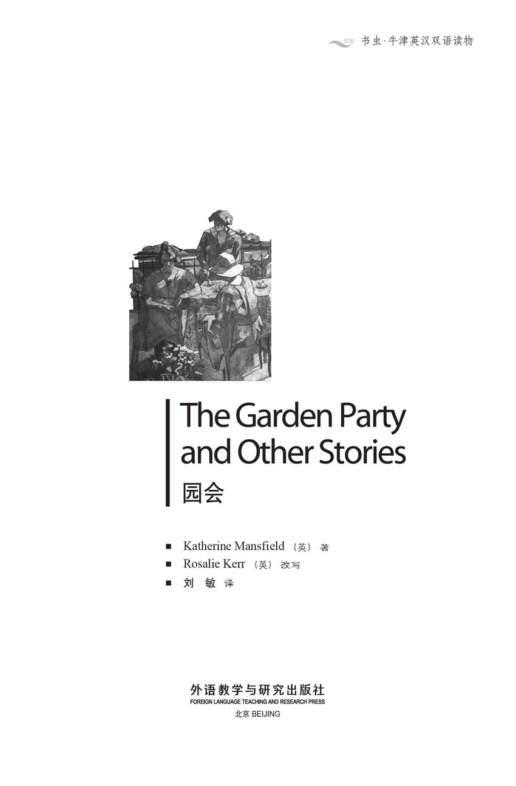
版权页
京权图字：01-2002-6595
Originally published by Oxford University Press, Great Clarendon Street, Oxford. © 2000
This edition is licensed for sale in the People's Republic of China only and not for export therefrom.
'Oxford' is a registered trademark of Oxford University Press.
只限中华人民共和国境内销售，不包括香港特别行政区、澳门特别行政区及台湾省。不得出口。
图书在版编目（CIP）数据
园会＝The Garden Party and Other Stories / （新西兰）曼斯菲尔德（Mansfield, K.）著；（英）克尔（Kerr, R.）改写；刘敏译．—北京：外语教学与研究出版社，2003.12（2014.12 重印）
（书虫·牛津英汉双语读物）
ISBN 978-7-5600-3925-1
Ⅰ．园… Ⅱ．①曼…②克…③刘… Ⅲ．英语—对照读物，故事—英、汉 Ⅳ．H319.4：I
中国版本图书馆CIP数据核字（2003）第112696号
出版人： 蔡剑峰
责任编辑：周 晶
出版发行：外语教学与研究出版社
社 址：北京市西三环北路19 号（100089）
网 址：http://www.fltrp.com
版 次：2004年1月第1版
书 号：ISBN 978-7-5600-3925-1
* * *
凡侵权、盗版书籍线索，请联系我社法律事务部
举报电话：（010）88817519
电子邮箱：banquan@fltrp.com
法律顾问：立方律师事务所 刘旭东律师
中咨律师事务所 殷 斌律师
关于本书
关于本书
短篇小说就像是一张张照片，抓住人们生活中的某一瞬间并将这一记忆永久封存。它们就在那儿，或微笑，或蹙眉，或忧伤，或快乐，或严肃，或惊奇……在这微笑和蹙眉的背后，是生活中的所有经历，有恐惧和喜悦，也有希望和梦想。
这些敏锐而又优雅的故事给我们展示的是平凡人的生活，以及构成平凡人生活的琐碎而又微不足道的小事情。其中包括一次园会和一起死亡事件；一次拼命找工作的经历；一次孤独的跨越欧洲的火车旅行；与一位身藏危险秘密的女人的相遇。还有不近人情的孩子们；年轻姑娘第一次参加舞会时的感受；女主人的贴身女仆的想法；以及新西兰偏僻农场中一个女人的故事。
我们从巴黎一位艺术家的画室开始我们的故事，这个年轻人对于周围的女人们来说是个谜……
THE GARDEN PARTY AND OTHER STORIES
THE GARDEN PARTY
AND OTHER STORIES
Short stories can be like photographs, catching people at some moment in their lives and trapping the memory for ever. There they are, smiling or frowning, looking sad, happy, serious, surprised... And behind those smiles and those frowns lie all the experiences of life, the fears and delights, the hopes and the dreams.
These sensitive and delicate stories give us pictures of ordinary people, and of the small, unimportant events that shape their lives. There is a garden party and a death, a desperate search for work, a journey alone across Europe by train, a meeting with a woman who has a dangerous secret. There are children being cruel, the feelings of a young girl at her first dance, the thoughts of a lady's maid, and of a woman on a lonely farm in New Zealand.
We begin in an artist's studio in Paris, with a young man who is a mystery to the women around him...
目录
Feuille d'album
Feuille d'album
He really was an impossible person. Too shy, and he had nothing at all to say. When he came to your studio, he just sat there, silent. When he finally went, blushing red all over his face, you wanted to scream and throw something at him.
The strange thing was that at first sight he looked most interesting. Everybody agreed about that. You saw him in a café one evening, sitting in a corner with a glass of coffee in front of him. He was a thin boy, who always wore a blue shirt and a grey jacket that was a little too small for him. He looked just like a boy who has decided to run away to sea. You expected him to get up at any moment, and walk out into the night and be drowned.
He had short black hair, grey eyes, white skin and a mouth that always looked ready for tears. Oh, just to see him did something to your heart! And he had this habit of blushing. If a waiter spoke to him, he turned red!
'Who is he, my dear? Do you know?'
'Yes. His name is Ian French. He paints. They say he's very clever. Someone I know tried to mother him. She asked him how often he had a letter from home, if he had enough blankets on his bed, how much milk he drank. Then she went to his studio to make sure he had enough clean shirts. She rang and rang the bell, but nobody came to the door, although she was sure he was there... Hopeless!'
Someone else decided he ought to fall in love. She called him to her, took his hand, and told him how wonderful life can be for those who are brave. But when she went to his studio one evening, she rang and rang... Hopeless.
'What the poor boy really needs is excitement,' a third woman said. She took him to cafés and night-clubs, dark places where the drinks cost too much and there were always stories of a shooting the night before. Once he got very drunk, but still he said nothing, and when she took him home to his studio, he just said 'goodnight' and left her outside in the street... Hopeless.
Other women tried to help him—women can be very kind—but finally they, too, were defeated. We are all busy people, and why should we spend our valuable time on someone who refuses to be helped?
'And anyway, I think there is something rather odd about him, don't you agree? He can't be as innocent as he looks. Why come to Paris if you don't intend to have any fun?'
He lived at the top of a tall, ugly building, near the river. As it was so high, the studio had a wonderful view. From the two big windows he could see boats on the river and an island covered with trees. From the side window he looked across to a smaller and uglier house, and down below there was a flower market. You could see the tops of huge umbrellas with bright flowers around them, and plants in boxes. Old women moved backwards and forwards among the flowers. Really, he didn't need to go out. There was always something to draw.
If any kind woman had been able to get into his studio, she would have had a surprise. He kept it as neat as a pin. Everything was arranged in its place, exactly like a painting—the bowl of eggs, the cups and the teapot on the shelf, the books and the lamp on the table. There was a red Indian cover on his bed, and on the wall by the bed there was a small, neatly written notice: GET UP AT ONCE.
Every day was the same. When the light was good he painted, then cooked a meal and tidied the studio. In the evenings he went to the café or sat at home reading or writing a list which began: 'What I can afford to spend'. The list ended 'I promise not to spend more this month. Signed, Ian French'.
Nothing odd about that; but the women were right. There was something else.
One evening he was sitting at the side window eating an apple and looking down on to the tops of the huge umbrellas in the empty flower market. It had been raining, the first spring rain of the year, and the air smelled of plants and wet earth. Down below in the market, the trees were covered in new green. 'What kind of trees are they?' he wondered. He stared down at the small ugly house, and suddenly two windows opened like wings and a girl came out on to the balcony, carrying a pot of daffodils. She was a strangely thin girl in a dark dress, with a pink handkerchief tied over her hair.
'Yes, it is warm enough. It will do them good,' she said, putting down the pot, and turning to someone in the room inside. As she turned, she put her hands up to her hair to tidy it, and looked down at the market and up at the sky. She did not look at the house opposite. Then she disappeared.
His heart fell out of the window and down to the balcony, where it buried itself among the green leaves of the daffodils.
The room with the balcony was the sitting-room, and next to it was the kitchen. He heard her washing the dishes after supper, saw her come to the window to shake out the tablecloth. She never sang or combed her hair or stared at the moon as young girls are said to do. She always wore the same dark dress and pink handkerchief.
Who did she live with? Nobody else came to the window, but she was always talking to someone. Her mother, he decided, was always ill. They took in sewing work. The father was dead... He had been a journalist. By working all day she and her mother just made enough money to live on, but they never went out and they had no friends.
He had to make some new notices...'Not to go to the window before six o'clock: signed, Ian French. Not to think about her until he had finished his painting for the day: signed, Ian French.'
It was quite simple. She was the only person he wanted to know because she was, he decided, the only person alive who was exactly his age. He didn't want silly girls, and he had no use for older women. She was his age. She was—well, just like him.
He sat in his studio, staring at her windows, seeing himself in those rooms with her. She was often angry. They had terrible fights, he and she. And she rarely laughed. Only sometimes, when she told him about a funny little cat she once had, who used to scratch and pretend to be fierce when she gave it meat to eat... Things like that made her laugh. Usually, they sat together very quietly, talking in low voices, or silent and tired after the day's work. Of course, she never asked him about his pictures, and of course he painted the most wonderful pictures of her, which she hated because he made her so thin and so dark...
But how could he meet her?
Then he discovered that once a week, in the evening, she went shopping. On two Thursdays he saw her at the window in a coat, carrying a basket. The next Thursday, at the same time, he ran down the stairs. There was a lovely pink light over everything. He saw it reflected in the river, and the people walking towards him in the street had pink faces and pink hands.
Outside the house he waited for her. He had no idea what he was going to do or say. 'Here she comes,' said a voice in his head. She walked very quickly, with small, light steps... What could he do? He could only follow...
First she went to buy some bread. Then she went to a fish shop. She had to wait a long time in there. Then she went to the fruit shop and bought an orange. As he watched her, he knew more surely than ever that he must talk to her, now. Her seriousness and her loneliness, even the way she walked—separate, somehow, distant from the other people in the street—all this was so natural, so right to him.
'Yes, she is always like that,' he thought proudly. 'She and I are different from these people.'
But now she was going home, and he had not spoken to her. Then she went into another shop. Through the window, he saw her buying an egg. She took it carefully out of the basket—a brown egg, a beautiful one, the one he himself would have chosen. She came out of the shop, and he went in. A moment later he was out again, following her through the flower market, past the huge umbrellas, walking on fallen flowers.
He followed her into the house and up the stairs. She stopped at a door and took a key out of her purse. As she put the key in the lock, he ran up to her.
Blushing redder than ever, but looking straight at her, he said, almost angrily: 'Excuse me, Mademoiselle, you dropped this.'
And he gave her an egg.
Feuille d'Album n. a French expression for 'a page from an album' (perhaps a book of family photographs). （法语）画页。
studio n. a room where an artist paints, and may also live. 画室。
at first sight as soon as sb./sth. is seen. 一见之下，立即。
mother v. care for (sb./sth.) as a mother does; rear. 像母亲般关怀或照管。
innocent adj. knowing nothing of evil or wrong. 天真无邪的；单纯的。
intend v. have (a particular purpose or plan) in mind; mean. 打算；意欲；想要。
backward(s) and forward(s) first in one direction and then in the other. 来回地。
as neat as a pin very clean and tidy. 非常整洁的。
shake out open or spread sth. by shaking. 用摇动等方法打开或展开。
take in accept (work to do in one's home) for payment. （为赚钱）承揽（在家中做的工作）。
scratch v. make marks on or in (a surface) with a sharp tool, nail, claw, etc.; make a shallow wound in (the skin) in this way. 刮，划，抓。
fierce adj. violent or angry. 凶猛的；凶狠的。
reflect v. (of a surface) throw back (light, heat and sound). （指物体表面）反射（光、热、声）。
Mademoiselle n. the French word for 'Miss' (an unmarried woman). （法语）小姐（指未婚女子）。
画页
画页
他真是个令人难以忍受的人。那么怕羞，跟人压根儿就无话可说。他进了你的工作室，就一声不吭地坐在那儿。当他满脸通红终于要走的时候，你真想冲他大叫，把什么东西朝他扔过去。
奇怪的是，他给人第一眼的印象却显得非常有趣。对于这一点，大家都有同感。某个晚上你会在咖啡馆里看到他，面前放了杯咖啡，在角落里坐着。他是个瘦瘦的小伙子，总是穿一件蓝衬衣和一件有些嫌小的灰色夹克。他看上去就像个决定要逃亡海上的男孩儿。你觉得他随时都会起身，走进夜色，淹没在海里。
他留着一头短短的黑发，长着灰色的眼睛，白皙的皮肤，还有那看起来总像要哭的嘴巴。噢，只要看见他你就会心动！他还有爱脸红的习惯。即使是侍者跟他说话，他也会脸红！
“他是谁，亲爱的？你认识吗？”
“认识。他叫伊恩·弗伦奇，画画的，听说很聪明。有个我认识的人试图像母亲一样地照顾他。她问他多长时间能收到一封家信，床上的毯子够不够用，以及喝多少牛奶。后来她去他的画室想看看他的干净衬衫够不够穿。她一遍又一遍地按门铃，但是没人应门，尽管她确信他就在里面……无可救药！”
另一个女人认为他应该去恋爱。她把他叫到身边，拉着他的手，告诉他对于那些勇敢者来说，生活会有多么美好。但是，当她有一天晚上去他的画室时，她一遍又一遍地按门铃……无可救药。
“这个可怜的小伙子真正需要的是刺激。”第三个女人说。她把他带到咖啡馆和夜总会，都是些昏暗的地方，在那里饮料卖得特别贵，并且总能听到头天夜里发生的枪击案。有一次他喝得酩酊大醉，可还是一言不发。她送他回画室时，他只说了句“晚安”就完事了，把她一人留在了外面的大街上……无可救药。
还有些女人试图帮他——女人们有时非常仁慈——可她们最终也都失败了。我们都很忙，为什么要把我们宝贵的时间花到拒绝接受帮助的人身上呢？
“不管怎么说，我还是认为他这人挺古怪的，你们说呢？他不可能像表面看上去的那样天真无邪。如果不想找乐子的话，为什么要来巴黎呢？”
他住在河边一幢难看的高楼顶层。因为楼很高，他从画室可以看到美丽的风景。从那两扇大窗户往外望，可以看到河上的船只，还有一座长满树木的小岛。从侧面窗户往外望，可以看到更小更难看的房子，再往下看有一个花市。你能看到很多大伞的顶部，伞的四周摆着艳丽的鲜花和盆栽植物。老妇人们在花丛中走来走去。他真的没有必要出去，因为在这里总能找到画画的素材。
任何一个好心的女人要是能进入他的画室的话，肯定会吃惊的。他把房间收拾得干干净净，一切都布置得井井有条，就像是一幅画一样——盛着鸡蛋的碗，放在架子上的杯子和茶壶，摆在桌上的书和灯。床上盖着一条红色的印度床罩，床边的墙上贴着一小张书写工整的便条：马上起床。
每天的日子都过得一模一样。光线充足的时候他画画，然后做饭，收拾画室。晚上他去咖啡馆，或者坐在家里读书，或者写份清单，开头是“我能够支付的钱数”。结束语是“我保证这个月的开销绝不超过上个月。伊恩·弗伦奇（签名）。”
这倒没有什么古怪的；但女人们是对的。他有其他的怪异之处。
有一天晚上，他坐在侧面窗户旁吃苹果，望着下面空无一人的花市里那些大伞的顶部。外面一直在下雨，这是这一年中的第一场春雨。空气中弥漫着草木的芳香和湿润的泥土气息。楼下市场里的树木涂上了一层新绿。“这是些什么树呢？”他心里琢磨着。他凝视着下面一所又小又难看的房子，突然两扇窗户像翅膀一样地打开了，一个女孩儿来到了阳台上，手里还捧着一盆水仙花。这是个瘦得出奇的女孩儿，穿一件深色衣服，头发上扎着条粉红色的手帕。
“是的，天气够暖和了，对这些花有好处。”她边说边把花盆放下，转身朝向屋里的什么人。再转过来时，她抬手整理了一下头发，低头望望市场，又抬头看看天空。她没有朝对面的房子张望，接着就消失了。
他的心飞出了窗外，直落到那个阳台上，掩埋在水仙花绿色的叶丛中。
那个带阳台的房间是起居室，隔壁是厨房。他听见晚饭后她洗刷碗碟的声音，看见她走到窗边抖桌布的身影。她从不像别的年轻女孩子那样唱歌、梳头，或是凝视月亮。她总穿着那件深色衣服，系着那条粉红色的手帕。
她跟谁住在一起呢？没有别的人走到窗边，可她总是在跟屋里的什么人讲话。他猜想她母亲老是在生病，她们揽些缝缝补补的活计来生活，她父亲已经死了……他以前曾是个新闻记者。她们母女俩工作一整天挣的钱只够维持温饱，可是她们从不出门，也没有朋友。
他得写一些新的便条……“6点钟之前不准到窗边：伊恩·弗伦奇（签名）；没有完成当天的绘画之前不许想她：伊恩·弗伦奇（签名）。”
事情很简单。她是他惟一想结识的人，因为他觉得她是世间所有活着的人中仅有的一个和他年龄相同的人。他不喜欢傻傻的姑娘，也不需要年纪大些的女人。她跟他一样大。她——嗯，和他很像。
他坐在画室里，凝视着她的窗口，仿佛看到自己就在那些房间里，和她在一起。她老爱生气。他们吵得很凶，他和她。她很少笑，只有偶尔讲起自己以前养的一只滑稽小猫的时候，她才会笑。她每次喂这只猫吃肉的时候，它总是摩拳擦掌，装作很凶猛的样子……只有这样的事才会使她发笑。他们通常总是非常安静地坐在一起，要么低声交谈，要么默默无语，因为劳作了一天，已感觉很疲乏了。她当然从来不会过问他画的那些画，他当然也为她画了最漂亮的画像，可她却讨厌这些画，因为他把她画得那么瘦、那么黑……
可是他怎样才能结识她呢？
后来他发现，她每周要出去买一次东西，而且是在晚上。有两个星期四他都在窗口看到她穿着件外衣，提着一只篮子。到了又一个星期四的同一时刻，他跑下楼去。周围的一切都笼罩在一片可爱的粉红色亮光里。他看见河水泛着粉红色的光，大街上朝他走来的行人的脸和手也被映成了粉红色。
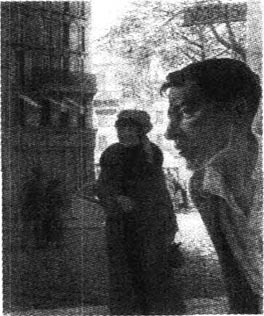
他在房子外面等她。他不知道要做什么，也不知道要说什么。“她来了，”他脑海中有个声音说道。她走得很快，步子又小又轻……他能做什么呢？他只能跟着……
她先去买了点儿面包，然后又去了鱼店。她在那里等了很长时间。接着她又去了水果店，买了个橘子。他在观察她的时候，比以往任何时候都清楚自己一定得跟她说话，现在就去。她的严肃、孤独，甚至是她走路的样子——不知道是为什么，这使她与街上的其他人隔离开来——可是所有这一切对他来说却是那么自然，那么恰到好处。
“是的，其实她一直都是这样，”他自豪地想，“我和她跟这些人是不一样的。”
可现在她要回家了，他还没能跟她说上话。接着她又进了另一家商店。透过窗户，他看见她买了一只鸡蛋。她小心翼翼地把鸡蛋从篮子中取出来——蛋是棕色的，样子很美，换了他也会挑这只蛋的。她从这家商店出来，而他走了进去。过了一会儿他又出来了，跟着她穿过花市，经过那些大伞，踩着掉在地上的花。
他跟着她进了房子，上了楼梯。她在一扇门前停下，从钱夹里掏出钥匙。当她把钥匙插进门锁的时候，他跑了上去。
他的脸从来没有这么红过，可他却直视着她，几乎是有点儿愤怒地说：“对不起，小姐，您掉了这个。”
他递给她一只鸡蛋。
The doll's house
The doll's house
When dear old Mrs Hay went home after staying with the Burnells, she sent the children a doll's house. It was so big that Pat, the hired man, could only just lift it, and they had to leave it outside in the garden. It was all right there; it was summer. And perhaps the smell of paint would go before they had to take it indoors. Really, the smell of paint (so sweet of dear, generous Mrs Hay!) — but the smell of paint was so strong that it was enough to make anyone seriously ill, or so Aunt Beryl thought. You could smell the paint even when it was wrapped up. And when they unwrapped it...
There it stood, a doll's house, painted a thick, dark, oily green. Its two solid little chimneys were painted red and white, and it had a bright yellow door and real glass windows.
It was perfect! Who cared about the smell? It was part of the wonder of the doll's house, part of the newness.
'Open it quickly, someone!'
The fastening at the side was stuck fast, and Pat had to use his knife to get it open. But then... the whole front of the house swung back and—you could see everything! The sitting-room, the kitchen, the two bedrooms. That is the way for a house to open! Why don't all houses do that? How exciting, to be able to see everything you want to see, all at once!
'Oh—oh!' The Burnell children were quite unable to speak. It was too wonderful. They had never seen anything like it in their lives. There was paper on the walls, and pictures, just like in real houses. There was red carpet on the floors, except in the kitchen; red and green chairs, beds with real covers on them, tiny plates and cups.
But what Kezia liked more than anything, what she liked most awfully, was the lamp. It stood in the middle of the table, a beautiful little gold and white lamp, all ready to be lit. Of course, you couldn't really light it, but there was something inside it that looked like oil and moved when you shook it.
The mother and father dolls sitting stiffly in their chairs and their two little children in bed upstairs were really too big for the doll's house. They didn't look quite right. But the lamp was perfect. It seemed to smile at Kezia, to say, 'I live here.' The lamp was real.
* * *
The Burnell children could not walk to school fast enough the next morning. They burned to tell everybody about the doll's house.
'I shall describe it,' said Isabel, 'because I'm the eldest. You two can join in, but I must speak first.'
Lottie and Kezia said nothing. Isabel was bossy, but she was always right.
'And I shall choose who's going to come and see it first,' Isabel said. 'Mother said I could.'
Their mother had told them that they could ask the girls at school, two at a time, to come and see the doll's house. Of course, they were not invited to tea, or to come into the house, but they could come into the garden and stand there quietly, while Isabel showed them all the lovely things in the doll's house.
It was too bad that they arrived at school just as the bell was ringing, and they had no time to talk to anyone. Never mind! Isabel looked very important and mysterious, and whispered to some of her friends, 'I've got something to tell you at play-time!'
When play-time came, everyone wanted to be near Isabel. The little girls almost fought to put their arms around her, to walk beside her and be her special friend. Laughing and pushing one another, they gathered closely around her. The only two who stayed outside the circle were the two who were always outside—the Kelveys. They knew they were not wanted.
To be perfectly honest, the school the Burnell children went to was not the kind of school their parents really wanted for them. But they had no choice. It was the only school for miles. And because of this, all the children in the area, the Judge's little girls, the doctor's daughters and all the children of milkmen and farmers, were forced to mix together. And there were plenty of rude, rough little boys, too. But worst of all, there were the Kelveys. The Burnell children were not allowed to speak to them. They walked past the Kelveys with their heads in the air. And because others followed where the Burnells led, nobody spoke to the Kelveys. Even the teacher had a special voice for them, and a special smile for the other children when Lil Kelvey came up to her desk to give her some very tired-looking flowers she had picked by the side of the road.
They were the daughters of a neat, hard-working little woman, who went from house to house, doing people's washing for them. This was awful enough. But where was Mr Kelvey? Nobody knew. But everybody said he was in prison. So they were the daughters of a woman who washed people's clothes and a man who was in prison. Very nice companions for other people's children!
Then there was the way they looked. It was hard to understand why Mrs Kelvey dressed them in such an odd way. The truth was, she made their clothes from old bits and pieces which were given to her by the people she worked for. Lil, for example, who was a solid, plain child, came to school in a dress made out of an old green tablecloth of the Burnells, and a red curtain that had belonged to the Logans. Her hat came from Miss Lecky at the post office, and had a long red feather stuck in it. What a sight she looked! It was impossible not to laugh.
And her little sister, 'our Else', as Lil always called her, wore a long white dress that looked like a night-dress, and a pair of boy's boots. But our Else would have looked strange in any clothes. She was a tiny white creature with huge eyes—just like a little bird. Nobody had ever seen her smile; she hardly ever spoke. Everywhere Lil went, our Else followed, holding a piece of Lil's skirt in her hand. In the playground or on the road to or from school, you could always see Lil, with our Else close behind her. When she wanted something, our Else pulled on Lil's skirt, and Lil stopped and turned around. The Kelveys always under stood one another.
Now they stood at the edge of the circle, outside the group of friends. You couldn't stop them listening. When the little girls turned round and gave them angry looks, Lil, as usual, smiled all over her silly red face, but our Else just stared and said nothing.
Isabel talked on, in a proud voice. She described the car pet, the beds with real covers, the kitchen with its tiny cups and plates.
When she finished, Kezia said, 'You've forgotten the lamp, Isabel.'
'Oh yes,' said Isabel. 'There's a lovely little lamp on the table. It's just like a real one.'
'The lamp's best of all,' cried Kezia. She wanted Isabel to talk for longer about the lamp, to let everyone know how special it was. But nobody was listening to Kezia. Isabel was choosing the first two who were going to come and see the doll's house. She chose Emmie Cole and Lena Logan. But all the others knew that they would have a chance to see it another day. They all wanted to be nice to Isabel. They all had a secret to whisper to her. 'Isabel's my friend.'
Only the little Kelveys were forgotten. There was nothing more for them to hear.
* * *
Days passed, and more and more children were taken to see the doll's house. It was the one thing they talked about. 'Have you seen the Burnells' doll's house? Oh, isn't it lovely? Haven't you seen it yet? Oh, dear!'
The little girls talked about the doll's house at dinner-time, as they sat under the trees in the school playground, eating their thick meat sandwiches and buttered cake. The little Kelveys listened, while they ate their bread and butter out of a piece of newspaper.
'Mother,' said Kezia, 'please can I ask the Kelveys, just once?'
'Of course not, Kezia.'
'But why not?'
'Run away, Kezia. You know why not.'
* * *
At last the day came when everyone except the Kelveys had seen the doll's house. That day, there was less to talk about. It was dinner-time. The little girls sat together under the trees, and suddenly, as they looked at the Kelveys eating out of their piece of newspaper, they wanted to be unkind to them.
Emmie Cole started it. 'Lil Kelvey's going to be a servant when she grows up,' she whispered.
'Oh, how awful!' said Isabel Burnell.
Emmie looked at Isabel in a way she had seen her mother look, when she was talking about things like this.
'It's true,' she said.
Then Lena Logan joined in. 'Shall I ask her?' she said.
'You don't dare,' said Jessie May.
'Oh, I'm not frightened,' said Lena. She laughed and did a little dance in front of the other girls. 'Watch! Watch me now!' she said, and she danced right over to the Kelveys.
Lil looked up from her bread and butter. Our Else stopped eating. What was coming now?
'Is it true that you're going to be a servant when you grow up, Lil Kelvey?' Lena screamed at her.
Silence. Lil gave no answer, but she smiled her silly, red-faced smile. She didn't seem to mind the question at all. Poor Lena! The other girls began to laugh at her.
Lena didn't like that. She stepped right up to Lil 'Yah, your father's in prison!' she shouted in her face.
This was so wonderful to hear that all the little girls rushed away together, deeply excited by what Lena had done. How fast they ran, how high they jumped, how wild and free they felt that morning!
In the afternoon, Pat came to take the Burnell children home. There were visitors. Isabel and Lottie, who liked visitors, went upstairs to change their dresses, but Kezia slipped quietly out into the garden. There was nobody there. She began to swing on the big white garden gate. Then, looking down the road, she saw two little figures coming towards her, one in front, the other close behind. It was the Kelveys. She got down from the gate. For a moment she thought about running away. The Kelveys came nearer. Then Kezia climbed back up on the gate. She had decided what she must do. She started swinging on the gate again.
'Hello,' she said to the Kelveys.
They were so surprised that they stopped. Lil gave her silly smile. Our Else stared.
'You can come and see our doll's house if you want to,' Kezia said.
Lil turned red. She shook her head.
'Why not?' asked Kezia.
'Your ma told our ma you mustn't speak to us.'
'Oh, well,' said Kezia. She didn't know what to say. 'It doesn't matter. But you can still come and see our doll's house. Come on. Nobody's looking.'
But Lil shook her head again.
'Don't you want to?' asked Kezia.
Suddenly, there was a pull on Lil's skirt. She turned round. Our Else was looking at her with big, desperate eyes. She wanted to see the doll's house. Lil looked at her very doubtfully. But then our Else pulled her skirt again. Lil stepped forwards. Like two little lost cats, they followed Kezia across the garden to where the doll's house stood.
'There it is,' said Kezia.
They said nothing. Lil breathed loudly. Our Else was as still as stone.
'I'll open it for you,' said Kezia kindly. 'Look, here's the sitting-room and the kitchen, and that's the—'
'Kezia!'
Oh, how they jumped!
'Kezia!'
It was Aunt Beryl's voice. They turned round. She was standing at the back door, staring at them. Aunt Beryl just couldn't believe her eyes.
'How dare you bring the little Kelveys into our garden!' she said to Kezia, in a cold, angry voice. 'You know as well as I do that you aren't allowed to talk to them.'
'Run away, children, run away and don't come back!' she said to the Kelveys. 'Off you go immediately!'
She did not have to tell them twice. They were out of the garden in a moment, Lil red-faced and ashamed, with our Else hanging onto her skirt.
'Bad, disobedient little girl!' Aunt Beryl said bitterly to Kezia, and she closed the doll's house with a bang.
Aunt Beryl had been having a terrible day, but now that she had got rid of those little animals the Kelveys and shouted at Kezia, she felt a lot better. She went back into the house singing.
When the Kelveys were far away from the Burnells' house, they stopped and sat down by the side of the road. Lil's face was still burning, and she took off her hat. They stared across the fields, where the Logans' cows were eating grass. What were the little Kelveys thinking?
Our Else moved closer to her sister. She had already forgotten the angry lady. She put out a finger and touched the feather on Lil's hat. She smiled her rare smile.
'I seen the little lamp,' she said softly.
Then both were silent once more.
wrap v. cover or enclose sth. (in soft or flexible material). 包裹。
fastening n. device that fastens sth. 将某物固定的装置。
all at once suddenly. 突然。
burn to do sth. want to do sth. very much. 极欲做某事。
bossy adj. (derog.) fond of giving people orders; domineering. （贬）爱发号施令的；专横的；飞扬跋扈的。
at a time in sequence; separately. 依次；逐一；每次。
neat adj. in good order; showing care in appearance; tidy. 整齐的；整洁的。
nice adj. (ironic) bad; unpleasant. （反语）坏的；令人不愉快的。
stick v. to join or fasten together, or to push sth. into sth. else. 粘住；插入，穿入。
slip v. go somewhere quietly or quickly, e.g. in order not to be noticed or without being noticed. 悄悄或匆匆到某处。
hang on to sth. hold sth. tightly. 抓紧。
disobedient adj. not obedient. 不顺从的；不服从的。
now... (that) because of the fact that. 由于……；既然……。
娃娃屋
娃娃屋
亲爱的海老太太在伯内尔家小住之后，回到自己家里，很快便给孩子们送去了一座娃娃屋。娃娃屋很大，雇来干活的帕特勉强能搬动它，他们只得把它放在外面花园里。放在那儿还不错；因为正值夏季。等到他们非得把它搬进室内不可时，也许油漆味早就散尽了。确实，娃娃屋散发出一股油漆味（亲爱的海老太太真是太好、太大方了！）——但是这股油漆味实在太重，重得叫人直想呕吐，贝里尔姨妈就是这么认为的。甚至在还没有打开包装的时候就能闻到这股味。当他们把包装一打开……
娃娃屋就立在那里，漆着厚厚一层闪亮的深绿色油漆。小屋上两个结实的小烟囱被漆成红白两色，还有一扇光亮的黄色小门和装着真玻璃的窗户。
太完美了！谁还会在乎那股气味呢？这也是组成这座奇妙的娃娃屋的一部分，也是说明小屋之新的一部分呀。
“来人呀，快把它打开！”
边上的钩子卡得紧紧的，帕特只能用刀子把它撬开。于是……房子的整个前面翻了过来——你能看到房子里所有的东西！起居室、厨房和两间卧室。这才是打开屋子的办法呢！为什么房子不都这样打开呢？一下子就能看到你想看的所有东西是多么令人兴奋啊！
“噢——噢！”伯内尔家的孩子激动得说不出话来。真是太美妙了。他们有生以来还没有见过这样的东西。墙上贴着墙纸，还挂了图画，就像在真正的房子里一样。除了厨房以外，其他房间的地板上都铺着红地毯；房间里放着红红绿绿的椅子，铺着真被褥的床，还有小盘子和小茶杯。
但是凯齐娅最最喜欢的，喜欢得不得了的还是那盏灯。这是盏漂亮小巧的金色和白色相间的灯，立在桌子中央，仿佛随时可以点亮。当然你是无法真的把它点亮的，但那里面装有像油一样的东西，一晃就动。
僵硬地坐在椅子上的娃娃爸爸和妈妈，以及他们那两个在楼上睡觉的小孩子，对于娃娃屋来说显得太大了，看上去不太协调。但是那盏灯却太完美了。它好像在对凯齐娅微笑，好像在对她说：“我就住在这儿。”这可真是一盏名副其实的灯。
* * *
第二天早晨上学时，伯内尔家的孩子们总嫌走得不够快。她们急切地想把娃娃屋的事告诉每一个人。
“我来讲，”伊莎贝尔说，“因为我是老大。你们两个可以帮腔，但得由我先讲。”
洛蒂和凯齐娅什么也没说。伊莎贝尔挺霸道，但她总是对的。
“谁先来看小屋也得由我挑，”伊莎贝尔说，“妈妈说我可以这样的。”
母亲告诉她们可以请学校的女孩儿来看娃娃屋，每次来两个人。当然不能邀请她们吃茶点，也不准进到屋里来，但是她们可以到花园里，安安静静地站在那儿，由伊莎贝尔把娃娃屋里所有的可爱之处指给她们看。
真是太糟糕了，她们赶到学校的时候，铃声正好响了，她们没有时间跟任何人交谈。可是没关系！伊莎贝尔显出非常权威而又神秘的样子，悄声对她的几个朋友说：“游戏时间我有事情要告诉你们！”
游戏时间到了，每个人都想靠近伊莎贝尔，小姑娘们你争我抢地搂住她，走在她的旁边，做她特别要好的朋友。姑娘们嘻嘻哈哈，你推我攘，把她紧紧围住。只有两个人站在圈子外面，这两个人总是站在圈子外面的——她们就是凯尔维姐妹。她们明白这里不欢迎她们。
说实话，伯内尔家的孩子上的学校，并不是她们的父母真正想让她们上的那种学校。可是他们别无选择，这是方圆数英里内仅有的一所学校。因为这个原因，这一地区的所有孩子，包括法官家的小姑娘们，医生的女儿们，还有所有那些送奶人和农民的孩子，都被迫混在了一起。这里面也有很多粗野无礼的小男孩儿，但最糟糕的是，凯尔维姐妹也在这个学校。伯内尔家的孩子是不许同她们讲话的。她们走过凯尔维姐妹身边时，都把头仰得高高的。因为大家都以伯内尔家为楷模，所以就没有人跟凯尔维姐妹说话了。就连老师都用一种异样的声调跟她们讲话。当利尔·凯尔维把她在路边采的蔫巴巴的花送到老师桌前时，老师朝其他孩子意味深长地笑了笑。
她们的母亲是个干净利落而又勤快的矮个子女人，挨家挨户为别人洗衣服。这已经很糟糕了。可是凯尔维先生在哪儿？谁也不清楚。但人人都说他关在监牢里。所以说她们是洗衣妇和囚犯的女儿。她们可真不配做别人家孩子的伙伴！
而她们的外表也够瞧的。凯尔维太太为什么把她们打扮得这般怪模怪样，实在是让人费解。实际上，她给她们做的衣服都是用旧布头拼起来的，这些旧布头是她帮工的人家给的。比如说利尔，这是个身材结实、相貌平平的孩子，她上学穿的衣服是用伯内尔家绿色的旧桌布和洛根家的红窗帘改做的。她戴的帽子是在邮局工作的莱基小姐给的，上面还插着一根长长的红羽毛。瞧她那副模样！简直没法叫人不笑。
她那位总是被她叫作“我们的埃尔斯”的小妹妹，穿着一件样子像睡衣的白色长袍和一双男孩儿的靴子。但不管我们的埃尔斯穿什么衣服，瞧着总觉得怪得很。她瘦小、苍白，长着一双大眼睛——简直就像一只小鸟。从来没有人见她笑过；她也几乎从不说话。利尔走到哪儿，我们的埃尔斯就拉着她的裙子边跟到哪儿。在操场上，在上学放学的路上，你总能看到利尔走在前面，我们的埃尔斯紧跟在后面。当我们的埃尔斯想要什么东西的时候，就拉拉利尔的裙子，利尔就会停下来，转过身去。凯尔维姐妹总能理解彼此的意图。
现在她们就站在这群朋友围成的圈子边上。你总不能不让她们听吧。当小姑娘们转过身来愤怒地看着她们的时候，利尔就像往常一样，红红的傻乎乎的脸上堆满了笑容，而我们的埃尔斯则只是瞪着眼睛，一声不吭。
伊莎贝尔还在继续讲着，她的声音得意非凡。她描述着小屋里的地毯，铺着真被褥的床，还有摆放着小杯子和小盘子的厨房。
等她讲完，凯齐娅说：“你忘了讲那盏灯了，伊莎贝尔。”
“噢，对，”伊莎贝尔说，“桌子上还放着一盏可爱的小灯，跟真的一模一样。”
“这盏灯最最好。”凯齐娅嚷道。她想让伊莎贝尔再多谈谈这盏灯，好让每个人都知道这盏灯的特别之处，但是没有人听凯齐娅说。伊莎贝尔正在挑选头两个去看娃娃屋的女孩儿。她选中了埃米·科尔和莉娜·洛根，不过其他人都知道她们总会有一天有机会去的。她们都想跟伊莎贝尔套近乎。她们都有个秘密要悄悄告诉她：“伊莎贝尔是我的朋友。”
只有小凯尔维姐妹被遗忘了。她们没什么可听的了。
* * *
几天过去了，越来越多的孩子被带去看了娃娃屋。娃娃屋成了她们谈论的惟一话题。“你去看过伯内尔家的娃娃屋了吗？噢，真可爱呀！你还没看过？噢，天哪！”
小姑娘们吃饭的时候还在谈论娃娃屋。她们坐在学校操场的大树下面，吃着厚厚的夹肉三明治和涂着黄油的蛋糕。小凯尔维姐妹一边吃着用报纸包的黄油面包，一边听着别人谈话。
“妈妈，”凯齐娅间，“我能让凯尔维姐妹来吗，就一次？”
“当然不可以，凯齐娅。”
“可是为什么呢？”
“走开，凯齐娅。你知道为什么不行。”
* * *
这一天终于到了。除了凯尔维姐妹外，所有人都去看过了娃娃屋。那一天，大家几乎没有什么可谈论的了。当时正是吃饭时间。小姑娘们围坐在大树底下，当她们看到凯尔维姐妹在吃报纸包的食物时，突然想要整整她们俩。
埃米·科尔首先开始。“利尔·凯尔维长大要当佣人。”她悄悄地说。
“噢，多糟啊！”伊莎贝尔·伯内尔说。
埃米学着母亲谈论这类事情时的样子看着伊莎贝尔。
“没错。”她说。
接着莉娜·洛根加入了她们的谈话。“我去问问她好不好？”她说。
“谅你也不敢。”杰西·梅说。
“噢，我才不怕呢。”莉娜说。她笑了起来，并在其他女孩子面前跳起了舞。“瞧吧！现在瞧我的吧！”她说着就跳着舞来到了凯尔维姐妹跟前。
利尔抬起头，我们的埃尔斯也停下不吃了。到底是怎么回事？
“你长大以后要去当女佣，这是真的吗，利尔·凯尔维？”莉娜尖声问她。
一阵沉默。利尔没有答话，只是傻傻地、红着脸笑了笑。她好像根本就不在意这个问题。可怜的莉娜！其他女孩儿开始笑话她了。
莉娜可不喜欢这样，她径直朝利尔走去。“唷，你爸爸在坐牢呢！”她在利尔面前大叫。
听到这样的话真是太妙了，小女孩儿们全都跑开了，为莉娜的所作所为感到异常兴奋。那天上午她们跑得那么快，跳得那么高，感觉是那么的狂野和自在！
下午的时候，帕特来接伯内尔家的孩子回家。家里来客人了。伊莎贝尔和洛蒂喜欢有客人来，她们到楼上换衣服去了，可是凯齐娅却悄悄地溜到了花园里。那儿一个人都没有。她开始攀在花园的白色大门上荡来荡去。这时，她沿路望去，看见有两个小小的身影正朝她走来，一个在前，另一个紧跟其后。是凯尔维姐妹。她从门上下来。她考虑了片刻，想要从这儿跑开。凯尔维姐妹走得更近了。凯齐娅又攀到了门上。她已打定主意要做什么了。她又开始在门上荡来荡去。
“你们好。”她对凯尔维姐妹说。
她们大吃一惊，不由得站住了。利尔傻乎平地笑了，我们的埃尔斯瞪着眼睛。
“如果你们愿意，可以来看我们的娃娃屋。”凯齐娅说。
利尔涨红了脸。她摇了摇头。
“为什么不呢？”凯齐娅问。
“你妈告诉我妈，不许你们跟我们说话。”
“噢，是这样。”凯齐娅说。她不知道该说什么好，“没关系，你们还是可以来看我们的娃娃屋。来吧，没人看见。”
但是利尔又摇了摇头。
“你们难道不想看吗？”凯齐娅问。
突然利尔的裙子被扯了一下。她转过身去。我们的埃尔斯正用她那双大眼睛渴求地望着她。她想去看看娃娃屋。利尔很迟疑地看着她。我们的埃尔斯又拉了一下她的裙子，于是利尔往前走去。她们就像是两只迷途的小猫，跟着凯齐娅穿过花园，来到娃娃屋跟前。
“这就是。”凯齐娅说。
她们什么都没说。利尔喘着粗气，我们的埃尔斯像块石头一样一动不动地站着。
“我来给你们打开，”凯齐娅和气地说，“看，这是起居室和厨房，那是——”
“凯齐娅！”
噢，她们被吓得跳了起来！
“凯齐娅！”
这是贝里尔姨妈的声音。她们转过身。贝里尔姨妈就站在后门口，两眼瞪着她们。她真不敢相信自己的眼睛。
“你竟敢把凯尔维家的孩子带到我们的花园里来！”她用冷酷而又愤怒的声音对凯齐娅说，“你和我都很清楚，你是不准和她们讲话的。”
“走开，小孩儿，走开，再也不要来！”她对凯尔维姐妹说，“你们立刻滚出去！”
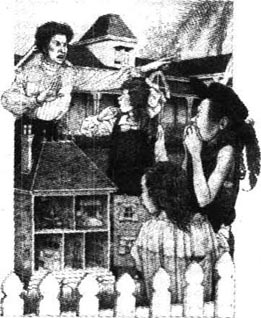
她根本不必再说第二遍，她们马上离开了花园，利尔满脸通红，羞愧难当，我们的埃尔斯紧紧地拉着姐姐的裙子。
“你这个不听话的坏姑娘！”贝里尔姨妈狠狠地对凯齐娅说着，“砰”地一声把娃娃屋关上了。
贝里尔姨妈那天一直很不痛快，但因为她把凯尔维家的小崽子给撵走了，又冲凯齐娅吼了一番，觉得好受多了。她唱着歌返回屋里去了。
当凯尔维姐妹离开伯内尔家很远了的时候，她们停了下来，在路边坐下。利尔的脸还在发烧，她摘下了帽子。她们向田野的那边望去，洛根家的牛正在那里吃草。小凯尔维姐妹在想什么呢？
我们的埃尔斯往姐姐身边靠了靠。她已经忘记了那位愤怒的女士。她伸出一只手指，抚摸着利尔帽子上的羽毛，露出了难得的笑容。
“我看见那盏小灯了。”她轻声说。
接下去两人又默默无声了。
The garden party
The garden party
They need not have worried. The weather was perfect—warm, and without a cloud in the sky. The gardener had been at work since dawn, cutting and brushing the lawns, until the green grass shone. And the roses—the roses were wonderful. Hundreds of flowers had opened during the night. You could almost believe that the roses knew about the garden party!
While the Sheridan girls were having breakfast, the men came with the marquee.
'Where shall we put the marquee, mother?' asked Meg.
'My dear child, please don't ask me. I'm determined to make you children organize everything this year. Forget that I am your mother. Pretend I'm one of your guests.'
But Meg could not possibly talk to the men. She had just washed her hair. Jose, as usual, wasn't even dressed yet.
'You'll have to go, Laura. You're the artistic one in this family.'
Laura flew out of the house, still holding a piece of bread and butter in her hand. Food always tasted delicious out of doors, and Laura loved arranging things. She always felt that she could do it better than anyone else.
Four men were waiting on the garden path. They were carrying big bags of tools, and looked very serious. Laura wished she had left her bread and butter in the house. She blushed, and tried to look business-like.
'Good morning,' she said, copying her mother's voice. But it sounded so silly that she was ashamed, and asked, just like a little girl, 'Oh, have you come—is it about the marquee?'
'That's right, miss,' said the tallest of the men. He pushed back his hat and smiled down at her.
His smile was so friendly that Laura felt better immediately. What nice eyes he had—small, but a lovely dark blue! All the men were smiling now. 'Cheer up! We won't bite!' they seemed to be saying. How very nice workmen were! And what a beautiful morning! She mustn't mention the morning; she must be business-like. The marquee.
'Well, shall we put it on the lawn over there?'
She pointed with the hand that was not holding the bread and butter. They all turned and stared. The tall man frowned.
'I don't like it,' he said. 'You wouldn't notice it there. You see, with a thing like a marquee, you want it where it hits you—bang in the eye, as you might say.'
Laura had been brought up in a way which made her wonder for a moment whether a workman should use an expression like 'bang in the eye' to her. But she understood what he meant.
'A corner of the tennis court,' she suggested. 'But the band's going to be in one corner.'
'Having a band, are you?' said another workman. He was pale, with a tired look in his dark eyes. What was he thinking?
'Only a very small band,' Laura said gently. Perhaps he wouldn't mind a very small band. But the tall man said, 'Look here, miss, that's the place. By those trees. Over there.'
By the karaka trees. The marquee would hide them. And the karaka trees were so lovely, with their big, shiny leaves and orange fruit. Must they be hidden by a marquee?
They must. The men were already carrying their bags of tools across the lawn. Only the tall man was left. Suddenly, he bent down, touched a rose, and pulled it gently towards him to smell it.
When Laura saw him do that, she forgot about the karakas. He was a workman who loved the perfume of roses. How many of the men that she knew cared about things like that? Oh, how nice workmen are, she thought. Why couldn't she have them for her friends, instead of the silly boys she danced with and who came to Sunday night supper? She liked these men much better.
It's all the fault, she decided, of these stupid differences in social class. Well, for her there were no differences. Absolutely none at all, not a single one... And now there came the sound of hammers. Someone whistled, someone called out, 'Are you all right, mate?' 'Mate!' How friendly they were! Just to show how happy she was, how she liked being among these friendly men, Laura took a big bite out of her bread and butter. She felt just like a work-girl.
'Laura, Laura, where are you? Telephone, Laura!' a voice cried from the house.
'Coming!' She ran across the lawn, up the path and into the house. In the hall, her father and Laurie were brushing their hats, getting ready to go to the office.
'I say, Laura,' said Laurie, 'take a look at my coat, can you, before this afternoon? I think it needs ironing.'
'All right,' she said. Suddenly, she couldn't stop herself. She ran up to Laurie and threw her arms around him. 'Oh, I do love parties, don't you!' she cried.
'I'll say I do!' said Laurie's warm, boyish voice. He gave his sister a gentle push. 'Run off to the phone, old girl.'
The telephone. 'Yes, yes; oh yes. Kitty? Good morning, dear. Come to lunch, my dear! It will be nothing special—just what's left over. Yes, isn't it a perfect morning? Yes, wear your white dress. One moment—mother is saying something.'
Mrs Sheridan's voice floated down the stairs. 'Tell her to wear that sweet hat she wore last Sunday.'
'Mother says you must wear that sweet hat you wore last Sunday. Good. One o'clock. Bye-bye!'
Laura put down the phone, took a deep breath, and stretched out her arms. Then she stood still, listening. The house was alive with sounds of running feet and distant voices. Somewhere down in the kitchen, a door opened and closed. Sunlight, and little warm winds, played in and out of the windows. Darling little winds.
The door-bell rang, and she heard a man's voice and then Sadie saying, 'I'm sure I don't know. Wait. I'll ask Mrs Sheridan.'
'What is it, Sadie?' Laura came into the hall.
'The flowers have come from the shop, Miss Laura.'
And there they were, by the door. Box after box, full of pots of pink lilies. No other kind. Nothing but lilies, big pink flowers, wide open and almost frighteningly alive.
'O—oh, Sadie!' said Laura. She bent down to touch them, half expecting the flowers to burn her fingers.
'It must be a mistake,' she said softly. 'Nobody ever ordered so many. Sadie, go and find mother.'
But at that moment Mrs Sheridan appeared.
'It's quite right,' she said calmly. 'I ordered them. Aren't they lovely?' She touched Laura on the arm. 'I was passing the shop yesterday, and I saw them in the window. I thought—for once in my life I shall have enough lilies! The garden party will be a good excuse.'
'But I thought that we children had to organize everything this year,' said Laura. Sadie had gone, and the man from the flower-shop was outside. She put her arm around her mother's neck, and gently, very gently, she bit her mother's ear.
'My darling child, you wouldn't like me to be a sensible mother, would you? Don't do that. Here's the man.'
He was carrying in another box of lilies.
'Put them here, please, on either side of the door,' said Mrs Sheridan. 'Don't you agree that they'll look best there, Laura?'
'Oh, yes, mother.'
In the sitting-room, Meg, Jose and little Hans were arranging the furniture.
'Now we should put the piano here, and move everything else except the chairs out of the room, don't you think?'
'Exactly.'
'Hans, move these tables into the smoking-room, and then brush the carpet, and—one moment, Hans.'
Jose loved giving orders to the servants, and they loved obeying her. She made them feel that they were all acting together in some exciting play.
'Tell mother and Miss Laura to come here at once.'
'Very good, Miss Jose.'
She turned to Meg. 'I want to hear what the piano sounds like, in case I have to play this afternoon.'
Porn! Ta-ta-ta, tee-ta! At the sound of the piano, Jose's face changed. She looked with eyes full of suffering at her mother and Laura as they came in. 'This life is weary,' she sang.
'A tear—a sigh.
A love that changes,
And then—goodbye!'
But on the word 'goodbye', although the piano sounded desperately sad, a big, bright, completely unsympathetic smile appeared on Jose's face.
'Aren't I singing well today, Mummy?' she said happily, and started to sing again.
'This life is weary,
Hope comes to die.
A dream...'
But Sadie had come in.
'What is it, Sadie?'
'Please, Miss Jose, cook says she needs the flags for the sandwiches.'
'The flags for the sandwiches, Sadie?' Mrs Sheridan said in a dreamy voice. And the children knew by her face that she hadn't got them. 'Let me see. Tell cook I'll get them to her in ten minutes.'
Sadie went.
'Now, Laura,' said her mother quickly, 'come with me into the smoking-room. I've got the names on the back of an envelope. You'll have to write them on the flags for me. Meg, go upstairs and brush your hair. Jose, go and dress immediately. Quickly, children, or I shall have to speak to your father about you. And Jose—if you go into the kitchen, try and calm cook down, will you? I'm quite frightened of her this morning.'
Mrs Sheridan found the envelope, and told Laura what to write on the flags for the sandwiches.
'Chicken and banana. Have you done that one?'
'Yes.'
'Egg and—' Mrs Sheridan held the envelope away from her. 'Fish. Can this possibly say fish?'
'Yes, mother dear,' said Laura, looking over her shoulder.
'Fish. It sounds absolutely horrible. Egg and fish.'
The flags were finished at last, and Laura took them to the kitchen. Jose was there, talking to the cook, who looked perfectly calm and cheerful.
'I have never seen such beautiful sandwiches,' Jose was saying enthusiastically. 'How many kinds are there?'
'Fifteen, Miss Jose.'
'Well, cook, I congratulate you.'
Cook smiled happily.
'Godber's has come,' said Sadie. She meant that the man from Godber's shop had brought the chocolate cakes. Godber's chocolate cakes were famous. Nobody ever made their own if they could buy Godber's.
'Bring them in and put them on the table, my girl,' ordered cook.
Sadie brought them in and went back to the door. Of course, Laura and Jose were far too grown up to care about chocolate cakes. All the same, those cakes looked nice. Very nice. Cook began arranging them on plates.
'Don't they remind you of all the parties we had when we were children?' said Laura.
'I suppose they do,' said Jose, who never liked to think about the past. 'They look delicious, I must say.'
'Have some, my dears,' said cook in her comfortable voice. 'Your ma won't know.'
Oh, impossible. Chocolate cake, and so soon after breakfast? It was unimaginable. All the same, two minutes later, Jose and Laura were licking chocolate off their fingers.
'Let's go into the garden,' suggested Laura. 'I want to see how the men are getting on with the marquee. They're such awfully nice men.'
But the door was blocked by cook, Sadie, Godber's man and Hans.
Something had happened.
Cook was making little 'tuk-tuk-tuk' sounds. Sadie had her hand over her mouth. Hans was trying so hard to understand that his eyes were closed tight. Only Godber's man was enjoying himself. It was his story.
'What's the matter? What's happened?'
'There's been a horrible accident,' cook said. 'A man's been killed.'
'A man killed! Where? How? When?'
But Godber's man wanted to tell the story.
'You know those little cottages just down the road from here, miss?' Of course she knew them. 'Well, there's a young fellow living there, Scott he's called, he's got a horse and cart. Something frightened the horse in town this morning, the cart turned over, and this fellow Scott was thrown out. He fell in the road on the back of his head. Killed.'
'Dead!' Laura stared at Godber's man.
'Dead when they picked him up,' Godber's man said with enjoyment. 'They were taking the body home as I was coming here.' Then he said, 'He's left a wife and five little ones.'
'Jose, come here!' Laura took her sister's hand and pulled her across the kitchen and through the door.
'Jose,' she said, 'how can we stop everything?'
'Stop everything, Laura!' cried Jose. 'What do you mean?'
'Stop the garden party, of course.' Why did Jose pretend not to understand?
But Jose was even more surprised. 'Stop the garden party? My dear Laura, don't be unreasonable. Of course we can't stop the party. Nobody expects us to. Don't be so silly.'
'But we can't possibly have a garden party with a man dead just outside the front gate.'
That really was silly, because the Sheridans' house was on a hill, and the cottages were right down at the bottom of the hill. There was a wide road between them. True, they were still much too near. They were not suitable neighbours for people like the Sheridans.
The cottages were ugly little low brown things. Nothing but rubbish grew in their gardens. Even the smoke coming from their chimneys looked poor and mean. The people who lived in them lived by washing other people's clothes, or mending shoes or cleaning chimneys. And they all had far too many children.
When the Sheridan children were little, they were not allowed to go near the cottages, in case they heard bad language or caught some awful disease. But now that they were grown up, Laura and Laurie sometimes walked past. It was dirty and unpleasant, but Laura and Laurie believed that they should experience all sides of life. They must go everywhere; they must see everything.
'Think how that poor woman will feel if she hears a band playing,' said Laura.
'Oh, Laura!' Jose began to be seriously annoyed.'If you want to stop a band every time someone has an accident, you're going to have a very difficult life. I'm just as sorry about it as you are.' A hard look came into her eyes. She looked at her sister in the way she had looked when they were little girls fighting together. 'You won't bring a drunk workman back to life by stopping a party,' she said softly.
'Drunk! Who said he was drunk?' Laura said angrily. She said, just as she had done when she was little, 'I'm going to tell mother.'
'Please do, my dear,' said Jose sweetly.
'Mother, can I come into your room?' said Laura, standing with one hand on her mother's door.
'Of course, child. Why, what's the matter? You look quite pink.' Mrs Sheridan turned from her mirror. She was trying on a new hat.
'Mother, a man's been killed,' Laura began.
'Not in our garden?' said her mother.
'No, no!'
'Oh, how you frightened me!' Mrs Sheridan took off the big hat and smiled at her daughter.
'But listen, mother,' said Laura. Breathlessly, she told the awful story. 'Of course, we can't have our party, can we?' she said. 'The band, and everybody arriving. They'd hear us, mother; they're nearly neighbours!'
To Laura's great surprise, her mother behaved just like Jose. It was worse, because she seemed to be amused. She refused to take Laura seriously.
'But my dear child, be sensible. We only know about the accident by chance. If someone had died there normally—and I don't know how they keep alive in those dirty little holes—we'd still be having our party, wouldn't we?'
Laura had to agree, but she felt it was all wrong.
'Mother, isn't it really terribly heartless of us?' she asked.
'Darling!' Mrs Sheridan got up, holding the hat, and before Laura could stop her, she put it on Laura's head. 'My child,' she said, 'the hat is yours. It's much too young for me. You look wonderful in it. Look at yourself!' And she held up a mirror.
'But mother,' Laura began again. She couldn't look at herself. She turned away from the mirror.
This time Mrs Sheridan became angry, just as Jose had done.
'You are being very stupid, Laura,' she said coldly. 'People like that won't expect us to cancel our party. And it's not very thoughtful of you to ruin the day for everyone else.'
'I don't understand,' said Laura, and she walked quickly out of the room and into her own bedroom. There, quite by chance, the first thing she saw was a lovely girl in the mirror, wearing a beautiful black and gold hat. She had never imagined that she could look like that.
Is mother right? She thought. And now she hoped that her mother was right. Am I being stupid? Perhaps it was stupid. For a moment she imagined that poor woman again, and the little children and the body being carried into the house. But now it seemed shadowy and unreal, like a picture in the newspaper. I'll remember it again after the party's over, she decided. And somehow that seemed to be the best plan...
Lunch was over by half-past one. By half-past two they were all ready to begin the party. The band had arrived, and sat in a corner of the tennis court.
'My dear!' screamed Kitty Maitland, 'aren't they all too like monkeys in their little red jackets!'
Laurie arrived from the office. When she saw him, Laura remembered the accident again. She wanted to tell him about it. If Laurie agreed with the others, it meant that they were right. And she followed him into the hall.
'Laurie!'
'Hallo!' He was half-way upstairs, but when he turned and saw Laura, he stopped and stared at her. 'My word, Laura! You look wonderful,' said Laurie. 'What an absolutely topping hat!'
Laura said quietly, 'Is it?' and smiled at Laurie. She didn't tell him about the accident.
Soon after that, people started to arrive. The band began to play; the hired waiters ran from the house to the marquee. Wherever you looked, there were couples walking, looking at the flowers, greeting friends, moving on over the lawn. They were like bright birds that had come to visit the Sheridans' garden for this one afternoon, on their way to—where? Ah, what happiness to be with people who are all happy, to shake hands, kiss, smile.
'Darling Laura, how well you look!'
'What a beautiful hat, child!'
'Laura, you look quite Spanish. I've never seen you look so lovely.'
And Laura, happy, answered softly, 'Have you had tea? Won't you have an ice-cream? The coffee and brandy ice creams really are rather special.' She ran to her father and begged him: 'Daddy darling, can the band have something to drink?'
And the perfect afternoon slowly opened, slowly turned to the sun, and slowly closed like a flower.
'The most enjoyable garden party...'
'The greatest success...'
'Quite the most delicious...'
Laura helped her mother with the goodbyes. They stood side by side until all the guests had gone.
'All over, all over,' said Mrs Sheridan. 'Go and find all the others, Laura. Let's go and have some fresh coffee. I'm exhausted. Yes, it's been very successful. But oh, these parties, these parties! Why do you children insist on giving parties!' And they all sit down in the empty marquee.
'Have a sandwich, Daddy dear. I wrote the flag.'
'Thanks.' Mr Sheridan took a bite and the sandwich was gone. He took another. 'Did you hear about a nasty accident that happened today?' he said.
'My dear,' said Mrs Sheridan, holding up her hand, 'we did. It nearly ruined the party. Laura wanted us to cancel everything.'
'Oh, mother!' Laura did not want them to laugh at her.
'It was a horrible thing, though,' said Mr Sheridan. 'The fellow was married, too. Lived in one of those cottages down there. Leaves a wife and a whole crowd of kids, they say.'
There was a long silence. Mrs Sheridan played with her cup. Really, it was most unfortunate that father had mentioned...
Suddenly, she looked up. They still had all these perfectly good sandwiches and cakes which had not been eaten at the party. She had one of her clever ideas.
'I know,' she said. 'Let's send that poor creature some of this food. We'll pack a basket. All those children will love it. And I'm sure all the neighbours are calling in. How helpful it will be for her to have some extra food ready. Laura! Get me the big basket from the kitchen cupboard.'
'But mother, do you really think it's a good idea?' said Laura.
Again, how strange, she seemed to be different from them all. To take the left-over food from their party. Would the poor woman really like that?
'Of course! What's the matter with you today? An hour or so ago you were insisting on us being sympathetic.'
Oh well! Laura ran to get the basket. Her mother heaped food into it.
'Take it yourself, darling,' she said. 'Run down with it now. No, wait, take some lilies too. These lilies will seem like something really special to people of that kind.'
'She'll get her dress dirty if she takes flowers,' said Jose.
That was true. Just in time. 'Only the basket, then.And Laura!'—her mother followed her out of the marquee—'whatever happens, don't...'
'What, mother?'
No, it was better not to put ideas into the child's head. 'Nothing! Run along.'
It was beginning to get dark as Laura shut the garden gate. Below her, the road shone white. The little cottages were in deep shadow. How quiet it seemed after the excitement of the day. She was going down to a cottage where a man lay dead, and she couldn't believe it. Why couldn't she? She stopped for a moment. And it seemed that kisses, voices, laughter, the fresh smell of the lawn were somehow inside her. She had no room for anything else. How strange! She looked up at the pale sky, and all she thought was, 'Yes, it was the most successful party.'
She crossed the wide road. She was among the cottages. Men and women hurried past. Children played in the narrow streets. Noises came from inside the mean little houses. In some there was lamp-light, and shadows moved across the windows.
Laura bent her head and hurried on. She wished now that she had put on a coat. People were staring at her dress and her black and gold hat—oh, how she wished it was a different hat! It was a mistake to come here; she had known all the time that it would be a mistake. Should she go back, even now?
No, too late. There was the house. It must be this one. There were people standing outside. Beside the gate an old, old woman sat in a chair, watching. She had her feet on a newspaper. The voices stopped as Laura came near. They moved to one side to let her walk past. She felt that they were expecting her. They had known that she would come.
Laura felt very shy and frightened. 'Is this Mrs Scott's house?' she asked a woman, and the woman answered, with a strange little smile, 'It is, my girl.'
Oh, how she wanted to escape from this! She actually said out loud, 'Help me, God,' as she walked up the tiny path and knocked at the door. I'll just leave the basket and go, she decided. I won't even wait for them to empty it.
Then the door opened. A little woman in black appeared.
Laura said, 'Are you Mrs Scott?' But to her horror the woman answered, 'Come in, please, miss,' and she was shut in the passage.
'No,' said Laura, 'I don't want to come in. I only want to leave this basket. Mother sent—'
The little woman in the dark passage seemed not to hear her. 'This way, please, miss,' she said in an oily voice, and Laura followed her.
She found herself in a little low kitchen, lit by a smoky lamp. There was a woman sitting by the fire.
'Em,' said the little creature who had let her in. 'Em! It's a young lady.' She turned to Laura. 'I'm her sister, miss,' she said. 'You'll excuse her, won't you?'
'Oh, but of course!' said Laura. 'Please, please don't disturb her. I only want to leave—'
But at that moment the woman by the fire turned round. Her face—red-eyed and wet—looked terrible. She didn't seem to understand why Laura was there. What did it mean? Why was a stranger standing in the kitchen with a basket? And more tears fell from those poor red eyes.
'All right, my dear,' said the sister. 'I'll thank the young lady.' And she gave Laura an oily smile.
Laura only wanted to get out, to get away. She went out into the passage, a door opened, and she walked into the bedroom, where the dead man was lying.
'You'd like to see him, wouldn't you?' said Em's sister. 'Don't be afraid, my girl. He looks a picture. Not a mark on him. Come along, my dear.'
Laura went up to the bed.
A young man lay there, asleep—sleeping so deeply that he was far, far away from them both. So distant, so peaceful. He was dreaming. Never wake him up again. His eyes were closed, deep in his dream. What did garden parties and baskets and dresses mean to him? He was far away from all those things. He was wonderful, beautiful. While they were all laughing and the band was playing, this beautiful thing had come to the cottages. Happy... happy... All is well, said that sleeping face. This is what should happen. I am at rest.
But at the same time, it made you want to cry, and Laura couldn't go out of the room without saying something to him. She burst into tears, like a little girl.
'Forgive my hat,' she said.
And this time she didn't wait for Em's sister. She found her way out of the house, past all the people. At the corner of the street she met Laurie.
He appeared out of the shadows. 'Is that you, Laura?'
'Yes.'
'Mother was getting anxious. Was it all right?'
'Yes, quite. Oh, Laurie!' She ran to him and took his arm.
'I say, you're not crying, are you?' asked her brother.
Laura shook her head. She was.
Laurie put his arm round her shoulders. 'Don't cry,' he said, in his warm, loving voice. 'Was it awful?'
'No,' said Laura. 'It was absolutely wonderful. But Laurie—' She stopped. She looked at her brother.
'Isn't life,' she began, 'isn't life...' But what life was, she couldn't explain. It didn't matter. She knew he understood.
'Isn't it, darling?' said Laurie.
garden party formal social gathering on a lawn or in a garden, usu. in the afternoon. 游园会（通常在下午举行）。
marquee n. large tent used for garden parties, flower shows, circuses, etc. （游园会、花展、马戏表演等用的）大帐篷。
business-like efficient; systematic. 有效的；有条不紊的。
cheer up (cause sb. to) become happier or more cheerful. （使某人）高兴起来。
hit v. be very noticeable. 一眼就能看出来。
court n. indoor or outdoor space marked out for tennis or similar ball games. （网球等的室内或室外的）球场。
karaka tree a New Zealand tree with orange fruit. 卡拉卡树，新西兰一种结橙色果实的树。
perfume n. fragrant or pleasant smell. 香味；芳香。
whistle v. make the sound of a whistle. 吹口哨。
old adj. (attrib.) used as a term of affection or intimacy. （作定语）表示亲昵或亲密关系的用语。
what is left over things remaining when the rest is finished, esp. food at the end of a meal; leavings. 残留物；剩余物；（尤指）残羹剩饭。
float v. stay on or at the surface of a liquid and not sink; be held up in air or gas. 漂浮；飘。
stretch v. extend or thrust out (a limb or part of the body) and tighten the muscles, esp. after being relaxed or in order to reach sth. 伸长，伸展。
order v. request sb. to supply or make (goods, etc.). 订购；订做；预订。
sensible adj. (approv.) having or showing good sense; reasonable. （褒）明智的；合理的。
in case because of the possibility of sth. happening. 因为可能发生某事；以防万一；万一。
weary adj. very tired, esp. as a result of effort or endurance; exhausted. 疲倦的，疲劳的（尤指因费力或持久所致）；精疲力竭的。
dreamy adj. vague or unclear. 模糊的；不清楚的。
suppose v. accept as true or probable; believe; imagine; assume. 认定；以为；假定。
lick v. pass the tongue over (sb./ sth.). 舔。
block v. prevent (sb./sth.) from moving or progressing; hinder; obstruct. 阻挡；阻碍；堵塞。
turn (sb./sth.) over (cause sb./sth. to) face in another direction by rolling. 使翻身或转身。
throw v. cause to fall off. 使摔倒，摔下。
pick (sb.) up rescue sb. (e.g. from the sea). 救起（如从海上）。
chimney n. structure through which smoke or steam is carried away from a fire, furnace, etc. and through the roof or wall of a building. 烟囱。
annoyed adj. rather angry. 颇为生气的。
breathlessly adv. 气喘吁吁地。
behave v. act or conduct oneself in a specified way. （举止或行为）表现。
amuse v. make (sb.) laugh or smile. 逗（某人）笑。
by chance by accident; accidentally; unintentionally. 偶然地；意外地；非有意地。
cancel v. decide that sth. already arranged and decided upon will not be done or take place; call off. 取消；废除。
shadowy adj. like a shadow; indistinct. 似影子的；模糊的。
my word exclamation expressing surprise or consternation. 用来表示惊奇或惊恐的叹词。
topping adj. excellent. 极好的。
side by side close together, facing in the same direction. 肩并肩地。
exhausted adj. very tired. 极其疲倦的。
nasty adj. painful; severe. 疼痛的；严重的。
call in / around make a short visit; go to sb.'s house, etc.(to get sth. or to go somewhere with sb.). 拜访。
extra adj. more than or beyond what is usual, expected or necessary; additional. 额外的；外加的；附加的。
or so suggesting vagueness or uncertainty about quantity. 大约。
sympathetic adj. feeling, showing or resulting from sympathy. 同情的；出于同情的。
heap v. put (things) in a pile. 堆积（物品）。
mean adj. poor and dirty in appearance; shabby-looking. 难看的；简陋的；破旧的。
escape from get free; get away. 逃脱，逃走。
oily adj. flattering, fawning. 油滑的；谄媚的。
disturb v. break the rest, concentration or calm of (sb./sth.). 打扰，干扰，骚扰。
at rest free from trouble or anxiety. 安宁。
burst into tears suddenly begin to cry. 突然哭起来。
园会
园会
他们不必担心。天气再好不过了——暖融融的，没有一丝云彩。园丁们天不亮就开始忙着修剪、清理草坪，直到把青翠的草地收拾得光彩照人。玫瑰花——玫瑰花也艳丽极了。几百朵玫瑰在一夜之间竞相绽放，让你不得不相信它们仿佛也知道要开园会了！
当谢里登家的姑娘们还在吃早饭的时候，搭帐篷的人就到了。
“妈妈，我们把帐篷搭在哪儿？”梅格问。
“乖孩子，请别问我。我决定今年所有的事情都让你们这些孩子来管。别想着我是你们的妈妈，把我当作你们的一位客人吧。”
不过梅格是不可能去和那些人商议这个问题的。她刚洗了头发，而乔斯同平常一样还没有穿戴整齐。
“劳拉，只有你跑一趟了。我们家里你最有艺术眼光。”
劳拉跑了出去，手里还拿着她那块黄油面包。在户外吃东西总是很香甜的，再说，她也乐意管事。她总觉得自己比别人管得好。
四个工人在花园小路上等着。他们背着大工具袋，样子很严肃。劳拉真希望刚才把那块黄油面包留在了屋里。她的脸红了，却努力做出一本正经的样子。
“早上好。”她模仿着母亲的声调说。但是这种声调听起来愚蠢极了，她很不好意思，接着像个小女孩儿似的问：“噢，你们来——是来搭帐篷的吗？”
“没错，小姐。”个头最高的那个人回答道。他把帽子往后面推了推，低头冲她微笑。
他的笑容是如此的友善，劳拉马上感觉好多了。他的眼睛多好看呀——虽然不大，却是那种迷人的深蓝色！所有的人都在微笑。“高兴点儿！我们不会咬你的！”他们仿佛在这么说。多好的工人！多美的早晨！但她可不能谈论这些；得像个办事的样子。搭帐篷吧。
“嗯，我们把帐篷搭在那边的草坪上行吗？”
她用没拿黄油面包的手指着草坪。大家都转身望去。高个子皱起了眉头。
“我不喜欢，”他说，“搭在那儿让人注意不到。你要明白，帐篷这样的东西得搭在一眼就能看到的地方——用你的话来说，就是可以让你眼睛一亮的那种地方。”
劳拉从小受的家教使她迟疑了一会儿，她不知道工人对她说话是否应该使用“眼睛一亮”这样的字眼。但她明白他的意思。
“搭在网球场的角上吧，”她提议道，“可乐队还要占一角呢。”
“还有乐队，是吗？”另一位工人说。他面色苍白，黑眼睛里透着疲惫。他在想什么呢？
“只不过是支很小的乐队。”劳拉轻声回答说。对于很小的乐队他可能是不会介意的。这时高个子说：“小姐，看这儿。这真是块好地方。就在那些树旁边，就在那儿。”
搭在卡拉卡树周围，那么这些树就会被帐篷挡住。可这些长着发亮的大叶子、结着橘黄色果实的树是多么可爱呀。它们非得被帐篷挡住不可吗？
非被挡住不可了。工人们已经背起工具袋走过草坪了，只有高个子没动。突然间，他弯下身去，用手抚摸着一朵玫瑰，轻轻地把花拉到跟前，去闻花的芳香。
劳拉看着高个子，竟忘记了卡拉卡树的事。这位工人竟然会喜欢玫瑰花的香味。她认识的男人中有几个人会在乎这样的东西呢？噢，工人们真是太好了，她想。为什么她不能跟工人们交朋友，却非得和那些同她跳舞、星期天来赴晚餐的傻乎乎的男孩儿们交往呢？跟那些男孩儿们相比，她更喜欢这些人。
劳拉认定一切都是这些愚蠢的阶级差别造成的。然而，对于她来说是没有这些差别的。绝对没有，一丁点儿也没有……这时传来了锤子的敲击声。有人吹着口哨，有人大声喊道：“还行吗，伙计？”“伙计！”他们是多么友善啊！只是为了证明她有多么快活，证明她多么喜欢待在这些友好的人当中，劳拉咬了一大口黄油面包。她觉得自己就像是个女工。
“劳拉，劳拉，你在哪儿？有你的电话，劳拉！”有人在房子里喊着。
“来啦！”她跑过草坪，沿着小路跑进屋里。大厅里，父亲和劳里正在刷帽子，准备去上班。
“喂，劳拉，”劳里说，“下午之前帮我检查一下外套好吗？可能需要熨一熨。”
“没问题。”劳拉答道。突然间，她情不自禁地跑向劳里去拥抱他。“噢，我真喜欢聚会！你呢？”她大声问道。
“我也喜欢！”劳里用他那热情而又孩子气的声音回答道。他也轻轻地抱了抱妹妹。“快去接电话，小丫头。”
得接电话。“喂，是我；噢，是的。基蒂？早上好，亲爱的。来吃午饭吧，亲爱的！没什么特别招待的——只有些剩饭菜。是呀，多么美妙的早晨呀！对，穿上你的白裙子。等一下——妈妈有话说。”
从楼上传来谢里登夫人的声音：“告诉她戴上上个星期天戴的那顶漂亮帽子。”
“我妈妈叫你务必戴你上星期天戴的那顶漂亮帽子。好的，1点钟，再见！”
劳拉放下电话，深吸了一口气，舒展开双臂。然后她一动不动地站着，侧耳聆听。奔跑的脚步声和远处的话语声让整个房子都活了起来。在厨房的某个地方，有扇门忽开忽闭。阳光和煦暖的微风从窗口进进出出，仿佛在嬉戏玩耍。好可爱的微风。
门铃响了，她听到一个男子的声音，紧接着她听到萨迪说：“我不知道有这回事。请等一下，我去问问谢里登夫人。”
“什么事，萨迪？”劳拉走进大厅。
“在店里订的花到了，劳拉小姐。”
那些花就在门旁放着。一箱又一箱的，箱子里装满了盆栽的粉色百合花。没有其他品种，只有百合花。大朵大朵的粉色百合花怒放着，那股生机咄咄逼人。
“噢——噢，萨迪！”劳拉叫道。她弯下身去，抚摸着这些花，好像它们会灼伤她的手指一样。
“一定是弄错了，”她柔声说，“没有人会订那么多花。萨迪，去找妈妈。”
就在这时，谢里登夫人来了。
“没错，”她不慌不忙地说，“是我订的花。这些花不好看吗？”她拍拍劳拉的手臂，“昨天我路过花店，看见橱窗里摆着这些花。我就想——我这一辈子得过一次百合花的瘾！开园会正好是个好借口。”
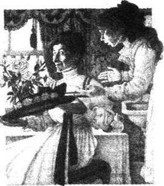
“可是我以为今年我们这些孩子会负责所有的事情呢。”劳拉说。萨迪已经走开了，花店的人还在外面。她用胳膊搂着母亲的脖子，很轻、很轻地咬了咬她的耳朵。
“好孩子，你不会喜欢一板一眼的母亲的，对不对？别这样，有人来了。”
送花人又搬进来一箱百合花。
“请放到这里，搁在门的哪边都行。”谢里登夫人说，“劳拉，你不觉得花放在那里最漂亮吗？”
“噢，是的，妈妈。”
在起居室里，梅格、乔斯和小汉斯正在摆放家具。
“我们得把钢琴摆在这儿，把其余的东西都搬走，只留下椅子。你们觉得怎么样？”
“很好。”
“汉斯，把这些桌子搬到吸烟室去，再把地毯扫扫，还有——等一下，汉斯。”
乔斯喜欢对仆人们发号施令，而他们也乐于听从。她使他们感觉到所有人都在一场精彩的戏中演出。
“叫妈妈和劳拉小姐赶快过来。”
“好的，乔斯小姐。”
她又转身对梅格说：“我想试试钢琴的声音，万一下午我得弹琴呢。”
砰！哒—哒—哒，嘀—哒！随着钢琴的节奏声，乔斯的脸色也跟着改变了。当妈妈和劳拉进来时，她用那双充满痛苦的眼睛看着她们。“生活多么令人厌倦。”她唱道。
“有眼泪——有悲叹。
爱情反复易变，
分手——在顷刻间！”
但是唱到“分手”二字时，琴声虽愈加悲绝，但是乔斯的脸上却绽开了灿烂的、全然不为之所动的笑容。
“我今天唱得不错吧，妈妈？”乔斯开心地问道，接着又唱了起来。
“生活多么令人厌倦，
希望化成泡影。
一场梦……”
这时萨迪进来了。
“什么事，萨迪？”
“对不起，乔斯小姐。厨娘说她需要三明治标签。”
“是三明治标签吗，萨迪？”谢里登夫人含混地问道。从她的脸上，孩子们一眼看出她并没预备好。“让我想想。告诉厨娘，10分钟后我会拿给她的。”
萨迪离开了。
“好了，劳拉，”妈妈急匆匆地说，“跟我到吸烟室去。我把名字都写在信封背面了，你赶快帮我抄到标签上。梅格，上楼去，梳好头发。乔斯，马上去穿好衣服。孩子们，快点儿，不然我会向你们的爸爸告状的。还有，乔斯——要是你去厨房的话，你要让厨娘沉住气，好吗？我今天早上真有些怕她。”
谢里登夫人找到信封，告诉劳拉要在三明治标签上写些什么内容。
“鸡肉和香蕉。写完了吗？”
“写完了。”
“鸡蛋和——”谢里登夫人把信封举得远远地，“鱼肉。上面写的是鱼肉吧？”
“是鱼肉，亲爱的妈妈。”劳拉从母亲身后看了看，回答说。
“鱼肉。听起来真难吃。鸡蛋和鱼肉。”
终于写完了标签。劳拉把这些标签送到厨房。乔斯正在那儿跟厨娘交谈。厨娘看起来非常冷静，情绪极高。
“我还从来没见过这么精致的三明治，”乔斯极感兴趣地说，“有多少种？”
“有15种，乔斯小姐。”
“哇，祝贺你，厨娘。”
厨娘高兴地笑了。
“戈德伯糕点店的人来了。”萨迪说。她的意思是戈德伯糕点店的人送巧克力蛋糕来了。戈德伯的巧克力蛋糕远近闻名。如果买得到戈德伯的蛋糕，没有谁会自己动手做的。
“把蛋糕拿进来放在桌上，我的姑娘。”厨娘吩咐道。
萨迪把蛋糕拿进来后又出去了。劳拉和乔斯年龄都不小了，她们当然不至于贪嘴。可是这些蛋糕看起来挺诱人的，实在是非常诱人。厨娘开始往盘子里摆放蛋糕。
“这些蛋糕总能让我们想起小时候参加的每一次宴会，不是吗？”劳拉说。
“是这样的。”乔斯说。她从来不喜欢想过去的事情，“蛋糕看起来确实好吃。”
“孩子们，吃点儿吧。”厨娘用令人舒服的语调说，“你们的妈妈不会知道的。”
噢，不可能吃得下去的。刚刚吃完早饭怎能再吃得下巧克力蛋糕？简直无法想象。尽管如此，两分钟后，只见乔斯和劳拉都在舔她们手指头上的巧克力。
“我们去花园吧，”劳拉提议道，“我想看看工人们帐篷搭得怎么样了。他们都是些非常好的人。”
但是门被厨娘、萨迪、戈德伯糕点店的伙计和汉斯给堵住了。
准是出了什么事。
只见厨娘口中发出轻轻的“啧—喷—啧”声，萨迪用手捂着嘴巴，汉斯极力想弄明白是怎么回事，搞得自己的眼睛都紧闭起来了。只有戈德伯糕点店的伙计显出很得意的样子。这可是他的独家报导。
“出了什么事？到底怎么了？”
“刚发生了场可怕的事故，”厨娘说。“死了个人。”
“死了个人！在哪儿？怎么死的？什么时候？”
可是戈德伯糕点店的伙计想要讲述事故的经过。
“小姐，您知道您家这条路边上的那些小农舍吧？”她当然知道。“嗯，那儿住着个小伙子，叫斯科特，他有辆马车。今天早上在镇上，他的马受了惊吓，马车翻了，把他给甩了出去。他摔在路上，后脑勺着地，死了。”
“死了！”劳拉盯着戈德伯糕点店的伙计。
“等他们过去救他的时候就已经死了。”那伙计兴致勃勃地说，“我来的时候，他们正往家里抬尸体呢。”他接着说道，“他撇下了老婆和五个小东西。”
“乔斯，到这儿来！”劳拉拉着姐姐的手，拽着她走过厨房，穿过房门。
“乔斯，”她说，“我们怎么才能终止这一切呢？”
“终止这一切，劳拉！”乔斯叫道，“什么意思？”
“当然是停办园会了。”为什么乔斯装作不明白呢？
可是乔斯显得更吃惊了。“停办园会？亲爱的劳拉，不要感情用事了。我们当然不能停办园会，也没人希望我们这么做，别犯傻了。”
“可我们总不能眼见大门外死了人，还照样举办园会吧？”
的确有点儿傻，因为谢里登家的房子在山上，而这些农舍就建在山脚下，中间隔着条宽马路。它们确实还是靠得太近了，它们是不配与谢里登这样的大户人家为邻的。
这是些难看、窄小、低矮的棕色农舍。园子里只有垃圾，就连烟囱里冒出的烟都显得贫穷、寒酸。住在这里的人靠替别人洗衣服、修鞋子或是扫烟囱生活，他们都生养了过多的孩子。
谢里登家的孩子小的时候是不准走近这些农舍的，以防他们听到粗话或是染上可怕的疾病。但他们长大后，劳拉和劳里有时会走过那里。那里肮脏，令人生厌，可是劳拉和劳里认为他们应该体验生活的各个方面。他们必须什么地方都走走，什么东西都见见。
“想想那个可怜的女人听到乐队演奏时会是怎样的感受吧。”劳拉说。
“哦，劳拉！”乔斯真的开始生气了，“如果一有人出事，你就要停止乐队演奏，那你也活得太辛苦了。我也和你一样对这件事感到难过。”她的目光变得冷峻起来。她就像小时候打架时那样看着妹妹。“停办园会是不能使醉酒的工人起死回生的。”她低声说。
“醉酒！谁说他喝醉了？”劳拉生气地说。就像小时候那样，她说：“我告诉妈妈去。”
“请吧，亲爱的。”乔斯甜甜地说。
“妈妈，我能进来吗？”劳拉站在母亲的房门口，一只手扶着门，问道。
“当然可以，孩子。怎么了，出了什么事？你看起来面红耳赤的。”谢里登夫人从镜子前转过身来。她正在试一顶新帽子。
“妈妈，有个人死了。”劳拉说。
“不是在我们家花园吧？”母亲问。
“不，不是的！”
“哦，你吓死我了！”谢里登夫人摘下那顶大帽子，冲着女儿微笑。
“听着，妈妈。”劳拉说。她上气不接下气地讲述了那个可怕的故事。“我们当然不能举行园会了，对不对？”她说，“乐队，还有那么多人都要来。他们准会听到的，妈妈；他们差不多也算得上是邻居呀！”
令劳拉大为吃惊的是，母亲的反应竟和乔斯的完全一样。更令人难以忍受的是，母亲好像觉得她很好笑，不肯把她的话当回事。
“但是亲爱的孩子，理智些。我们只不过是偶然听说这个事故罢了。要是有人正常地死去呢——我真不知道那些人在那些肮脏窄小的破屋里是怎么活下去的——我们还会举行园会，对不对？”
劳拉不得不对此表示赞同，但是她又觉得这样说是不对的。
“妈妈，那我们这样岂不是太无情了吗？”她问母亲。
“亲爱的！”谢里登夫人手里拿着帽子，站起身，劳拉还没来得及阻止，帽子已经戴在了劳拉的头上。“孩子，”她说，“帽子给你了，我戴太年轻了。你戴上真漂亮，看看吧！”说着她举起一面镜子。
“可是，妈妈。”劳拉又说开了。她不肯照镜子，把脸转向了一边。
这下谢里登夫人也像乔斯刚才那样动了怒。
“你真是在犯傻，劳拉，”她冷冰冰地说，“那样的人并不会指望我们取消园会的。你这样毁了其他人今天的兴致，也太缺乏考虑了。”
“我不明白。”劳拉说着，飞快地走出母亲的房间，回到自己的卧室。她偶然之间第一眼看到的是镜子里一位可爱的姑娘，头戴一顶漂亮的黑色和金色相间的帽子。她从来没想过自己竟会这般俏丽。
妈妈是对的吗？她暗自思考。现在她真希望母亲是对的。我是不是在犯傻？也许是的。有那么一会儿她又想到了那个可怜的女人和那些小孩子，还有那具被抬进屋的尸体，但是现在这一切就像是报纸上登载的图片一样，显得模糊而虚幻。等园会结束以后再去想它吧，她打定了主意。这看起来是个好主意……
1点半用过午餐。两点半时，一切准备就绪，园会可以开始了。乐队已经到了，他们坐在网球场的一角。
“天啊！”基蒂·梅特兰尖叫了一声，“他们穿着小红夹克实在太像猴子了！”
劳里下班了。劳拉一看到他，就又想起了那场事故。她想告诉他。如果劳里和其他人的看法一致，那就说明他们是对的。于是她跟着他进了大厅。
“劳里！”
“嗨！”劳里正在上楼梯。但当他转身看到劳拉的时候，他停了下来，盯着她。“天啊，劳拉！你看上去太漂亮了！”劳里说道，“那顶帽子简直太棒了！”
劳拉轻声回答道：“是吗？”并且冲他微微一笑。她没有告诉他那场事故的事。
很快客人们陆陆续续都到了。乐队开始演奏；雇来的侍者在房子和帐篷之间奔忙。到处可以看到成双成对的人在漫步、赏花、寒暄，在草坪上走动。他们就像是快乐的小鸟儿，在飞行的途中来到谢里登家的花园度过这个下午，他们要飞到——飞到哪儿去呢？啊，和这些快乐的人在一起，同他们握手、亲吻、微笑是多么惬意的事啊。
“亲爱的劳拉，你真好看！”
“多美的帽子呀，孩子！”
“劳拉，你看起来真像个西班牙女郎。我从没见你像今天这么楚楚动人。”
劳拉兴高采烈，柔声回答：“您用茶了吗？要不要来份儿冰淇淋？咖啡白兰地冰淇淋味道真的很特别。”她跑到父亲身边恳求道：“亲爱的爸爸，能让乐队也喝点儿什么吗？”
这个美妙的下午就像是花儿一样，慢慢地绽开，慢慢地转向太阳，又慢慢地闭合。
“最开心的园会……”
“最大的成功……”
“最美味的……”
劳拉帮母亲送客人走。她们并排站着，直到宾客散尽。
“结束了，结束了。”谢里登夫人说，“劳拉，去把其他人都找来，我们去喝点儿新鲜咖啡。我累坏了。不错，园会办得非常成功。可是，哦，园会，园会！为什么你们这些孩子总是一个劲儿地要办园会呢！”大家在空无一人的帐篷里坐了下来。
“吃块三明治吧，亲爱的爸爸。标签是我写的。”
“谢谢。”谢里登先生只咬了一口，三明治就没了。他又拿起一块。“你们听说今天发生的惨祸了吗？”他说。
“亲爱的，”谢里登夫人扬扬手说，“我们听说了。这差点儿毁了我们的园会呢。劳拉想取消所有这一切。”
“哦，妈妈！”劳拉不想被大家取笑。
“这件事太可怕了，”谢里登先生说，“那人还成家了，就住在那边的一座农舍里。听说撇下了妻子和一大群孩子。”
大家都陷入了长久的沉默。谢里登夫人摆弄着茶杯。说真的，父亲说这些真让人沮丧……
突然间，谢里登夫人抬起头。他们还剩有好些园会上没吃的三明治和蛋糕。她有了一个聪明的主意。
“我有个办法，”她说，“我们送些点心给那个可怜人吧。我们装上一篮子，那些孩子会喜欢吃的。我敢肯定邻居们都会去看他们。有一些额外的现成食物对她来说是非常有用的。劳拉！帮我从厨房的柜橱里把那个大篮子拿来。”
“可是妈妈，您真的认为这是个好主意吗？”劳拉问。
真奇怪，她好像又跟大家不一样了。拿这些宴会上剩下的东西，那个可怜的女人真的会喜欢吗？
“当然了！你今天究竟是怎么回事？大约一个小时前你还坚持要我们有同情心。”
唉，好吧！劳拉跑去拿篮子。母亲把食物堆放在篮子里。
“你自己送去吧，亲爱的，”她说，“现在就赶快去。不，等一下，带上几枝百合花吧。对那种人来说，这些百合花是非常特别的东西。”
“拿花会弄脏她的衣服的。”乔斯说。
确实如此。提醒得真是及时。“那就只拎篮子吧。还有，劳拉！”——她妈妈跟出了帐篷——“不管发生什么事，不要……”
“什么，妈妈？”
算了，最好还是不要往孩子的头脑中灌输这些东西了。“没什么！快走吧。”
劳拉关上花园大门走出去的时候，天色已开始暗了下来。她脚下的路面泛着白光。深深的阴影笼罩着那些小农舍。白天的兴奋过后，现在是多么安静呀。她要到停放着死人的农舍去，她真有点儿不相信。为什么呢？她停了一会儿，满脑子里装的好像都是园会上的亲吻、说话声、笑声，还有草坪的清新味道，再也容不下别的了。多么奇怪！她仰头看着昏暗的天空，脑海里只有一个念头：“是的，这是一次最成功的园会。”
她穿过宽宽的马路，走进一片农舍。这里的男男女女都行色匆匆，孩子们在狭窄的街道上玩耍。破旧的小房子里不断传来嘈杂的声音。有的房子里亮着灯，能看见人影在窗前晃动。
劳拉低下头匆匆赶路。此刻她真希望刚才该穿件外套。人们都在盯着她的礼服和她那顶黑色和金色相间的帽子——哦，要是换顶别的帽子该多好！到这儿来真是个错误；从一开始她就知道这是个错误。但到了这个时候她还能回去吗？
不行，太晚了。这就到那户人家了，肯定没错。人们站在屋外，门边的椅子上坐着一位年纪很大的老妇人，在四处张望。她的脚下垫着张报纸。劳拉走近时，说话声停了下来。他们退到一边，给她让出一条路来。她觉得他们好像都在等她，知道她要来似的。
劳拉觉得很害羞，也很害怕。“这是斯科特夫人家吗？”她问一位妇人。那个女人怪怪地一笑，回答说：“是的，我的姑娘。”
噢，她多想离开这里呀！当她走上窄小的门径敲门时，她真的大声说了出来：“上帝，帮帮我！”她打定主意：放下篮子就走，甚至不等他们把篮子腾空。
这时门开了。出来的是一个穿黑衣服的矮个子女人。
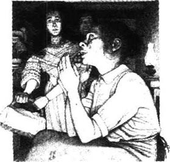
劳拉问：“您是斯科特夫人吗？”但让她感到害怕的是这个女人答道：“请进来，小姐。”说着，她就给关在过道里了。
“不，”劳拉说，“我不想进来，我只是想把这个篮子留下，我母亲送给——”
这个站在黑暗过道里的矮个子女人好像没有听到她说话。“请这边走，小姐，”她讨好地说，劳拉只得跟着。
她发现自己走进了一间低矮的小厨房，厨房里点着一盏冒烟的灯。一个女人坐在炉火旁。
“埃姆，”这个带她进来的小个子女人说道，“埃姆！是位年轻的小姐。”她回头对劳拉说：“我是她的妹妹，小姐，”她说，“您不会怪她失礼吧？”
“噢，当然不会！”劳拉说，“请，请别打扰她。我只想留下——”
但就在这时，坐在炉火旁的女人把头转了过来。她的脸看起来可怕极了——眼睛红红的，泪水涟涟。她好像不明白劳拉为什么会在这儿。这究竟是怎么回事？这个陌生人为什么会提着篮子站在她家的厨房里呢？她那可怜的红眼睛里又涌出了更多的泪水。
“好吧，亲爱的，”她妹妹说，“我会向这位年轻小姐道谢的。”她冲劳拉讨好地笑了笑。
劳拉一心想赶快出去离开这儿。她走到过道里，有扇门开着，她便走进了那间卧室，死人就停放在这里。
“您想看看他吗？”埃姆的妹妹说，“不要害怕，姑娘。他看上去好极了，连个疤痕都没有。过来呀，亲爱的。”
劳拉走到床边。
一个年轻人躺在那里，睡着了——睡得那么沉，完全置身于远离她们的另一个世界。那么遥远，那么静谧。他正在做梦，永远不要再把他唤醒。他紧闭着双眼，深深地沉醉在梦里。园会、篮子、礼服，这些对于他来说还有什么意义呢？所有这一切都离他很遥远了。他很棒，很美。当人们在喧闹欢笑，乐队在高奏乐曲的时候，这美妙的事情降临到了这所农舍。幸福……幸福……沉睡中的那张脸仿佛在说：一切都很好。就应该是这样。我可以长眠了。
可那时候，那还是让人想哭，劳拉不能不对他说点儿什么就离开那间屋子。她突然间像个小姑娘似的大哭起来。
“原谅我的帽子。”她说。
这次没等埃姆的妹妹领路，她就走过那些人的身边，自己找到路出了房子。在街道拐角处她遇见了劳里。
他从暗处走出来：“是你吗，劳拉？”
“是我。”
“妈妈着急了。没事吧？”
“没事。噢，劳里！”她向他跑去，挽起他的胳膊。
“我说，你不是在哭吧，是吗？”她的哥哥问。
劳拉摇了摇头。她的确在哭。
劳里伸出手搂住她的肩膀。“别哭，”他用温暖亲切的声音说，“很吓人吧？”
“不，”劳拉说，“一切都很好。可是，劳里——”她停了下来，看着她的哥哥。
“难道人生，”她开始说，“难道人生……”可人生究竟是什么，她也无法解释。不过没关系，她知道劳里懂她的意思。
“可不就是吗，亲爱的？”劳里说。
Pictures
Pictures
Eight o'clock in the morning. Miss Ada Moss lay in her narrow bed, staring up at the ceiling. Her room, which was right at the top of a tall house in Bloomsbury, smelled of wet clothes and face powder and the bag of fried potatoes she had brought in for supper the night before.
'Oh dear,' thought Miss Moss. 'I am cold. I wonder why I always wake up so cold in the mornings now. My knees and feet and my back—especially my back—are like ice. And I was always so warm in the old days. It isn't because I'm thin. I'm just as well-covered as I always was. No, it's because I don't have a good hot dinner in the evenings.'
She imagined a row of good hot dinners passing across the ceiling, each with a bottle of good strong beer.
'I'd like to get up now,' she thought, 'and have a big sensible breakfast.' Pictures of big sensible breakfasts followed the good hot dinners across the ceiling. Miss Moss pulled the blanket up over her head and closed her eyes. Suddenly, her landlady burst into the room.
'There's a letter for you, Miss Moss.'
'Oh,' said Miss Moss, in a voice which was much too friendly, 'thank you very much, Mrs Pine. It's very good of you to bring me my letters.'
'Oh, it's nothing,' said the landlady. 'I hope it's the letter that you've been waiting for.'
'Yes,' said Miss Moss brightly, 'yes, perhaps it is. I wouldn't be surprised.'
'Well, I'd be very surprised,' said the landlady. 'That's the truth. And can you open it right now, please? A lot of landladies wouldn't even ask—they'd just open it themselves. Things can't go on like this, Miss Moss, indeed they can't. First you tell me you've got the money to pay your rent, then you say you haven't, then there's a letter lost in the post or a theatre manager who's gone to Brighton but will be coming back soon—I'm sick and tired of it all, and I've had enough. At a time like this, too, with the price of everything sky-high and my poor boy away at the war in France! If you can't pay your rent, there's plenty of other people who would give me good money for a room like this. As my sister Eliza was saying to me only yesterday, Miss Moss, I've been much too soft-hearted with you!'
Miss Moss did not seem to be listening to this. She tore open the letter. It was from a film company.
'No suitable parts for a lady of your experience at present,' she read.
She stared at it for a long time before she spoke to her landlady.
'Well, Mrs Pine,' she said. 'I think you'll be sorry for what you've just said. This is from a theatre manager who wants to see me immediately about a part in a new musical show.'
But the landlady was too quick for her. She tore the letter out of Miss Moss's hand.
'Oh is it, is it indeed!' she cried.
'Give me back that letter. Give it back to me at once, you bad, wicked woman,' cried Miss Moss. She could not get out of bed because she had a hole in her nightdress.
'Well, Miss Moss,' said the landlady, 'if I don't get my money by eight o'clock tonight, you can get out of my house, my lady.'
The door banged and Miss Moss was alone. She threw back the bedclothes, and sat on the side of the bed, shaking with anger and staring at her fat white legs. 'The old cat,' she said, 'the rotten old cat!' Then she began to pull on her clothes.
'Oh, I wish I could pay that woman! Then I'd tell her what I think of her!' She suddenly saw her face in the mirror, and gave herself a little smile.
'Well, old girl,' she said, 'you're in trouble this time, and no mistake.' But the person in the mirror stopped smiling.
'You silly thing,' said Miss Moss. 'It's no good crying. You'll make your nose all red. Come on! Get dressed, and go out and find a job. That's what you've got to do.'
She picked up her bag and shook it. A few small coins fell out.
'I'll have a nice cup of tea at an ABC café before I go anywhere,' she decided. 'I've got enough money for that.'
Ten minutes later, a large lady in a blue dress and a black hat covered in purple flowers looked at herself in the mirror, and sang:
'Sweetheart, remember that hope never dies
And it al—ways is dark—est before sunrise.'
But the person in the mirror wouldn't smile at her, and Miss Moss went out.
When she came to the ABC café, the door was open. A man was carrying boxes of bread in, and two waitresses were combing their hair and talking.
'My young man came home from France last night,' one of the girls sang happily.
'Oh, I say! How topping for you!' cried the other.
'Yes, wasn't it! He brought me a sweet little brooch. Look, it's got "Dieppe" written on it.'
'Oh, I say! How topping for you!'
The man with the boxes of bread came in again, almost knocking Miss Moss over.
'Can I have a cup of tea, please?' she asked.
But the waitress went on combing her hair. 'Oh,' she sang, 'we're not open yet.' She turned to the other girl. 'Are we, dear?'
'Oh, no,' said the other waitress.
Miss Moss went out. 'I'll go to Charing Cross,' she decided. 'That's what I'll do. And I'll have coffee, not tea. Coffee's more filling. Those girls! Her young man came home; he brought her a brooch...' She began to cross the road.
'Look out, Fatty!' shouted a taxi-driver. Miss Moss pretended not to hear.
'No, I won't go to Charing Cross,' she decided. 'I'll go straight to Kig and Kadgit. They open at nine. If I get there early, Mr Kadgit may have something for me... "I'm so glad to see you, Miss Moss. I've just heard from a manager who wants a lady... exactly the right part for you... three pounds a week... go and see him immediately. It's lucky you came so early."'
But there was nobody at Kig and Kadgit except an old woman washing the floor in the passage.
'Nobody here yet, Miss,' the old woman said.
'Oh, isn't Mr Kadgit here?' said Miss Moss. 'I'll sit down and wait for him, if I may.'
'You can't wait in the waiting-room, Miss. I haven't cleaned it yet. Mr Kadgit never comes in before eleven-thirty on a Saturday. Sometimes he doesn't come in at all.'
'How silly of me,' said Miss Moss. 'I forgot it was Saturday.'
'Mind your feet, please, Miss,' said the old woman. And Miss Moss was out in the street again.
The nice thing about Beit and Bithem was—it was always crowded. You walked into the waiting-room and you met everybody you knew. The early ones sat on chairs, and the later ones sat on the early ones' knees, while the men stood around the walls, talking and joking with the ladies.
'Hello,' said Miss Moss, in her friendly way. 'Here we are again!'
And young Mr Clayton did a couple of dance-steps and sang: 'Waiting for the Robert E. Lee!'
'Mr Bithem here yet?' asked Miss Moss, powdering her nose.
'Oh, yes, dear!' cried all the girls together. 'He's been here for ages. We've been waiting for more than an hour!'
'Oh dear,' said Miss Moss. 'Any work for us, do you think?'
'Oh, a few jobs in Africa,' said young Mr Clayton. 'A hundred and fifty a week for two years, you know.'
'Oh!' cried the girls. 'Isn't he a scream? Isn't he too funny?'
A dark girl with a sad face touched Miss Moss on the arm. 'I just missed a lovely job yesterday,' she said. 'Six weeks on tour, and then the West End. The manager said I would have got it if I'd been a bit stronger-looking. He said the part was made for me—only I'm too thin.' She stared at Miss Moss, and the dirty, dark red rose on her hat looked as sad and disappointed as she was.
'Oh, dear, that was awfully bad luck,' Miss Moss said, trying hard not to sound too interested. 'What was the show called, may I ask?'
But the sad, dark girl understood what Miss Moss wanted, and a mean look came into her heavy eyes.
'Oh, it wasn't a part for you, my dear,' she said. 'He wanted someone young, you know, a dark Spanish type like me. I was too thin, that was the only problem.'
The door opened and Mr Bithem appeared. He kept one hand on the door, and held up the other for silence.
'Look here, ladies' —and here he paused and gave them his famous smile—'and all you boys.' They all laughed loudly at that. 'I've got nothing for you this morning. Come back on.Monday. I'm expecting several phone calls on Monday.'
Miss Moss pushed desperately through the crowd. 'Mr Bithem, I wonder if you've had any news from...'
'Now, let me see,' said Mr Bithem slowly, staring at her. He had seen Miss Moss four times a week for—how many weeks was it? 'Now, who are you?'
'Miss Ada Moss.'
'Oh yes, yes; of course, my dear. Not yet, my dear. Now I had a call for twenty-eight ladies today, but they had to be young and able to kick their legs up a bit. Come back the week after next—there'll be nothing before that.'
He gave her a big smile, all for herself, and touched her lightly on her fat arm before disappearing back into his office.
At the North-East Film Company they were waiting on the stairs. Miss Moss stood and waited next to a fair little baby-girl of about thirty, in a white hat with fruit all round it.
'What a crowd!' Miss Moss said. 'Is something special happening today?'
'Didn't you know, dear?' said the baby, opening her huge, pale eyes. 'There was a call at nine-thirty for pretty girls. We've all been waiting for hours. Have you worked for this company before?'
'No, I don't think I have,' said Miss Moss.
'They're a lovely company,' said the baby. 'A friend of mine has a friend who gets thirty pounds a day... Have you been in many films?'
'Well, I'm not really an actress,' said Miss Moss. 'I'm a trained singer. But things have been so bad lately that I've been doing a little acting.'
'It's like that, isn't it, dear?' said the baby.
'I had an excellent education at the College of Music,' said Miss Moss. 'I've often sung in West End shows. But I thought, for a change...'
'Yes, it's like that, isn't it, dear?' said the baby.
At that moment a beautiful secretary appeared at the top of the stairs.
'Are you all waiting for news from the North-East Film Company?'
'Yes!' they all cried.
'Well, it's been cancelled. I've just had a phone call.'
'And I really needed that money,' a disappointed voice said.
The secretary had to laugh. 'Oh, there was no money in it,' she said. 'The North-East never pay their crowd people.'
There was only a little round window at the Bitter Orange Company. No waiting-room, nobody at all except a girl who came to the window and said, 'Well?'
'Can I see the manager, please?' Miss Moss said pleasantly.
The girl closed her eyes for a moment. Miss Moss smiled at her. The girl did not smile back. She frowned. She seemed to smell something unpleasant. Suddenly, she picked up a piece of paper and pushed it through the window at Miss Moss.
'Fill in this form!' she said, and banged the window shut.
'Can you ride a horse—drive a car—dive—fly a plane—shoot?' Miss Moss read. She walked along the street, asking herself those questions. A rough, cold wind was blowing. It pulled at her clothes, hit her in the back and then laughed cruelly in her face. It knew that she could not answer the questions.
In the Square Garden, she found a rubbish basket, and dropped the form in it. Then she sat down on a bench and took out a little mirror to powder her nose. But the person in the mirror made an ugly face at her, and Miss Moss had to cry. She cried for a long time; it cheered her up wonderfully.
'Well, that's over,' she said. 'It's nice to be able to sit on this bench and rest my feet for a bit. And my nose will soon stop being red. Look at the birds! How close they come. I suppose someone feeds them. No, I've got nothing for you...' She looked past them. What was that big building—the Café de Madrid? Oh, look at that poor child! Down he went with such a crash. Never mind! Up again!... If I don't get my money by eight o'clock tonight... Café de Madrid. 'I could just go in and sit there and have a coffee, that's all,' thought Miss Moss. 'Lots of artists go there, too. I might be lucky... A dark handsome gentleman comes in with a friend, and sits at my table, perhaps... "No, Julian, I've searched London for a singer who can take the part, and I just can't find the right person. You see, the music is difficult; have a look at it."' And Miss Moss heard herself saying: 'Excuse me, but I happen to be a singer, and I have sung that part many times... "Extraordinary! Come back to my studio and I'll try your voice now. "... Ten pounds a week... Why should I feel frightened? It's not fear. Why shouldn't I go to the Café de Madrid? I'm an honest woman—I'm a professional singer. And I'm only trembling because I've had nothing to eat today... "You can get out of my house, my lady." ... Very well, Mrs Pine. Café de Madrid. They have music there in the evenings... "Why don't they begin?" The singer has not arrived... "Excuse me, I happen to be a singer; I have sung that music many times."'
It was almost dark in the café. Men, tall potted plants, red seats, white stone tables, waiters in black jackets. Miss Moss walked past them all and sat down.
Almost immediately, a very large gentleman wearing a very small hat came and sat opposite her.
'Good evening!' he said.
Miss Moss said, in her cheerful way: 'Good evening!'
'Fine evening,' said the large gentleman.
'Yes, very fine. Lovely, isn't it?' she said.
He waved a finger at a waiter. 'Bring me a large whisky.' Then he turned to Miss Moss. 'What's yours?'
'Well, I think I'll take a brandy, thank you very much.'
Five minutes later he turned to Miss Moss and blew a cloud of cigar smoke in her face.
'Like the hat,' he said, looking at the purple flowers.
Miss Moss blushed a deep pink and her heart began to beat very fast.
'I've always worn a lot of purple,' she said.
The large gentleman looked at her for a long time, tap ping with his fingers on the table.
'I like a woman with a bit of meat on her bones,' he said.
Miss Moss, to her surprise, laughed quite loudly.
Five minutes later the large gentleman stood up.
'Well, am I coming to your place, or are you coming to mine?' he asked.
'I'll come with you, if you don't mind,' said Miss Moss, and she followed him out of the café.
be sick and tired of have had enough of sb./sth./ doing sth.; be impatient or bored with sb./sth./ doing sth. 对某人（某事或做某事）不耐烦或感到厌烦。
part n. role played by an actor in a play, film, etc. （戏剧、电影等中的）人物，角色。
cat n. malicious woman. 狠毒的女人。
rotten adj. morally corrupt. 道德败坏的；腐化的。
in trouble in a situation that involves danger, punishment, pain, worry, etc. 在危险、受罚、痛苦、忧虑等的处境中。
purple adj. having the colour of red and blue mixed together. 紫色的。
I say. used to express surprise, shock, etc. or (unstressed) to start a conversation. 用以表示惊讶、震惊等；（不重读时）用以引起话题。
knock sb./sth. over upset sb./sth. by striking him/it. 撞倒。
hear from receive news from (sb.), usu. by letter. 得到（某人的）消息（常指接到某人的信）。
scream n. person or thing that causes laughter. 令人大笑的人或事物。
tour n. official series of visits for the purpose of playing matches, giving performances, etc. 巡回比赛、演出等。
the West End the area of London that includes most theatres, fashionable and expensive shops, etc. 伦敦西区（伦敦多数剧院、时髦及豪华商店等的所在地）。
heavy adj. marked by or exhibiting weariness. 昏昏欲睡的，显得疲倦的。
next to in or into a position immediately to one side of (sb./sth.); beside. 在……的旁边。
fill in complete, supply information as on a form. 填写。
crash n. fall or strike (sth.) suddenly and noisily. 突然倒下；撞击（某物）发出声响。
professional adj. showing or using the qualities of training of a member of a profession. 专业的。
电影
电影
早上8点钟。埃达·莫斯小姐躺在她窄窄的床上，两眼直盯着天花板。她的房间正好位于布卢姆斯伯里区一幢高楼的最顶层，房间里混杂着湿衣服、香粉和炸土豆的味道，那包炸土豆是她昨晚带回来当晚饭的。
“噢，天啊，”莫斯小姐思忖着，“我觉得好冷。我真不知道为什么这些日子早上醒来的时候，总觉得那么冷。我的膝盖、脚和背——尤其是背——冷得像冰块一样。我从前可总是暖暖和和的。这并不是因为我瘦的缘故，而且我盖的被子也和以前一样多。不，这准是因为我晚上总吃不上可口的热乎乎的晚餐。”
她想像着一盘盘可口的热乎乎的晚餐排着队从天花板上穿过，每样晚餐还配有一瓶上等的烈性啤酒。
“我想现在起床，”她想，“去吃一顿丰盛的早餐。”天花板上那可口的热乎乎的晚餐上过去之后，随之而来的是丰盛的早餐。莫斯小姐拉起毯子蒙在头上，闭上了眼睛。突然，房东太太闯了进来。
“有你一封信，莫斯小姐。”
“噢，”莫斯小姐用一种过于友好的声调说，“太感谢您了，派因太太。您帮我拿信，真是太好了。”
“噢，这没什么，”房东太太说，“我希望这是你一直在等的那封信。”
“对，”莫斯小姐欢快地说，“对，可能是的。我不觉得意外。”
“嗯，可我觉得很意外，”房东太太说，“我说的是真话。能不能请你现在就把信拆开？许多房东甚至问都不问——就自己拆开看了。不能再这样拖下去了，莫斯小姐，确实不能再这样了。你先是说你有钱付房租了，后来又说你没钱，然后又是信被邮局搞丢了，再有就是剧院经理去布赖顿了，但很快就能回来——我对这些都听腻了，简直受够了。眼下这年头，所有东西的价钱都高上了天，我那可怜的孩子又远在法国打仗！要是你付不起房租，有的是人愿意出高价租这间房子。我姐姐伊莱扎昨天还跟我说来着。莫斯小姐，我对你可真够仁慈的了！”
莫斯小姐好像没听到这些。她把信拆开。信是一家电影公司寄来的。
“我们现在没有适合您这种经历的女士扮演的角色。”她看着信。
她盯着信看了很久才和房东太太说话。
“嗯，派因太太，”她说，“我想你会为你刚才说过的话后悔的。这封信是一位剧院经理写来的，他想马上见我，跟我谈谈有关一部新音乐剧中的角色的事。”
但是房东太太手疾眼快，从莫斯小姐手里一把扯过信来。
“噢，是吗，真是这样吗！”她叫道。
“把信还给我，马上把信还给我，你这个不要脸的坏女人。”莫斯小姐叫了起来。她下不了床，因为她的睡衣上破了个洞。
“好吧，莫斯小姐，”房东太太说，“到今晚8点钟时，要是我还拿不到钱的话，你就从我的房子里滚出去，我的小姐。”
门“砰”地一声关上了，房间里只剩下莫斯小姐一人。她一把掀开被子，坐在床边，气得浑身发抖，两眼盯着自己白胖的腿。“老恶妇，”她说，“不要脸的老恶妇！”然后她开始穿衣服。
“噢，要是我有钱付给那个女人该多好！然后我就告诉她她在我心目中是个什么样子！”她突然在镜子里看到自己的脸，然后冲着自己微微一笑。
“嗯，老姑娘，”她说，“这次你可有麻烦了，绝对没错。”镜子中的那个人已经不再笑了。
“你这个傻东西，”莫斯小姐说，“哭有什么用，只会把你的鼻子弄得通红。来吧！穿好衣服，出去找工作。这才是你应该做的。”
她拿起背包晃了晃，从包里掉出了几枚小硬币。
“不管去哪儿，我得先到ABC咖啡馆好好喝上一杯茶，”她打定主意，“我的钱足够喝茶了。”
十分钟后，只见一位身穿蓝裙子，头戴黑底紫花帽子的胖女人边照镜子边唱歌：
“希望永远不会破灭哟
我的爱人你要记在心
太阳升起前哟
总是最黑暗的时分。”
可是镜子里的人不再冲她微笑了。莫斯小姐走了出去。
当她走到ABC咖啡馆的时候，店门已经开了。一个男人正在往咖啡馆里搬一箱箱的面包，两个女招待边梳头边聊天。
“我男人昨晚从法国回来了。”其中一个女招待高兴地说道。
“噢，真的吗！瞧把你高兴的！”另一个大声说。
“是啊，谁说不是呢！他给我带了个漂亮的小胸针。你看，上面还写着‘迪耶普’三个字呢。”
“噢，真的吗！真把你美死了！”
那个搬面包箱的男人又进来了，差点儿把莫斯小姐撞倒。
“请给我来杯茶好吗？”她问道。
但那个女招待继续梳着头。“哦，”她唱歌似地说，“我们还没开门呢。”她转身对另一个女招待说：“开门了吗，亲爱的？”
“哦，还没开呢。”另一个女招待说。
莫斯小姐走了出去。“我去‘查理十字街’吧，”她拿定主意，“就到那儿去。我要喝咖啡，不喝茶了。咖啡更能填饱肚子。这些姑娘！她男人回家了；还给她带回一个胸针……”她准备过马路。
“当心，肥婆！”一个出租车司机大声叫道。莫斯小姐装作没听见。
“不，我不去‘查理十字街’了，”她又有了一个决定，“我直接去‘基格和卡德吉特’吧。那儿9点钟开门。要是我去得早，卡德吉特先生可能会有消息告诉我……‘莫斯小姐，很高兴见到你。我刚从一位经理那里听说，他需要一位女士……这个角色挺适合你的……一周三英镑……赶快去找他吧。你来得早，算你运气。’”
但在“基格和卡德吉特”里，除了一位在过道擦地板的老妇人外，一个人都没有。
“这儿还没来人呢，小姐。”老妇人说。
“哦，卡德吉特先生不在吗？”莫斯小姐问，“如果可以的话，我坐下来等他。”
“你不能在等候室等，小姐。那儿我还没有打扫干净呢。每逢星期六，不到11点半卡德吉特先生是不会来的，有时干脆一整天都不来。”
“我多傻呀，”莫斯小姐说，“我忘了今天是星期六了。”
“请留心您的脚，小姐。”老妇人说。莫斯小姐又来到了大街上。
“拜特和比瑟姆”这个地方的好处在于——这儿总是挤满了人。走进等候室，你碰到的每一个人都是你认识的。早来的人坐在椅子上，晚来的人坐在早来的人的膝盖上，男人们靠墙边站着，跟女人聊天、开玩笑。
“你好，”莫斯小姐友好地说，“我们又见面了！”
年轻的克莱顿先生走了几个舞步，唱道：“在等罗伯特·E．李！”
“比瑟姆先生来了吗？”莫斯小姐边问边往鼻子上扑粉。
“哦，来了，亲爱的！”所有的姑娘们一块儿喊道，“他已经来了很久了，我们都等了一个多小时了！”
“哦，天啊，”莫斯小姐问，“你们觉得我们会有事做吗？”
“哦，有几个去非洲的差事，”年轻的克莱顿先生说，“要知道，去上两年，每星期能挣150英镑。”
“噢！”姑娘们叫道，“他可真滑稽，真有趣！”
一位皮肤黑黑的、哭丧着脸的姑娘碰了碰莫斯小姐的胳膊。“我昨天错过了一个好差事，”她说，“先巡回演出六周，然后再去伦敦西区。经理说我要是看起来再强壮点儿，就能得到这份工作了。他说这个角色挺适合我的——只是我太瘦了。”她盯着莫斯小姐，她帽子上那朵肮脏的、暗红色的玫瑰看起来跟她本人一样忧伤、失望。
“哦，亲爱的，真是太倒霉了，”莫斯小姐尽量使自己的声音听起来漫不经心，“我可不可以问问那个剧叫什么名字？”
那个哭丧着脸、黑皮肤的姑娘一下看破了莫斯小姐的心思，她那双疲倦的眼睛里闪现出一丝恶意。
“哦，那个角色不适合你，亲爱的，”她说，“你知道，人家要的是年轻姑娘，像我这样黑黑的，西班牙风格的。我太瘦弱了，这是惟一的问题。”
门开了，比瑟姆先生出现了。他一只手扶着门，举起另一只手示意大家安静。
“注意了，女士们”——说到这儿他停了一下，露出他广为人知的笑容——“还有你们这些小伙子们。”等候室里的人哄堂大笑起来。“今天早上是没什么指望了，星期一再来吧，我想星期一会来几个电话。”
莫斯小姐在人群中不顾一切地朝前挤。“比瑟姆先生，我想知道你有没有什么消息……”
“嗯，让我想想。”比瑟姆先生慢吞吞地说，两眼盯着她看。他每周看见莫斯小姐四次——已经连续多少个星期了呢？“你是谁？”
“埃达·莫斯小姐。”
“哦，对，对；是的，亲爱的。还没有消息，亲爱的。今天我接到个电话，要招28个女的，可人家要年轻的，还要能跳几下舞的。下下周再来吧——这之前不会有什么了。”
他冲莫斯小姐咧嘴笑笑，轻轻地拍了拍她那肥胖的胳膊后才走进办公室，不见了踪影。
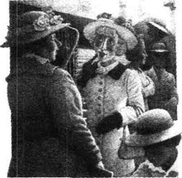
在东北电影公司里，人们都在楼梯上等候。莫斯小姐站在那儿等着，旁边是一位30岁左右长着漂亮娃娃脸的女人，她戴着顶白帽子，帽子四周点缀着水果。
“人真多呀！”莫斯小姐说，“今天有什么特别的事吗？”
“你还不知道吗，亲爱的？”那娃娃脸睁着大而无神的眼睛说，“9点半时来了个电话，要招漂亮姑娘。我们都在这儿等了几个钟头了。你以前在这家公司干过吗？”
“没有，我想我没在这儿干过。”莫斯小姐说。
“这家公司还不错，”娃娃脸说，“我一个朋友的朋友在这儿一天挣30英镑……你拍过很多部电影吗？”
“嗯，我不能算是真正的演员，”莫斯小姐说，“我是个受过训练的歌手。但最近情况实在是糟透了，我也只得演点儿戏。”
“像是那么回事，对吧，亲爱的？”娃娃脸说。
“我在音乐学院接受过良好的教育，”莫斯小姐说，“我经常在伦敦西区的演出中唱歌。但是我想换换行当……”
“是的，像是那么回事，对吧，亲爱的？”娃娃脸说。
就在那时，一位漂亮的秘书出现在楼梯顶上。
“你们都在等东北电影公司的消息吗？”
“对！”大家齐声大叫。
“哦，已经取消了。我刚接到一个电话。”
“可我确实需要那笔钱。”一个失望的声音说。
秘书不禁笑了起来。“哦，那儿根本就没钱，”她说，“‘东北’从来不付钱给群众演员。”
苦橘电影公司对外只有一个小小的圆窗户。这里没有等候室，除了一个姑娘以外，一个人都没有。这个姑娘走近窗口问道：“什么事？”
“请问我能见见经理吗？”莫斯小姐和气地问。
那姑娘闭了会儿眼睛。莫斯小姐朝她微笑，可那姑娘并不理睬。她皱起眉头，好像是闻到了什么难闻的气味。突然，她拿起一张纸，从窗口塞给莫斯小姐。
“填张表！”她说着，“砰”地关上了窗户。
“你会骑马——开车——跳水——开飞机——射击吗？”莫斯小姐念道。她边沿着街道往前走，边问着自己这些问题。猛烈的冷风刮着，扯着她的衣服，击打着她的后背，在她面前无情地嘲弄着她。这风也知道她无法回答这些问题。
在广场花园，她看到个垃圾筐，就把表格扔了进去。然后她在一张长凳上坐下，拿出一面小镜子，往鼻子上扑粉。但是镜子里的人冲她扮了个难看的鬼脸，她不禁哭了起来。她哭了很久；哭过之后又振奋起来。
“好了，都过去了，”她说，“能坐在长凳上让我的脚稍微休息休息还是挺舒服的。我的鼻子很快就会不红了。看看这些小鸟！它们离得好近呀。我想一定有人喂它们。不，我可没东西喂你们……”她的目光离开了这些小鸟。那是一座什么大楼呢——马德里咖啡馆吗？噢，瞧那可怜的孩子！他扑通一声摔倒了。不要紧！他又站起来了！……到今晚8点钟时，要是我还拿不到钱的话……马德里咖啡馆。“我不妨进去坐一坐，喝杯咖啡，就这样。”莫斯小姐寻思着，“许多艺术家也光顾那里。也许我的运气不错……一位皮肤黑黑的英俊绅士带着个朋友进来，和我同坐一桌，也许……‘不，朱利安，我想找个能唱这个角色的歌手，可找遍了伦敦，也没发现合适的人。你知道，这曲子难度很大；你瞧。”’莫斯小姐仿佛听到自己在说：“打扰一下，我刚好就是一个歌手，那个角色我唱过好多回了……‘太棒了！到我的工作室去，我要马上给你试音。’……一周10英镑……我干吗这么害怕呀？别害怕。我为什么不能去马德里咖啡馆呢？我是个正派女人——我是个专业歌手。我只是有点儿打哆嗦，这是因为我今天还没吃东西……‘你就从我的房子里滚出去，我的小姐。’……等着瞧吧，派因太太。马德里咖啡馆。那里晚上都会有音乐节目……‘节目怎么还不开演？’歌手还没来呢……‘对不起，我正巧是个歌手，那首曲子我唱过好多回了。’”
咖啡馆里暗沉沉的。男人们、高大的盆栽植物、红椅子、白石桌、穿黑色上衣的侍者，莫斯小姐从他们中间穿过，找了个地方坐下。
她刚一坐下，一个头戴小帽子的大块头男士就在她对面坐了下来。
“晚上好！”他招呼道。
莫斯小姐愉快地回答：“晚上好！”
“真是个美妙的夜晚。”大块头男士说。
“是的，挺不错的。真是美极了，不是吗？”她说。
他挥动手指向侍者示意。“来一大杯威士忌。”他又转向莫斯小姐，“你要点儿什么？”
“嗯，我想要杯白兰地，多谢了。”
过了五分钟，他转向莫斯小姐，并把一大口雪茄烟喷在她脸上。
“我喜欢你的帽子。”他看着她帽子上的紫花说。
莫斯小姐羞红了脸，心跳开始加快。
“我向来爱穿紫色。”她说。
那个大块头男士的手指在桌上敲着，久久地打量着她。
“我喜欢身上有肉的女人。”他说。
令莫斯小姐自己都感到吃惊的是，她竟然大声笑了起来。
五分钟后，大块头男士站了起来。
“嗯，是我去你那儿呢，还是你到我这儿来？”他问道。
“如果你不介意的话，我跟你去。”莫斯小姐说着，跟着他走出了咖啡馆。
The little governess
The little governess
Oh dear, she wished she wasn't travelling at night. She would much rather have travelled by day, much rather. But the lady at the Governess Agency had said: 'Take an evening boat. Then you can get into a "Ladies Only" carriage on the train next day, and that will be much safer than sleeping in a foreign hotel. Don't leave your seat on the train except to go and wash your hands, and when you do that, make sure you lock the door. The train arrives at Munich at eight o'clock in the morning, and Frau Arnholdt says that the Hotel Grunewald is only one minute away. She will arrive at six the same evening, so you can have a nice quiet day to rest and practise your German. When you want something to eat, I advise you to go to the nearest baker's and get a cake and some coffee. You haven't been abroad before, have you?'
'No.'
'Well, I always tell my girls that it's better to believe that other people are all bad than all good. It sounds hard, but we've got to be women of the world, haven't we?'
It was nice on the boat. The attendant in the Ladies' Sitting Room was so kind, and changed her money for her and helped her to find a comfortable place to lie down. She lay there and watched the other passengers taking off their hats and arranging themselves for the night. The attendant put a green shade over the lamp and sat with her sewing on her knees. 'I like travelling very much,' thought the little governess. She smiled as she fell asleep.
But when the boat stopped and she moved sleepily forward with all the people who knew where to go and what to do—then she felt afraid. Just a little afraid, just enough to wish—oh, that it was day and that she had someone, another woman, to travel with her.
'Tickets, please. Show your tickets. Have your tickets ready.'
She was off the boat. Immediately, a man in a leather hat came forward and touched her on the arm. 'Where for, Miss?' He spoke English—he must be a guard or an official of some kind with a hat like that. But then—without asking—he took her bag and started pushing past people, shouting: 'This way!' He had such a rude, determined voice.
'But I don't want help with my bag.' What a horrible man! 'I don't want any help. I can carry it myself.' He walked so fast that she had to run, and she tried to pull the bag out of his hand. He took no notice, but continued down the long, dark platform and across the railway line. She was sure that he was a robber as she, too, crossed the railway line. On the other side—oh, thank goodness!—there was a train with 'Munich' written on it.
The man stopped. 'Here?' asked the rude voice.
'Yes, a Ladies' carriage.' She opened her little purse to find something small enough to give to this horrible man, while he threw the bag into an empty carriage. There was a 'Ladies Only' notice stuck to the window. She got into the train and gave him a coin.
'What's this?' shouted the man, looking at it angrily. 'What have you given me? It isn't enough!' Did he think that he could trick her like that just because she was a girl and travelling alone at night? Never, never! She kept her purse safe in her hand and refused, simply refused, to see or hear him.
'Ah no. Ah no. This is not enough. You make a mistake.' He jumped onto the train and threw the money back at her.
Trembling with terror, she put out an icy hand and took the money. 'That's all you're going to get,' she said. For a minute he stood, staring at her with his sharp eyes. Then he said something she did not understand, and disappeared into the dark. Oh, how thankful she was! How simply terrible that had been. As she stood up to see if her bag was all right, she saw her face in the mirror—white, with big, round eyes. 'You're all right now,' she said to the mirror face, feeling that it was more frightened than she was.
People stood talking in groups on the platform; a strange light from the station lamps made their faces green. A boy was selling tea; a woman offered blankets for hire. White smoke floated in the dark air. 'How strange it all is,' thought the little governess, 'and the middle of the night, too.' She looked out from her safe corner of the carriage. She was not frightened any more, but proud that she had not given that man any money. 'I can take care of myself—of course I can. The great thing is not to—'
Suddenly there was a sound of men's voices and loud laughter. It came nearer. The little governess froze in her corner as four young men passed, staring in at her through the window. One of them, bursting with the joke, pointed at the 'Ladies Only' notice, and they all stopped to stare at the little girl in the corner. Oh dear, they were in the next carriage. She heard them talking and laughing, and then there was a sudden silence before one of them, a tall thin fellow with black hair, threw open her door.
'We invite you to share our carriage, Mademoiselle,' he said in French. She could see the others, standing behind him. She sat very straight and very still. 'Please be so kind,' said the tall man, and behind him one of the others exploded into screams of laughter. 'The young lady is too serious,' said the man. Then they all went laughing back to their carriage and she was alone again.
'Close the doors! Close the doors!' Someone ran up and down beside the train.
'I wish it wasn't dark. I wish there was another woman in my carriage. I'm frightened of the men next door.' The little governess looked out of the window, and saw—the man in the leather hat coming back again. His arms were full of luggage. But—what was he doing? He tore the 'Ladies Only' notice off the window, while an old man climbed into the carriage. 'But this is for ladies only.'
'Oh, no, Miss. You make a mistake.'
'Close the doors!' A whistle blew and the train started.
Tears came to her eyes, but through them she saw the old man taking off his hat. He looked very old. Ninety, at least. But he had a nice face, pink, with little blue eyes. And he asked her, so politely, 'Would you like me to move to another carriage, Mademoiselle?'
What, make him carry all those heavy things? She couldn't do that! 'No, it's quite all right.'
'Ah, a thousand thanks.'
The train left the station and rushed into the dark. She looked out of the window but could see nothing—just the occasional light on a hill or the shape of a tree. In the carriage next door the young men were singing—the same song again and again. 'I wouldn't dare go to sleep if I were alone in here,' thought the little governess. She was glad that the old man was there. Really, he looked so nice, sitting there, so straight-backed and neat, reading his German newspaper. Some old men were horrible, but he... He put down his newspaper. 'Do you speak German, Mademoiselle?'
'Yes, a little,' said the little governess, blushing a deep pink.
'Ah, then, perhaps you would like to look at my papers. I have several here.'
First, she took off her hat, and put it safely with her bag. How kindly the old man watched her as her little hand turned over the big white pages. Her beautiful golden hair hung over her face. How sad to be a poor little governess and have such wonderful hair! Perhaps the kind old man was thinking that. Perhaps he thought, 'Poor little girl, travelling all alone at night. I wish I could be a grandfather to her and look after her!'
'Thank you very much,' she smiled, giving back the papers.
'But you speak German extremely well,' said the old man. 'You have been in Germany before, of course?'
'Oh, no, this is the first time I have ever been abroad at all.'
'Really! I am surprised. I had the feeling you had travelled a great deal before. Well, you will like Munich,' said the old man. 'Munich is a wonderful city. Museums, pictures, theatres, shops—you can find everything in Munich. I have travelled all over Europe, but I am always glad to get back to Munich.'
'I am not going to stay in Munich,' said the little governess shyly. 'I am going to be governess to a doctor's family in Augsburg.'
Ah, he knew Augsburg. A fine city, too. 'But you should take a little holiday in Munich before you go.'
'Oh, I am afraid I could not do that,' said the little governess seriously. 'Also, if one is alone...' He understood. He, too, looked serious, and they were both silent after that. The train flew on through the night. It was warm in the carriage. There were distant noises of doors opening and closing, rain on the windows. She fell asleep.
A sudden loud noise woke her. What had happened? The old man sat frowning. 'Ha! ha! ha!' came from the next carriage.
'Such thoughtless young men,' said the old man. 'I am afraid that they have woken you up with their noisy behaviour.' No, not really. She wanted to wake up now. She looked at her watch. Half-past four. A cold blue light filled the window. She looked out on fields, white houses, trees. How pretty it was! How pretty and how different! Even those pink clouds in the sky looked foreign. She rubbed her cold hands together, and felt very happy.
The train began to go more slowly. It gave a long whistle. They were coming to a town. Tall pink and yellow houses went by. A woman threw open her window and stared out at the train. More women appeared. And then—Look! What lovely flowers—and at the railway station, too! Colours you would never see at home.
The train stopped. A fat woman walked along the platform, carrying baskets of strawberries. Oh, she was thirsty! She was very thirsty!
The old man got up, smiling, and put his coat on. She smiled back at him as he left the carriage. While he was gone, the little governess looked at herself in the mirror and arranged her hair like a girl who is quite old enough to travel by herself. But she was so thirsty! She opened the window, and the fat woman with the strawberries came to her immediately. 'How much?' asked the little governess. 'Oh, my goodness! Much too expensive!' And she sat down in her corner again.
A whistle blew. She hoped the old man would not be left behind. Oh, here he was! And she smiled at him like an old friend as he came back into the carriage, holding—a basket of strawberries! 'Mademoiselle, please accept these...'
'What, are they for me?' She looked alarmed, uncertain.
'Certainly, for you,' said the old man. 'I myself am no longer able to eat strawberries. Please. Try one.'
'Oh, thank you!' she gasped. 'They look so delicious.'
'Eat them all up,' said the old man, looking pleased and friendly. They were so big and juicy that she had to take two bites of each one. The juice ran all over her fingers. While she was eating them, she pretended to herself that the old man was her grandfather. What a perfect grandfather he would be!
When she had finished the strawberries, she felt that she had known him for years. She told him all about Frau Arnholdt and the arrangements for meeting her in Munich. Frau Arnholdt would not arrive until the evening. He listened, and then he said, 'I wonder if you would let me show you a little of Munich today. Just the English Garden, and perhaps a museum... It would be so much more pleasant for you than sitting in a hotel room, and it would give an old man a great deal of pleasure.'
She said 'yes' immediately, and only wondered later if that had been a sensible thing to do. After all, she really did not know him. But he was so old and so kind—not to mention the strawberries. And it was her last day, really, her last day to enjoy herself.
'I will take you to your hotel,' he said, 'and call for you there at ten o'clock.' He gave her a card with his name on it. So then everything was arranged, everything was all right. And the little governess began to feel excited at being abroad, and enjoyed looking out of the window at all the new and foreign things, and talking about them all to the kind old grandfather until they reached Munich. He guided her carefully through the crowds at the station, and took her straight to her hotel. 'I will call for you at ten o'clock,' he said, and then he was gone.
'This way, Miss,' said a waiter, who had been staring at the little governess and the old man.
She followed him up the stairs to a dark bedroom. Ugh! What an ugly, cold room! How horrible it would be to spend the whole day here! 'Is this the room Frau Arnholdt ordered for me?' asked the little governess.
The waiter kept staring at her—he seemed to think there was something peculiar about her. He began to whistle, then changed his mind. 'Certainly,' he said.
Well, why didn't he go? Why did he stare at her like that? 'Go away,' said the little governess, in her cold English way. His little eyes widened in surprise. 'Go away at once,' she repeated icily.
He went to the door, but then he turned round. 'And your gentleman friend,' he said. 'Shall I send him upstairs to you when he comes?'
* * *
Big white clouds over the white streets—and sunshine everywhere.Tall trees on both sides of the streets, trams full of fat, smiling people, a sound of laughter from open windows.And beside her, looking neater and more beautifully brushed than ever, her grandfather, who was showing her Munich. She wanted to run, to hang on his arm, to cry, 'Oh, I am so very happy!'
He guided her across the roads, waiting while she looked at everything and watching her with his kind eyes. She ate bread and meat and drank beer out of a huge glass like a flower vase. It didn't make you drunk like English beer. And then they went to look at pictures in the museum.
When they came out of the museum, it was raining. The grandfather put up his umbrella, and held it over her as they walked to a restaurant to have lunch. 'It will be easier if you take my arm,' he said. 'And, you know, that is the custom here in Germany.' So she took his arm and walked beside him, and the walk was so interesting that he forgot to put the umbrella down even when the rain stopped.
After lunch they went to the English Garden. 'I wonder what the time is,' said the little governess. 'My watch has stopped. We've seen so many things that I feel it must be quite late.'
'Late!' he laughed, 'late! But there is so much more to see, and you have not yet tried our delicious ice-cream!'
'Oh,' cried the little governess, 'I have enjoyed myself more than I can say. It has been wonderful! But Frau Arnholdt is calling at the hotel for me at six, so I should be there by five.'
'And you shall be there, but first we will sit down in this café and have a chocolate ice-cream.'
She was happy again. The ice-cream slipped down beautifully, and she sat with her back to the clock that pointed to twenty-five minutes to seven. 'Really and truly,' she said, 'this has been the happiest day of my life.' Her grateful baby heart was full of love for her dear old grandfather.
When they left the English Garden, the day was almost over. 'You see those big buildings there,' said the old man. 'That is where I live—I and my old housekeeper who looks after me.' She was very interested. 'Now, before I take you back to your hotel, will you come up for a few minutes and see my little home?' Of course, she would love to.
The passage was quite dark. 'Ah, I suppose my old woman has gone out to buy me a chicken.' He opened the door, and shy but curious, she went into a strange room. She did not know quite what to say. It wasn't pretty, but it was neat, and, she supposed, comfortable for such an old man. 'Well, what do you think of my little home?' He took a bottle and two pink glasses out of a cupboard. 'If ever you want to spend one or two days in Munich, there will always be a place for you here, and an old man ready to look after you.' He poured some wine into the pink glasses, and his hand shook a little as he poured. It was very quiet in the room.
She said, 'I think I ought to go now.'
'But you will have a little glass of wine with me—just one tiny glass before you go?' said the old man.
'No, really, no. I never drink wine, or anything like that.' And although she was afraid she was being awfully rude, she was quite determined. 'No, really, please.'
'Well, will you sit here by me for five minutes while I drink your health?'
The little governess sat down on the edge of the sofa, and he sat beside her and drank. 'Have you really been happy today?' asked the old man, and he sat so close to her that she could feel his knee against hers. Before she could answer, he took her hands in his. 'And are you going to give me one little kiss before you go?' he asked, pulling her towards him.
It was a dream. It wasn't true! It wasn't the same old man at all. Ah, how horrible! The little governess stared at him in terror. 'No, no no!' she gasped, pulling away from him.
'One little kiss. A kiss.Just a little kiss, my dear.' He pushed his face into hers, his lips smiling. How his little blue eyes shone!
'Never—never. How can you!' She jumped up, but he was too quick for her, and he pushed her against the wall and pushed his hard old body against hers. Although she fought him, shaking her head desperately from side to side, he kissed her on the mouth. On the mouth! Where nobody had ever kissed her before...
She ran, ran down the street until she found a wide road with trams and a policeman standing in the middle. 'I want to get a tram to the station,' cried the little governess.
'Excuse me?'
'The station!'
'There—there's a tram now,' and he watched, very much surprised, as the little girl with her hat on one side and tears pouring down her face, jumped on to the tram and sat there with her hands over her mouth.
* * *
When the little governess reached the Hotel Grunewald, the same waiter who had shown her to her room was there, putting glasses on the tables. He seemed oddly pleased to see her and to answer her questions. 'Oh, yes, the lady came. I told her you had arrived and then gone out again with a gentleman. She asked me when you were coming back again—but of course I could not say. And then she went to see the manager.' He picked up a glass and examined it closely. He smiled as he put it down again.
'Where is the lady now?' asked the little governess, shaking so violently that she had to hold her handkerchief up to her mouth.
'How should I know?' cried the waiter, and he pushed past her to greet some new guests coming through the door of the hotel. 'That's it! That's it!' he thought. 'That will teach her.' And as he picked up the new guests' luggage, he repeated again the little governess's words, 'Go away. Go away at once. Shall I! Shall I!' he shouted to himself.
governess n. woman employed to teach young children in their home (usu. living as a member of the household). 家庭女教师（通常似家庭成员般一起生活）。
Frau the German word for 'Mrs' (a married woman). （德语）夫人，太太（指已婚妇女）。
shade n. thing that shuts out light or makes it less bright. 遮光物。
determined adj. with one's mind firmly made up; resolute. 有决心的；意志坚定的；坚决的。
trick v. deceive (sb.). 欺骗，欺诈（某人）。
offer v. give opportunity for (sth.); provide. 为（某事物）提供机会；给予。
freeze v. (cause a person or an animal to) stop suddenly; make or become unable to move, speak, or act, because of fear, shock, etc. （使人或动物）突然停住；惊呆；吓呆。
explode v. (of feelings) burst out suddenly. （指感情）迸发。
occasional adj. happening, coming, done, etc. from time to time; not regular. 偶然的；偶尔的；非定时的。
thoughtless adj. inconsiderate of others; selfish. 不顾及他人的；自私的。
rub v. act or process of rubbing. 擦；磨；摩擦。
at home 在本国；在国内。
leave sb./sth. behind fail or forget to bring or take sb./sth. 未能或忘记带某人或某物。
gasp v. utter sth. in a breathless way. 气喘吁吁地说。
call for collect (sb./sth.). 接（人或物）。
tram n. public passenger vehicle, usu. driven by electricity, running on rails laid along the streets of a town. （有轨的）电车。
custom n. usual, generally accepted and long established way of behaving or doing things. 习俗；风俗。
call at make a short visit. 拜访。
slip down beautifully pleasant to drink, eat, etc. 很好喝（吃等）。
pour v. cause (a liquid or substance that flows like liquid) to flow in a continuous stream. 灌注，倾泻。
drink your health express good wishes to your health by drinking (toast). 为你的健康干杯。
家庭女教师
家庭女教师
噢，天啊，她多么希望不在夜间旅行啊。她宁肯在白天旅行，宁肯在白天。可是家庭女教师办事处的那位女士说：“搭乘夜间的船只，第二天再换乘火车，乘坐‘女士专用’车厢，这样要比在外国旅馆里过夜安全得多。在火车上，除了去洗手间，否则不要离开你的座位，去洗手间时一定要锁好房门。火车早上8点钟到达慕尼黑，阿恩霍尔德夫人说车站离格罗尼沃尔德旅馆只有一分钟的路程。她会在当天晚上6点钟到那儿，你可以安静地好好休息一天，练练德语。你要是想吃东西，我建议你去最近的面包店要一块蛋糕，喝点儿咖啡。你以前没出过国吧？”
“没有。”
“嗯，我总是告诉到这儿来的女孩子们，最好相信别人都是坏人，而不要相信他们都是好人。这听起来很冷酷，但是在这个世界上，我们身为女人不得不这样，你说对吗？”
乘船挺不错的。女士舱的服务员很和气，为她兑换钱币，还帮她找了个舒服的地方让她躺下。她躺在那儿，望着其他乘客把帽子摘下来，准备睡觉。服务员用绿色的罩子把灯罩住，在她身边坐下来，把针线活放在膝盖上做了起来。“我真喜欢旅行呀。”小教师心想。她微笑着睡着了。
但是当船停下来，她困倦地随着那些知道自己要往哪儿去以及去干什么的人群往前走时——她害怕起来。但只是有点儿害怕，这使她不禁期盼起来——噢，现在要是白天，并且有位女旅伴就好了。
“检票，请出示您的票，把票准备好。”
她下了船。马上就有个戴皮帽子的男人走过来，碰了碰她的胳膊。“去哪儿，小姐？”他用英语说——戴这种帽子的人很可能是个警卫或是某类职员。可紧接着——问都没问她一声——他就拎起她的包，开始推开行人往前走，他大叫着：“这边儿走！”他的声音很粗鲁，不容置疑。
“我不需要人帮我拎包。”多可怕的一个人！“我不需要人帮忙，我自己拎得动。”他走得很快，她得跑着才能追上。她试图从他手里把包夺回来。但他毫不理会，继续沿着又长又黑的站台往前走，穿过了铁路线。当她也跟着穿过那条铁路线时，她深信这人是个强盗。对面——噢，谢天谢地！——有辆火车，上面写着“慕尼黑”。
那人停了下来。“是这儿吗？”他粗鲁地问。
“对，女士车厢。”就在她打开小钱包，想找点儿小钱给这个令人讨厌的男人的时候，那人把她的包扔进了一节空车厢。车厢的窗户上贴着一张“女士专用”的条子。她上了火车，给了那人一枚硬币。
“这是什么？”那个男人吼道，生气地看着给他的钱，“你给了我些什么？不够！”他以为她是个晚上独自出门的女孩子就可以这样骗她吗？没门儿，绝对没门儿！她把钱包牢牢地攥在手里，不肯理他，她根本就不想理睬他。
“噢，不。噢，不。这不够，你搞错了。”他跳上火车，把钱朝她扔过来。
她害怕得浑身发抖，伸出冰冷的手把钱捡起来。“只能给你这么多。”她说。他在那儿站了片刻，那双尖利的眼睛盯着她。然后，他说了句什么，她也没听懂，他就消失在黑暗中了。噢，她真觉得庆幸！刚才的事真是太可怕了。当她起身查看自己的包是否放好了的时候，她在镜子里看到了自己的脸——面色苍白，双眼圆睁。“你现在没事了。”她对着镜中的那张脸说，感觉那张脸比她自己还要害怕。
人们成群地站在站台上聊天；车站上那古怪的灯光把人们的脸映成了绿色。一个男孩儿在卖茶叶；一个女人在出租毯子。黑暗的天空中飘着白烟。“多么不可思议呀，”小教师心想，“这可是在半夜啊。”她从车厢自己那安全的角落里往外望着。她不再觉得害怕了，相反，她觉得很自豪，她没有给那个男人一分钱。“我能自己照顾自己了——我当然能。重要的是不去——”
突然传来了男人的说话声和大笑声。声音越来越近了。四个年轻小伙子经过她这儿的时候，透过窗户盯着她瞧，小教师待在角落里一动也不敢动。其中一人指着“女士专用”的条子，跟他们开了个玩笑，他们都停下来盯着角落里的这个小女孩儿看。噢，天啊，他们就在隔壁车厢。她听到他们又说又笑，忽然静了下来，其中一个黑头发、身材瘦高的小伙子推开了她车厢的门。
“我们邀请您来我们车厢，小姐。”他用法语说道。她看到另外几个人在他身后站着。她笔直地坐在那儿，一动不动。“请您赏光。”高个子说。他身后有个人哄然大笑起来。“这位小姐太严肃了。”这人又说道。然后他们笑着回到了自己的车厢，这里又剩下她一个人了。
“关上车门！关上车门！”有人在火车边跑来跑去。
“要不是在夜里该多好，但愿我这节车厢再来一位女士。隔壁那些人真令我害怕。”小教师朝窗外望去，她看见——那个戴皮帽子的男人又回来了。他怀里抱了满满一大堆行李。可——他来干什么呀？他把“女士专用”的条子从窗户上撕了下来，这时一个老头儿爬进了车厢。“可这节车厢是女士专用的呀。”
“哦，不，小姐，你弄错了。”
“关门了！”汽笛鸣响，火车开动了。
泪水涌出了她的眼睛。透过泪眼，她看到那个老头儿摘下了帽子。他看上去很老，至少有90岁。但他的脸红红的，长着一双蓝色的小眼睛，看上去很和善。他非常客气地问她：“要不要我换个车厢，小姐？”
什么，让他一个人把那些沉重的东西都搬走吗？她不能这样做！“不用了，这样可以。”
“啊，万分感谢。”
火车出了站，在黑暗中向前疾驶。她往窗外望去，但什么也看不见——只能偶尔看见山上的灯光或者树的轮廓。隔壁车厢里的年轻人在唱歌——同一首歌唱了一遍又一遍。“要是一个人在这儿的话，我可不敢睡觉。”小教师想。她很高兴有位老人在这儿。他笔直端正地坐在那儿看德文报纸，看上去真是非常和善。有些老头儿很让人讨厌，但是他……老人放下报纸问她：“你会说德语吗，小姐？”
“是的，会一点儿。”小教师回答道，她的脸变得通红。
“啊，那么，也许你想看看我的报纸吧，我这儿有好几份呢。”
她先把帽子摘掉，把它好好地和包放在一起。当她的小手翻着大张的白色报纸时，老人在多么慈祥地望着她呀！她那美丽的金发垂在脸旁。也许这位和蔼的老人在想，作为一个贫穷的小家庭教师，拥有这样一头秀发是多么令人悲哀啊！他可能还会想：“可怜的小姑娘，竟然独自在夜间旅行。我真希望作她的祖父去照顾她！”
“太谢谢您了。”她微笑着把报纸还回去。
“你的德语讲得很好，”老人说，“你以前一定去过德国吧？”
“哦，没有，这是我第一次出国。”
“真的吗？我很吃惊。我感觉你以前好像经常旅行。嗯，你会喜欢慕尼黑的。”老人说，“慕尼黑是座很棒的城市，博物馆、绘画、剧院、商店——应有尽有。我去过欧洲的各个地方，但我总是很高兴能回到慕尼黑来。”
“我不会在慕尼黑久住，”小教师不好意思地说，“我要去奥格斯堡一个医生家当家庭教师。”
啊，他知道奥格斯堡，那也是座不错的城市。“不过你去奥格斯堡之前，还是应该在慕尼黑度个短假。”
“哦，恐怕我不能那样做，”小教师严肃地说，“而且，如果是独自一人……”他明白她的意思。他也严肃起来，接下去他们就都不出声了。火车继续在夜色中飞驰。车厢里很暖和。远处传来开门关门以及雨点打在窗户上的声音。她就这样睡着了。
突然一声巨响把她吵醒了。出了什么事？老人皱着眉头坐在那儿。隔壁传来“哈！哈！哈！”的声音。
“这些自私的年轻人，”老人说，“恐怕他们吵吵闹闹的，把你给弄醒了吧？”不，真的没有。她本来就要醒了。她看看手表，4点半了。一束冰冷的蓝光照在窗户上。她望着外面的田野、白房子、还有树木。多漂亮啊！多漂亮多特别啊！连那天空中的粉色云彩都显得充满了异国情调。她搓着冰冷的双手，感觉真是快乐极了。
火车开始减速了，发出长长的鸣笛声。他们驶入了一个小镇。高高的粉色和黄色的房屋从车边掠过。有个女人打开窗户，盯着火车看。更多的女人出现了。接着——快看呀！多可爱的花儿呀——就在车站旁边！这些颜色你在国内是根本看不到的。
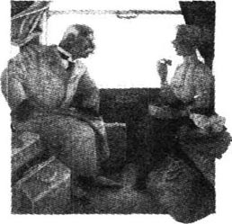
火车停下来了。一个胖女人沿着站台走来，手里提着装满草莓的篮子。噢，她觉得口渴了！真是渴得要命！
老人微笑着站起身，把外衣穿上。他离开车厢时，她也朝老人笑了笑。他走后，小教师照了照镜子，理了理头发，就像个可以独自出门旅行的大姑娘那样。可她确实太渴了！她打开车窗，那个卖草莓的胖女人马上就走了过来。“多少钱？”小教师问。“噢，我的天！太贵了！”她又在角落里坐下。
汽笛响了。她希望老人不要被落下。哦，他来了！当他回到车厢时，她像老朋友似的冲他微笑，他手里拿着——一篮子草莓！“小姐，请收下……”
“什么，给我的吗？”她看起来很惊慌，不太确信的样子。
“当然是给你的，”老人说，“我自己已经不能吃草莓了。请尝一尝吧。”
“哦，谢谢您！”她高兴得倒吸了口气，“这些草莓看起来真是太鲜美了。”
“把它们都吃了吧。”老人说。他看起来很高兴，也很亲切。草莓又大，汁水又多，她得咬上两口才能吃完一个。她的手指上沾满了草莓汁。她在吃草莓的时候，把老人假想成自己的祖父。他会是个多么完美的祖父啊！
她吃完草莓，感觉自己好像已经认识他好多年了似的。她把阿恩霍尔德夫人以及在慕尼黑如何与她会面的安排都告诉了这位老人。阿恩霍尔德夫人晚上才能到。他听她讲完，然后说：“不知道你今天想不想让我带你在慕尼黑转转，就看看英国花园，也可能再去看看博物馆……这要比你在旅馆房间里坐着开心多了，也会给我这个老人带来很多乐趣。”
她马上就回答说“行”，过后她才去想这样做是否明智。毕竟她并不真正了解他。但是他年纪这么大了，人又那么好——更不用说还送草莓给她吃了。这是她的最后一天，真的，最后一个可以痛痛快快玩的日子。
“我先带你去旅馆，”他说，“然后10点钟我去那儿接你。”他给了她一张名片。于是一切都安排妥当了，一切都那么尽如人意。小教师开始为自己身处异国他乡而感到兴奋，她欣赏着窗外所有那些新奇陌生的事物，跟这位好心的老祖父谈论着这一切，就这样一直到他们抵达慕尼黑车站。他小心地领着她穿过车站上的人群，把她直接送到旅馆。“我10点钟来接你。”他说完就走了。
“这边请，小姐。”那个一直在盯着小教师和老人的服务员说道。
她跟着他上了楼，来到一间黑暗的卧室。啊唷！多难看、多冰冷的房间啊！要是在这里待上一整天，那简直是糟糕透了！“这就是阿恩霍尔德夫人给我订的房间吗？”小教师问道。
服务员还在打量着她——他好像觉得她有什么异样似的。他开始吹口哨，随后又改变了主意。“当然。”他说。
嗯，他为什么还不走？为什么这样看着她？“走开。”小教师用冷漠的英国人的方式说道。服务员吃惊地睁大了他的小眼睛。“马上给我走开。”她冷冷地重复道。
他向门口走去，接着又转过身来。“您那位绅士朋友，”他问，“他来的时候，我该带他上楼来吗？”
* * *
干净的街道上空飘着大朵白云——阳光照耀着万物。街道两旁长着高高的树木，电车上坐满了胖胖的、微笑着的乘客，开着的窗口传来阵阵笑声。她那位看起来比刚才更整洁、更漂亮的祖父就在她身旁，在带她游览慕尼黑。她想跑起来，想挽着他的胳膊，想大声喊叫：“噢，我太幸福了！”
他领着她过马路，不管她看什么东西，他都等着她，和蔼地看着她。她吃了些面包和肉，还喝了点儿啤酒。啤酒是用大玻璃杯盛着的，那玻璃杯的样子像花瓶一样。跟英国啤酒不一样，这种啤酒不会醉人。然后他们又去博物馆看绘画作品。
他们从博物馆出来的时候，天下雨了。祖父为她撑起了伞，他们步行去一家餐馆吃午饭。“你要是挽着我的胳膊，我打起伞来会轻松些。”他说，“而且你要知道，这也是德国的风俗。”于是她搀着他的胳膊，走在他旁边。这样走着很有意思，雨都停了，可他却忘记把伞收起来。
吃完午饭，他们又去了英国花园。“不知道现在几点了，”小教师说，“我的表停了。我们看了那么多东西，我觉得时间一定很晚了。”
“晚了！”他笑着说，“晚了！可我们还有那么多东西要看，你还没能尝尝我们美味的冰淇淋呢！”
“哦，”小教师大声说，“我今天玩得太开心了，简直无法用语言表达。真是开心极了！但是阿恩霍尔德夫人6点钟要去旅馆找我，所以我应该在5点之前就回去。”
“你能赶回去的，不过我们还是先去咖啡馆坐坐，吃一份巧克力冰淇淋吧。”
她又高兴起来。冰淇淋很好吃。她背对着钟表坐在那儿，时针指在了6点35分。“说真的，”她说，“这是我一生中最快乐的一天。”她那孩子般满怀感激的心充满了对她这位老祖父的爱。
他们离开英国花园的时候，几乎已经是晚上了。“你瞧那边那些高大的楼房，”老人说，“我就住在那儿——就我和一个照顾我的老管家。”她很感兴趣。“那么，在我送你回旅馆前，你想不想上来待几分钟看看我的小家？”她当然想去了。
过道里很黑。“啊，我想老太婆出去给我买鸡去了。”他把门打开。带着点儿羞涩和好奇，她走进了一间陌生的屋子。她真不知道该说些什么。房间并不漂亮，但很整洁。她想，像他这样的老头儿住在这里还算舒服。“嗯，觉得我的小家怎么样？”他从壁橱里拿出一瓶酒和两个粉色的玻璃杯。“你要是什么时候想在慕尼黑住上一两天的话，随时欢迎你来这儿住，我这个老头儿乐意照顾你。”他往粉色的杯子里倒了些酒。他倒酒的时候，手有些发抖。房间里静悄悄的。
她说：“我想我得走了。”
“你难道不想和我喝上一小杯吗——在你走之前就喝很小一杯好吗？”老头儿说。
“不喝了，真的，不喝了。我从来不喝酒这类的东西。”虽然她担心这样做极为不礼貌，但是她很坚决。“求您了，真的不喝。”
“嗯，你在我身边坐五分钟，让我为你的健康干一杯好吗？”
小教师坐在沙发边上，他挨着她坐下来把酒喝了。“你今天真的很开心吗？”老人问道。他坐得离她很近，她都能感觉到他的膝盖抵着她的膝盖了。没等她回答，他就抓住了她的手。“你能轻轻地吻我一下再走吗？”他说着就把她往怀里拉。
这简直是一场梦。这不可能是真的！这根本不是原来的那个老头儿。啊，太可怕了！小教师惊恐地盯着他。“不要，不要，不要！”她喘着气，想挣脱出来。
“就吻一下，一下，只吻一下，亲爱的。”他把脸使劲地凑过来，他的嘴在笑。他那蓝色的小眼睛闪着光！
“千万不要——千万不要。你怎么能这样！”她跳了起来，可是他比她要快得多，他一下子把她按到了墙上，硬梆梆的老身子骨紧紧地压住她。尽管她也反抗，头拼命地摆来摆去，但他还是吻了她的嘴。竟然是在嘴上！以前还从来没人吻过她的嘴唇……
她顺着大街跑啊跑，一直跑到有电车的宽马路上，一个警察正站在路中央。“我要坐电车去火车站。”小教师哭着说。
“你说什么？”
“火车站！”
“那边——现在就有辆车。”他很吃惊地看着这个帽子歪在一边，泪流满面的小女孩儿跳上电车，双手捂着嘴巴坐在那儿。
* * *
当小教师回到格罗尼沃尔德旅馆的时候，曾带她去房间的那位服务员正在往桌子上放玻璃杯。他好像很高兴见到她并回答她的问题，但是这种高兴有点儿怪。“哦，是的，那位女士来了。我告诉她你已经到了，又和一位先生出去了。她问我你什么时候再回来——我当然说不出了。然后她就去见经理了。”他拿起一个杯子仔细查看着。等再把杯子放下的时候，他笑了起来。
“那位女士现在在哪儿？”小教师问道。她抖得太厉害了，不得不拿手帕捂住嘴。
“我怎么会知道？”服务员大声说着，从她身旁挤过去迎接那些正要进门的新客人。“活该！活该！”他心想，“那会给她个教训。”当他扛起新来的客人的行李时，他重复着小教师的话：“走开，马上给我走开。该我吗？该我吗？”他冲自己大声叫道。
Her first ball
Her first ball
Leila found it hard to say exactly when the ball began. Perhaps it began in the car taking her there. It did not matter that she shared the car with the Sheridan sisters and their brother. She sat back in her own little corner of it, and away she went, past dancing houses and fences and trees.
'Have you really never been to a ball before, Leila? But how strange—' cried the Sheridan girls.
'We lived so far from anyone else,' Leila said softly. 'In the country we had no near neighbours.'
Oh dear, how hard it was to be calm like the others! She tried not to smile too much; she tried not to care. But everything was so new and exciting. Meg's roses, Jose's necklace, Laura's little dark head above her white dress—she would remember these things for ever.
Her cousin Laurie reached over and touched Laura on the knee.
'Listen,' he said. 'We'll do the third and ninth dances together, as usual. OK, darling?'
Oh, how wonderful to have a brother! Leila was so excited that she suddenly wanted to cry, because she was an only child, and no brother had ever said 'OK, darling?' to her; no sister would ever say, as Meg said to Jose at that moment, 'I've never seen your hair look so lovely as it does tonight!'
But there was no time to cry. They were at the hall already. The street was bright with moving lights and happy faces; little white shoes chased each other like birds.
'Hold on to me, Leila; you'll get lost,' said Laura.
'Come on, girls, let's go straight in,' said Laurie.
Leila put her hand on Laura's arm, and somehow the crowd carried them along and pushed them past the big golden lamp, along the passage and into the little room marked 'Ladies'. Here it was even more crowded and noisy. Everyone was pushing forwards, trying to get to the mirror.
There was a big gas light in the ladies' room. It wouldn't wait; it was dancing already. When the door opened, it jumped up almost as high as the ceiling.
Dark girls, fair girls were combing their hair, opening and closing bags, fastening buttons. And because they were all laughing, it seemed to Leila that they were all lovely.
'Aren't there any hairpins?' cried a voice. 'I need some hairpins.'
'Be a darling and put some powder on my back,' cried someone else.
'But I must have a needle and cotton! I've torn miles off my skirt!' screamed a third.
Then a voice said, 'Pass them along, pass them along!' and the basket of dance programmes went from hand to hand. Lovely little pink and silver programmes with tiny pink pencils. Leila's fingers shook as she took one. She wanted to ask, 'Should I take one, too?' But then Meg cried, 'Ready, Leila?' and they pushed through the crowd towards the doors of the dance-hall.
The band was silent, waiting to begin playing, but the room was full of the noise of talking and laughter. Leila felt that even the little coloured flags which hung from the ceiling were talking. She forgot to be shy. She forgot how, earlier that day, she had sat on her bed with one shoe off and one shoe on and begged her mother to ring up her cousins and say that she couldn't come. The feeling she had had, that she wanted to go home, to be back at her dark lonely house out in the country, suddenly changed to a feeling of complete happiness that she was here at this ball.
She looked at the shining, golden floor, the flowers, the coloured lights, and at the stage, with its red carpet and golden chairs, and the band ready to play, and she thought, 'How lovely! How simply lovely!'
All the girls stood together on one side of the doors, and the men stood on the other side. Older ladies, in dark dresses, walked with little careful steps over the shiny floor towards the stage.
'This is my little country cousin Leila. Be nice to her. Find her partners. I'm looking after her,' Meg was telling all the girls.
Strange faces smiled sweetly at Leila. Strange voices answered, 'Of course, my dear.' But Leila knew that the girls didn't really see her. They were looking at the men. Why didn't the men begin? What were they waiting for? They stood there, not talking, just smiling to themselves. Then quite suddenly, they were coming towards the girls, flying towards them over the golden floor.
A tall, fair man flew up to Meg, took her programme and wrote something in it. Meg passed him on to Leila. 'May I have the pleasure?' He wrote in her programme, smiled at her and moved on. Then a dark man came up to Leila, then cousin Laurie and a friend. Then quite an old man—fat and rather bald, too—took her programme and said, 'Let me see, let me see!' He looked at his programme, which was black with names, and at Leila's programme. He seemed to have so much trouble finding a free dance for her that Leila felt ashamed.
'Oh, please don't bother!' she said eagerly.
But the fat man wrote something in her programme and looked at her again. 'Do I remember this bright little face?' he said softly. 'Have I seen this little face before?'
At that moment the band began playing; the fat man disappeared. He was carried away on a wave of music that flew over the shining floor, breaking the groups of people into couples and throwing them out to the corners of the room.
Leila had learnt to dance at school. Every Saturday afternoon, the girls were taken to a little hall where Miss Eccles (of London) gave her 'top quality' lessons. But the difference between that poor little hall—with an old woman banging on the piano and Miss Eccles shouting at the girls to lift their feet—the difference between that place and this wonderful place of music and golden light was so great that Leila felt she would die if she didn't dance soon.
'Our dance, I think.' Someone smiled and gave her his hand. She didn't need to die, after all. She floated away like a flower on a stream.
'Quite a good floor, isn't it?' said a voice close to her ear.
'I think it's most beautifully slippery,' said Leila.
'Excuse me?' The voice sounded surprised. Leila said it again. There was a tiny pause before the voice said, 'Oh, quite,' and they danced on.
He danced so beautifully. That was the great difference between dancing with men and dancing with girls, Leila decided. Girls bumped into you and stepped on your feet.
The flowers were no longer flowers; they were pink and white flags flying by.
'Were you at the Bells' last week?' the voice said. It was a tired voice. Leila wondered whether she should ask him if he needed to stop and rest.
'No, this is my first ball,' she said.
He gave a little laugh. 'Oh, I say!'
'Yes, it really is the first ball that I've ever been to.' Leila felt quite excited, just talking about it. 'You see, I've lived in the country all my life...'
At that moment the music stopped, and they went to sit down. Leila's partner did not say very much. He stretched out his legs, played with a button on his jacket and looked around the room. But it didn't matter. The band began to play again, and her second partner seemed to appear from nowhere.
'Floor's not bad,' said the new voice. 'Were you at the Neaves' last Tuesday?'
Again, Leila explained that this was her first ball. It was strange that her partners did not seem to find this more interesting. It was so exciting! Her first ball! She was at the beginning of everything.
'How about an ice-cream?' said her partner. And they went through the doors, down the passage to the supper-room. Leila's face felt hot, and she was terribly thirsty. How sweet the ice-creams looked on their little glass plates, and how deliciously cold the spoons were!
When they came back to the hall, the fat man was waiting for her by the door. It gave Leila quite a shock to see how old he was; he ought to be on the stage with the mothers and fathers. And when she compared him with her other partners, his clothes looked old, too, and not terribly clean.
'Come along, little lady,' said the fat man. He held her loosely, and they moved so slowly that it was more like walking than dancing. But he said nothing at all about the floor, 'Your first ball, isn't it?' he said.
'How did you know?'
'Ah,' said the fat man, 'that's what it is to be old! You see, I've been doing this for the last thirty years.'
'Thirty years!' cried Leila. Twelve years before she was born!
'Terrible to think about, isn't it?' the fat man said sadly. Leila looked at his bald head, and she felt quite sorry for him.
'I think it's wonderful that you can still dance so well,' she said kindly.
'Kind little lady,' the fat man said. He held her a little closer. 'Of course,' he said, 'you won't be able to go on as long as this. Oh, no,' said the fat man, 'long before you're as old as I am, you'll be sitting up there on the stage in your nice black dress, watching. And these pretty arms will be little short fat ones.' The fat man shook his head sadly at the thought. 'And you'll smile just like those poor old dears up there, and point to your daughter, and tell the old lady next to you how some terrible man tried to kiss her at a ball. And your poor heart will ache, ache'—he held her even closer, to show how sorry he felt for that poor heart— 'because no one wants to kiss you now. And you'll say how awful these slippery floors are, how dangerous to walk on. Yes, little lady?' the fat man said softly.
Leila gave a light little laugh, but she did not feel like laughing. Was it—could it all be true? Was this first ball only the beginning of her last ball? The music seemed to change. It sounded sad, sad. Oh, how quickly things changed! Why didn't happiness last forever? For ever wouldn't be a bit too long!
'I want to stop,' she said in a breathless voice. The fat man led her to the door.
'No,' she said, 'I don't want to go outside.'
She stood there by the wall, trying to smile. But deep inside her a little girl threw herself down on her bed and burst into tears. Why did he have to ruin it all?
'I say, you know,' said the fat man, 'you mustn't take me seriously, little lady.'
'Of course I don't!' said Leila, biting her lip.
More people stood up to dance. The band was getting ready to play again. But Leila didn't want to dance any more. She wanted to be at home, looking out of her bedroom window at the stars.
But then the lovely music started, and a young man came to dance with her. She decided to dance with him and then go, as soon as she could find Meg. Very stiffly, she walked out onto the dance-floor. But in a moment her feet simply danced away with her. The lights, the flowers, the dresses, the pink faces, all became one beautiful flying wheel. When her next partner bumped her into the fat man, she just smiled at him happily. She didn't even recognize him again.
ball n. formal social gathering for dancing. 正式舞会。
chase v. run after in order to capture or overtake. 追捕；追逐；追赶。
hold on to sb. keep grasping or gripping sb.; not let go of sb. 抓住。
lonely adj. (of places) far from inhabited places; not often visited; remote. （指地方）偏僻的，人迹罕至的；偏远的。
bald adj. (of people) having little or no hair on the scalp. （指人）秃头的，无发或少发的。
ashamed adj. feeling shame, embarrassment, etc. about sth./sb. or because of one's own actions. 为……感到羞耻；感到惭愧。
carry away take away. 拿走；冲去，掠走。
slippery adj. (of a surface) difficult to hold, stand on or move on without slipping because it is smooth, wet, polished, etc. （指物体表面）光滑的，滑的。
bump into sb./sth. knock or strike sth. with a dull-sounding blow; collide with sth. 碰撞或敲击某物（发出低沉的响声）；与某人或某物相撞。
from nowhere 不知来自哪里。
她的第一次舞会
她的第一次舞会
利拉发现很难确切地说舞会是从什么时候开始的，可能在送她去参加舞会的车上就已经开始了。虽然她同谢里登家的姑娘们以及她们的哥哥同乘一辆车，但这并没什么关系。她坐在车后部属于她的小角落里，从那些不断跳跃舞动的房屋、篱笆和树木旁边经过。
“你真的从来没有参加过舞会吗，利拉？真奇怪——”谢里登家的姑娘们叫了起来。
“我们住得离别人家太远了，”利拉温柔地说，“在乡下我们没有近邻。”
噢，天呐，要像别人那样保持平静有多难啊！她尽量克制自己别笑得太厉害；竭力表现出满不在乎的样子。可是所有这一切都是那么新鲜，那么令人兴奋。梅格的玫瑰花、乔斯的项链、劳拉那件白色的礼服衬着她深色的头发——她永远也忘不了这一切。
她的表哥劳里伸手拍了拍劳拉的膝盖。
“听着，”他说，“同往常一样，我们还是一起跳第三和第九支舞。行吗，亲爱的？”
噢，要是有个哥哥该有多好啊！利拉是那么激动，突然想大哭一场，因为她是独生女，从来没有兄弟对她说过“行吗，亲爱的？”；也从来没有姐妹对她说过“我从没见你的头发像今晚这么漂亮！”那样的话，就像刚才梅格对乔斯说的那样。
不过没有时间哭鼻子了。他们已经到了舞会大厅。街道上到处是晃动的灯火和人们快活的脸；小白鞋子像小鸟一样互相追逐着。
“拉住我，利拉，要不然你会走丢的。”劳拉说。
“快点儿，姑娘们，我们直接进去吧。”劳里说。
利拉拉着劳拉的胳膊，人群拥着她们往前走，推着她们经过一盏金灿灿的大灯，穿过走道，涌入一间标有“女士更衣室”字样的小房间。这里比外面更拥挤更嘈杂。大家都在往前挤，想挤到镜子前面去。
女士更衣室里挂了一盏大汽灯，它似乎按捺不住，已经翩翩起舞了。门开的时候，汽灯的火苗差点儿跳到了天花板上。
肤色深浅不一的姑娘们都在各自梳理着头发、开合手提包、系扣子。因为人人笑逐颜开，利拉觉得她们个个都很可爱。
“没有发夹了吗？”一个声音嚷道，“我需要发夹。”
“帮忙给我的背上搽些粉。”另一个人也叫了起来。
“我可是非得用针和棉线才行！我的裙子撕了那么长的一个口子！”还有一个人在尖叫。
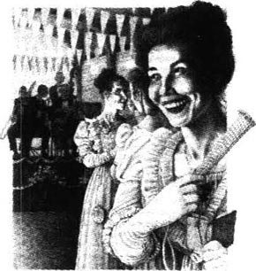
接着传来了“传过去，传过去！”的说话声。盛着节目单的篮子在人们手中传递着。传过来的是小巧精致的粉色和银色相间的节目单，还带有粉色的小铅笔。利拉拿了一份，她的手指在瑟瑟发抖。她很想问一声：“我也得拿一份吗？”这时梅格叫道：“好了吗，利拉？”她们挤过人群，朝舞会大厅的大门走去。
乐队寂静无声地等着演奏，可房间里却是人声鼎沸，洋溢着欢声笑语。利拉觉得连天花板上挂的小彩旗都在私语。她忘记了羞涩，忘记了那天一大早，她坐在床上只穿好了一只鞋，恳求妈妈给表哥和表姐们打电话说她不去参加舞会的情景。她曾有过的那种想要回家，想要回到乡下那幽暗偏远的房子里的感觉突然完全变成了一种喜悦之情，她很高兴能到这里来参加舞会。
望着流光溢彩的金色地板、花、彩灯，铺着红地毯、摆着金色椅子的舞台，准备演奏的乐队，她暗自思忖：“多美啊！真是太美了！”
女孩子们都站在门的一侧，男士们则站在另一侧。那些上了年纪的身着黑装的女士们，小心翼翼地迈着碎步走过亮晶晶的地板，朝舞台走去。
“这是我乡下来的小表妹利拉，你们可要好好关照她，帮她找舞伴。她可是我要照顾的对象啊。”梅格告诉所有的女孩子说。
一张张陌生的面孔都对着利拉甜甜地微笑。一个个陌生的声音都答应道：“当然会啦，亲爱的。”但是利拉明白这些女孩子们并没有真的在看她，她们的目光都在男人们身上。他们怎么还不开始？还等什么呢？他们站在那儿一句话也不说，只是暗自微笑。突然间他们朝姑娘们走来，简直就像是从金色的地板上朝她们飞来。
一个金发的高个小伙子朝梅格飞奔过来，拿起她的节目单，在上面写了些什么。梅格把他推到利拉身边。“能有幸同你跳舞吗？”他在她的节目单上也写了点儿什么，冲她笑了笑，继续往前走。随后，一个黑人小伙子向利拉走过来。紧接着，表哥劳里和他的一个朋友也过来了。这以后，一个年岁较大的男人——一个秃顶的胖男人——拿起她的节目单说：“让我看看，让我看看！”他看看自己那张黑压压写满了名字的节目单，又看了看利拉的。他好像在很费力地找一支没有安排上的可以和利拉一起跳的舞曲，利拉都觉得不好意思了。
“哦，请别费心了！”她恳切地说。
但是这个胖子还是在她的节目单上写了些什么，然后看了看她。“我还记得这张漂亮的小脸吗？”他柔声说，“我以前见过吗？”
就在那时，乐队开始演奏了，那个胖子也随之不见了踪影。音乐的浪潮在光亮的地板上流淌，把人们分成两人一对，冲到房间的各个角落，那个胖子被这音乐的浪潮卷走了。
利拉在学校的时候学过跳舞。每逢星期六下午，姑娘们就会被带到一个小厅里，在那里由（来自伦敦的）埃克尔丝小姐给她们上“高质量”的舞蹈课。那个简陋的小厅——一个老妇人在“砰砰”地敲击着钢琴，埃克尔丝小姐朝她们大吼着，叫她们把脚抬高——那里同这个充满了音乐和金黄色灯光的美妙地方相比简直有天壤之别。这差别太大了，利拉觉得她再不赶快跳舞的话，肯定会死去的。
“我想该我们俩跳了。”有人微笑着向她伸出了手。她终于不必去死了。她轻快地走了过去，就像一朵顺着溪水漂流的花。
“地板真不错，是吧？”那人贴近她的耳边说。
“这地板真是光滑极了。”利拉说。
“对不起，你说什么？”那声音听起来有些吃惊。利拉又说了一遍。片刻缄默之后，那人回应道：“哦，是很滑。”他们继续跳着。
他跳得好极了。利拉判定这就是跟男舞伴跳舞和跟女舞伴跳舞的巨大差别。跟女舞伴跳舞，她们总会撞到你，踩你的脚。
花已不再是花了；它们变成了飞舞着的粉白相间的彩旗。
“上星期你去参加贝尔家的舞会了吗？”那个人又问。他的声音听起来有些疲惫。利拉不知道她是否应该问他需不需要停下来休息。
“没有，这是我第一次参加舞会。”她说。
他微微笑了一下：“哦，是吗！”
“是的，我真的是第一次来参加舞会。”利拉觉得很激动，自顾自地讲道：“你要知道，我一直生活在乡下……”
这时音乐停了，他们找位子坐了下来。利拉的舞伴话不多。他伸开双腿，手里摆弄着外衣上的扣子，两眼朝四下里张望着。可这并没有什么关系。乐队又开始奏乐了，她的第二个舞伴不知道从什么地方钻了出来。
“地板还不赖，”新舞伴说，“上星期二你去参加尼夫家的舞会了吗？”
利拉又解释了一遍说这是她第一次参加舞会。奇怪的是，她的舞伴好像对舞会并不是很感兴趣。这是多么令人激动的舞会啊！她的第一次舞会！她的一切都才刚刚开始。
“想吃冰淇淋吗？”舞伴问她。两人穿过房门，沿着走廊向晚餐厅走去。利拉的脸发烫，口渴得要命。盛在小玻璃盘上的冰淇淋看上去是那么香甜，勺子也凉凉的，舒服极了！
当他们返回舞厅时，那个胖子正在门口等她。看到他那么老，利拉着实吃了一惊；他应该在舞台上跟那些当了爸爸妈妈的人在一起。利拉拿他跟她的其他舞伴相比，觉得他的衣服也显得破旧，而且不怎么干净。
“过来呀，小姑娘。”胖子说。他只是松松地揽着她，两人缓缓地移动着，与其说是在跳舞，不如说是在散步。可他却只字未提地板。“第一次来跳舞，是吗？”他问。
“你是怎么知道的？”
“哦，”胖子说，“上了年纪就会这样的！你要知道，我参加这样的舞会都有30年了。”
“30年！”利拉叫了一声。她出生前12年他就已经参加这样的舞会了！
“想想都觉得可怕，对吗？”胖子哀伤地说。利拉望着他的秃头，为他深感难过。
“你的舞跳得还是这么好，我觉得真是了不起。”她好心地说。
“好心的小姑娘，”胖子说着把她搂得稍微紧了些，“当然，”他说，“你不会总这样下去的。哦，不会的，”胖子说，“远不到我这般年龄，你就会穿着漂亮的黑衣服坐在舞台上看别人跳舞了。这纤美的臂膀也将会变得粗短肥胖。”想到这儿，胖子难过地摇了摇头，“你会像坐在那边的那些可怜的老太太那样微笑着，指着你的女儿，告诉身旁的老太婆说某个可恶的男人如何想在舞会上吻她。你那可怜的心会感到一阵阵疼痛”——他把她搂得更紧了，想要表明他为那颗可怜的心感到有多么难过——“因为没有人想吻你了。你会抱怨这光滑的地板是多么可怕，走在上面有多么危险。对不对，小姑娘？”胖子轻声说。
利拉淡然一笑，可其实她并不想笑。这是真的吗——这一切会是真的吗？难道她的第一次舞会就是她最后一次舞会的开始吗？音乐似乎也变了调，变得那么凄切，那么悲哀。哦，事物真是瞬息万变啊！幸福为什么不能永存呢？即使是永恒也不算太长啊！
“我不想跳了。”她气喘吁吁地说。胖子领着她走到门口。
“不，”她说，“我不想出去。”
她靠着墙边站着，想笑一笑。但在内心深处，有一个小女孩儿扑倒在床上突然大哭起来。他为什么要毁了这一切呢？
“我说，你呀，”胖子说，“你可别把我的话当真，小姑娘。”
“我才不会呢！”利拉咬着嘴唇说。
更多的人站起来跳舞了。乐队准备演奏下一支曲子了。可是利拉不想再跳了。她想回家，想在家透过卧室的窗户看星星。
可这时又响起了美妙的音乐，一个小伙子过来请她跳舞。她决定先跟他跳舞，然后一找到梅格她就走。她步伐僵硬地走到舞池中间。但一眨眼的工夫，她的脚步便飞舞起来。灯、花朵、衣服、粉红的脸庞，这一切都变成了一只美丽的飞轮。当她的又一个舞伴把她撞到胖子身上时，她只是快乐地朝他微笑着。她甚至都没有认出他来。
The woman at the store
The woman at the store
All that day the heat was terrible. The wind blew close to the ground, lifting the white dust from the road and driving it into our faces. The horses moved wearily, half-blinded by the dust. The pack-horse was sick—with a big sore place on her back. She kept stopping, looking too tired to go on. Hundreds of birds screamed high overhead. There was nothing to see except mile after mile of coarse grass, with the occasional purple flower or grey-green bush.
Jo rode ahead. He wore a blue shirt and a white handkerchief round his neck, with a red pattern that looked like bloodstains on it. For once, he was not singing,
'I don't care, for don't you see,
My wife's mother was in front of me!'
He had sung it every day for a month; now we felt lost without it.
Jim rode beside me, white-faced. He kept licking his dry lips. We had not spoken much since dawn.
'My stomach needs some real food inside it,' said Jo. 'Now, Jim, where's this store you keep talking about? You say you know a fine store with a paddock for the horses, and a creek, and a friend of yours waiting there with a bottle of whisky to share. I'd like to see that place, I really would...'
Jim laughed. 'Don't forget, Jo, there's a woman, too, with blue eyes and yellow hair, and something else to share with you. Don't forget that!'
'The heat's making you crazy,' said Jo. We rode on. I fell half asleep, and dreamed that I was back home with my mother. I woke up to find that we were arriving somewhere.
We were on a hill, and below us there was a building with an iron roof. It stood in a garden; there was a paddock, a creek and some trees. Smoke rose from the chimney, and as I looked, a woman came out, followed by a child and a yellow sheep dog.
The horses found a final burst of speed, and Jo began singing, 'I don't care, for don't you see...'
The sun came through the clouds and shone on the woman's yellow hair and on the gun she was carrying. The child hid behind her, as we got off our horses, and the yellow dog ran into the building.
'Hallo!' screamed the woman. 'The kid said there were three brown things coming over the hill. I ran out quick, I can tell you, to see what it was.'
'Where's your old man?' asked Jim.
The woman looked away, frowning. 'Gone shearing. Been away a month. You going to stop here? There's a storm coming.'
'Of course we are,' said Jo. 'So you're on your own, are you?'
She stood, looking from one to the other of us, like a hungry bird. I smiled to myself at the way the men had joked about her. Certainly she had blue eyes and yellow hair, but she was so ugly! Her hands were rough and red, and her stick-like legs were pushed into a pair of dirty old boots.
'I'll put the horses in the paddock,' said Jim. 'Got any horse medicine? One of them's got a sore back.'
'Wait a second.' The woman breathed deeply. Then she shouted violently, 'You can't stop here! You've got to go. I've got nothing for you! '
'God help us!' said Jo heavily. He pulled me to one side. 'Gone crazy,' he said. 'On her own too much, if you know what I mean. Show some sympathy, and she'll change her mind.'
But there was no need for sympathy. She changed her mind anyway. 'Stay if you like,' she said. Then she turned to me. 'Come on—I'll give you the medicine for the horse.'
We went up the garden path. The yellow dog lay across the door, and she kicked it out of the way.
'The place isn't tidy. Had no time.Been ironing. Come in.'
It was a large room. The walls were covered in pictures cut from magazines. There was a table, some broken chairs, a pile of clothes she had been ironing. A door led into the store; through another door I saw the bedroom.
She left me there and went into the store for the medicine. I could hear her talking to herself. 'Now where did I put that bottle?' Down in the paddock Jo was singing, while Jim put up the tent. The sun was going down. There are no long evenings in our New Zealand days; the sun goes down and half an hour later it's night.
Sitting alone in that ugly room, I felt afraid. The woman was a long time. What was she doing in there? 'What a life!' I thought. 'Imagine living here all alone with that child and that dog. Mad? Of course she's mad! I wonder how long she's been here—I wonder if she'll talk to me.'
'What was it you wanted?' she shouted from the store.
'Some medicine for the horse.'
'Oh, I forgot what I was looking for. I've got it now.'
She came out and gave me a bottle.
'My, you look tired, you do. Shall I make you a few scones for supper? I've got some meat you can have, too.'
'All right.' I smiled at her. 'Bring the kid down to the paddock and eat with us.'
'Oh, no,' she said, shaking her head. 'I'll send the kid down with the food and some milk. Want some scones to take with you tomorrow?'
'Thanks.'
She came and stood by the door.
'How old is the kid?' I asked.
'Six next Christmas.Had a lot of trouble with her. Always sick when she was a baby, she was.'
'She doesn't look much like you. Is she like her father?' I asked.
'No!' she shouted. 'She's like me. Any fool could see that!'
I went down to the paddock and gave Jim the medicine for the sick horse. Jo had washed. He was combing his wet hair, smiling to himself.
I went to the end of the paddock, past the trees, and washed in the creek. The water was clear and soft as oil. I lay in the water and looked up at the trees. The air smelled of rain.
When I got back to the tent, Jim was lying by the fire. I asked him where Jo was.
'Didn't you see how he'd cleaned himself up?' said Jim. 'He said to me before he went off to find her, "She isn't much, but she's a woman. She'll look good enough in the dark!"'
'You told us she was pretty,' I said. 'That wasn't exactly true!'
'No, listen,' Jim said. 'I don't understand what's happened to her. I haven't been here for four years. I used to know the husband well. A fine, big fellow. And she worked in bars on the West Coast—she was as pretty as a doll. Told me once she knew a hundred and twenty-five different ways of kissing!'
'Oh, Jim, she can't be the same woman!'
'Of course she is. I can't understand it. I think the old man's gone off and left her. That's just a lie about shearing!'
Through the dark we saw the kid coming towards us with a basket of food and some milk. I took them from her.
'Come here,' Jim said to her.
She went to him. She was a tiny, thin kid, with white hair and weak, pale blue eyes.
'What do you do all day?' asked Jim.
She stuck one finger in her ear. 'Draw.'
'What do you draw? Leave your ear alone!'
'Pictures.'
'What of? Cows and sheep?'
'Everything. I'll draw you when you're gone, and your horses and the tent, and that one' —she pointed at me— 'with no clothes on in the creek. I saw her but she couldn't see me.'
'Thanks a lot. How nice of you,' said Jim. 'Where's your Dad?'
'I won't tell you,' the kid said. 'I don't like your face.' She stuck a finger in the other ear.
'Here,' I said. 'Take the basket and go and tell the other man that supper's ready.'
She ran off and we started eating. We had finished before Jo arrived. He was very red-faced and cheerful, and he had a whisky bottle in his hand.
'Have a drink, you two,' he shouted. 'She wants us all to go and drink with her tonight.' He waved one hand in the air. 'We're good friends, her and me.'
'I can believe that!' laughed Jim. 'But did she tell you where her old man's gone?'
Jo looked up. 'Shearing,' he said. 'You heard her, you fool.'
* * *
The woman had tidied the room. She had even put flowers on the table, beside the oil lamp, the glasses and the whisky bottle. The kid was drawing on a piece of wrapping paper.
The woman's hair hung loose. Her face was pink and her eyes shone. She sat with her feet touching Jo's under the table. In the hot room, with insects flying round the lamp, we all got slowly drunk.
The woman was shouting. 'Six years I've been here,' she told us, 'and it's broken me, living here. I told him, it's broken me, taken away everything I had. Left me with this kid and nothing else. Trouble is,' she went on, 'he left me alone too much. He'd go off for weeks, leave me all alone here. He'd never stay long.'
'Ma,' said the kid, 'I drew a picture of them on the hill, and you and me and the dog.'
'Shut your mouth!' shouted the woman.
Suddenly there was lightning, followed by the crash of thunder.
'Good thing the storm's come,' said Jo. 'I've been feeling it in the air for days.'
'Where's your old man now?' asked Jim slowly.
Her head dropped forward onto the table. 'He's gone shearing and left me all alone again,' she cried.
'Watch the glasses,' said Jo. 'Come on, have another drink. No use crying about it.'
She dried her eyes and took the glass. 'It's a lonely life for a woman,' she said. Jo took her hand.
Every minute the lightning grew brighter and the thunder sounded nearer. I got up and went over to the kid, who immediately hid her drawings by sitting on them. 'You're not to look,' she said.
'Oh, come on, show us.' Jim came over to us, and we were just drunk enough to joke and laugh the kid into showing us the pictures. They were extraordinary drawings for a child to do—clever, but very nasty. No doubt about it, the kid's mind was diseased. While we looked at the pictures, she got madly excited, laughing and trembling all over.
'Ma!' she screamed. 'Now I'm going to draw what you told me I must never draw—now I'm going to!'
The woman rushed at her and hit her on the head.
'You'll get worse than that if you dare say that again!' she shouted.
Jo was too drunk to notice, but Jim caught the woman by the arm. The kid did not make a sound.
We listened to the thunder. Then the rain began to fall, hitting the iron roof like bullets.
'You'd better sleep here, not in the tent,' said the woman.
'Good idea,' said Jo quickly.
'Go and get your things from the tent. You two can sleep in the store with the kid. Mr Jo can have this room.'
It sounded a crazy arrangement, but nobody said anything. Jim and I took a lantern and went down to the tent. We ran through the rain, laughing and shouting like two children who are having a wonderful adventure.
When we came back, the kid was already in the store, lying on a blanket. Jo shouted, 'Good night, all!' We took a lamp and closed the door of the store.
Jim and I sat down on two packing cases. We looked around at the bags of potatoes, the smoked meats hanging from the ceiling, the advertisements for coffee on the walls—and couldn't stop laughing. The kid sat up and stared at us. We took no notice of her.
'What are you laughing at?' she said uneasily.
'You!' shouted Jim. 'You, and this whole place, my child.'
She screamed with anger and beat herself with her hands. 'I won't be laughed at, I won't!'
'Go to sleep, Miss, or do some drawing,' said Jim. 'Look, here's a pencil and a bit of paper.'
Through the noise of the rain we heard Jo's footsteps in the next room, then the sound of a door opening and closing.
'It's a lonely life for a woman,' whispered Jim.
'A hundred and twenty-five different ways!'
The kid threw the piece of paper at me. 'There you are,' she said. 'I've done it because Ma shut me in here with you two. The thing she said I never ought to draw. I drew the one she said she'd shoot me if I did. I don't care! I don't care!'
The kid had drawn a picture of the woman shooting a man and then digging a hole to bury him in.
She threw herself to the floor, and rolled around, biting her fingers.
Jim and I sat until dawn with the drawing beside us. The rain stopped, and the little kid fell asleep, breathing loudly. We got up and went down to the paddock. A cold wind was blowing—the air smelled of wet grass. Just as we got on to the horses, Jo came out of the building—he waved to us to ride on.
'I'll catch you up later!' he shouted.
A bend in the road, and the whole place disappeared.
sore adj. painful or aching from a wound, infection, or (of muscles) hard use. （因受伤、感染或〈肌肉〉激烈运动而产生的）疼痛的。
pattern n. arrangement of lines, shapes, colours, etc., esp. as decorative design on clothes, carpets, wallpaper, etc. 图案，花样，式样（尤指衣物、地毯、壁纸等的）。
paddock n. small field where horses are kept or exercised. （放牧和驯马用的）小围场。
shear v. cut the wool off (a sheep) with shears. 剪（羊的）毛。
tent n. shelter or dwelling made of canvas, etc. supported by poles and ropes attached to pegs driven into ground. 帐篷。
scone n. soft flat cake of wheat flour or barley meal baked quickly. 烤饼（用小麦面或大麦面快速烘烤的）。
clean oneself up wash oneself. 把身体洗干净。
point at aim or direct at sth. （以某事物）瞄准或对着。
wrapping paper strong or decorative paper for wrapping parcels or presents. （结实的或装饰性的）包装纸。
extraordinary adj. beyond what is ordinary; very unusual; remarkable. 不平常的；非常的；格外的。
adventure n. unusual, exciting or dangerous experience or undertaking. 不寻常的、有刺激性的或危险的经历或工作；奇遇；冒险。
take no notice of pay no attention to. 不注意；不理会。
bury v. place (a dead body) in a grave or in the sea. 将（尸体）土葬或海葬。
roll v. (cause sth. to) move on wheels or rollers or by turning (over and ver). （使某物）滚动。
catch up reach (and sometimes overtake) sb. who is ahead (e.g. in a race); reach the same stage as sb. 赶上（有时超过）某人；达到与某人相同的境界。
女店主
女店主
那天从早到晚一直酷热难熬。热风贴着地面袭来，吹起路上的白色浮灰，朝我们迎面扑来。我们的马疲惫地往前走着，它们的眼睛被灰尘迷住都快看不见了。那匹驮马病了——她背上有一大片地方在发炎。她走几步就得停一停，看起来实在是太疲倦，无法继续行进了。数百只鸟在我们头顶上方的高空中尖声鸣叫。放眼望去，目之所及只有一望无际的杂草，草丛中零星点缀着紫色的花或是灰绿色的灌木。
乔骑马走在前面。他穿着件蓝色的衬衫，脖子上围着块白围巾，围巾上红色的图案看上去像是斑斑血迹。这一次他居然没唱那首歌：
“我不在乎，难道你没看见吗，
我的丈母娘就在我前面！”
这一个月来，他每天都在唱这首歌；现在他不唱了，我们倒觉得有些不知所措。
吉姆和我并肩而行，他脸色苍白，舌头不停地舔着干裂的嘴唇。从拂晓开始，我们就没怎么说话。
“我的肚子需要填点儿实实在在的东西。”乔说，“对了，吉姆，你老是挂在嘴边的那家小店在哪儿呢？你说你知道一家不错的小店，那里有遛马的围场，有一条小溪，还有一位拿着一瓶威士忌等你去共饮的朋友。我想见到这个地方，我真想……”
吉姆笑了起来。“别忘了，乔，还有个金发碧眼的女人呢，她有别的东西要跟你分享呢。可别忘了这个呀！”
“我看你是热疯了。”乔说道。我们继续前行。我半睡半醒，梦见自己回到了家中，和母亲在一起。我醒来时，发现我们到了一个地方。
我们爬到了一座山上，山下有一幢铁皮屋顶的房子。房子坐落在一个园子里；这里有围场、有小溪、还有树木，烟囱里冒着烟。我正看着，只见一个女人出来了，身后跟着个小孩儿和一条黄色的牧羊犬。
我们的马进行最后的冲刺，乔又开始唱起来：“我不在乎，难道你没看见吗……”
太阳穿过云层，阳光照在那个女人金色的头发和手里握的枪上。我们下马的时候，小孩儿躲在她身后，那条黄狗跑进了屋里。
“喂！”那女人尖声叫道，“我家孩子说三个棕色的东西翻山过来了。我不妨告诉你们，我这么快跑出来就是为了看看是什么东西。”
“你家老头子呢？”吉姆问道。
女人转过脸去，皱起了眉头。“剪羊毛去了。都走了一个月了。你们要在这儿歇脚吗？暴风雨就要来了。”
“当然。”乔说，“就你一个人在家，对吗？”
她像是一只饥饿的鸟一般站在那里，逐个打量着我们。想到那两个男人拿这个女人开玩笑的样子，我不禁暗自窃笑。她的确长着一双蓝眼睛和一头金发，但她实在是太丑了！她的手又粗又红，棍子一样的双腿塞在一双又脏又旧的靴子里。
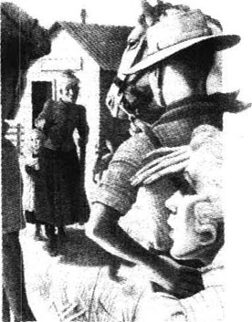
“我去围场遛遛马，”吉姆说，“有治疗马伤的药吗？有一匹马的背部发炎了。”
“等一下。”女人深深地吸了口气。然后她怒气冲冲地大叫起来，“你们不能待在这儿！你们得给我走！别想从我这儿得到什么！”
“我的上帝！”乔沉重地说。他把我拉到一边。“发疯了，”他说，“太孤独了，明白我的意思吗？对她表示些怜惜之情，她就会改变主意的。”
可是没必要这样做了。反正她已经改了主意。“你们愿意住就住吧。”她说。她又对我说：“来吧——我给你治马伤的药。”
我们沿着园子里的路向前走去。那条黄狗横卧在门口，她走过去一脚把它踢开。
“这里很乱，没空收拾，我一直在熨衣服呢。进来吧。”
房间很大。墙上糊着从杂志上剪下来的画页，屋里有张桌子，几把破椅子，还有一摞她熨烫的衣服。有一扇门通往店铺；透过另一扇门能看见里面的卧室。
她把我一个人留在那儿，自己进店铺找药去了。我听见她在自言自语：“我把瓶子放在哪儿了？”在围场那边，乔在唱歌，而吉姆在搭帐篷。太阳落山了。在新西兰，黄昏是很短暂的，太阳落山半个小时后就是夜晚了。
孤零零一人坐在这个丑陋的房间里，我感觉有些害怕。那女人去了很久了。她究竟在那儿干什么呢？“这过的是什么日子啊！”我寻思道，“想想看，独自生活在这里，只有那个孩子和那条狗和她做伴。疯了？她一定是疯了！真不知道她在这里住了多久了——也不知道她会不会和我聊聊。”
“你要的是什么东西？”她在店铺里大声问道。
“治马伤的药。”
“哦，我忘了要找什么东西了。现在找到了。”
她出来给了我一个瓶子。
“天啊，瞧你累的，你肯定是累了。要不要我给你们烤几个饼当晚饭？我这里还有些肉你们也可以吃。”
“好的，”我冲她笑笑，“把孩子也带到围场来，我们一起吃饭吧。”
“哦，不啦，”她摇着头说，“我让孩子给你们送点儿吃的东西和牛奶。明天走的时候想不想带上些烤饼？”
“多谢了。”
她过来站在门边。
“孩子多大了？”我问。
“到圣诞节满六岁。老是生病。一丁点儿大的时候就整天生病。”
“她长得不怎么像你，是像她爸吧？”我又问道。
“不！”她叫嚷起来，“她像我，这连傻瓜都看得出！”
我走到围场，把治疗那匹病马的药给了吉姆。乔已经洗过了。他面带微笑，正在梳理湿漉漉的头发。
我走到围场尽头，经过树林到小溪里洗澡。溪水清澈见底，润滑如油。我躺在水中，仰望着那些树木。空气中可以闻到山雨欲来的味道。
当我回到帐篷时，吉姆正在火堆旁边躺着。我问他乔去哪儿了。
“你没看见他把自己洗得干干净净吗？”吉姆说，“他去找她之前还对我说：‘她是不怎么样，可她是个女人呀。在黑暗中看起来就会好多了！’”
“你告诉我们说她长得漂亮，”我说，“可实际上却不是那么回事！”
“不是这样的，听我说，”吉姆说，“我也弄不清楚她到底怎么搞的。我有四年没来这儿了。我以前跟她丈夫很熟，她丈夫是个好人，身材魁梧。她以前在西海岸的酒吧工作——漂亮得像个洋娃娃。有一次她还告诉我说她知道125种不同的接吻方式呢！”
“噢，吉姆，她不可能是那个女人！”
“肯定是的。我也弄不明白。我想她老头子可能是离家出走弃她而去了。说什么剪羊毛去了，那是在撒谎！”
透过夜幕我们看到那孩子拿着一篮食物，还有牛奶正朝我们走来。我从她手中把东西接过来。
“过来。”吉姆对她说。
她走到他身边。她是个瘦弱的孩子，头发灰白，淡蓝色的眼睛无精打采。
“你整天都在做什么？”吉姆问道。
她把一根手指头伸到耳朵里说：“画画。”
“你画些什么呢？别摆弄你的耳朵了！”
“图画。”
“什么图画？是牛和羊吗？”
“什么都有。你们走以后我会把你们都画下来，还有你们的马、你们的帐篷，还有那个人——”她指指我——“光着身子待在河里。我看见她了，可她看不见我。”
“多谢了，你可真是太好了。”吉姆说，“你爸爸去哪儿了？”
“我才不告诉你呢，”那孩子说，“我不喜欢你那张脸。”她又把手指头伸到了另一只耳朵里。
“喂，”我说，“拿上这个篮子回去，告诉我们中的另外一个人，就说晚饭准备好了。”
她跑开了，我们开始吃晚饭。我们都吃完了，乔才回来。他满脸通红、兴高采烈，手里还拿着一个威士忌酒瓶。
“你们两个，来喝一杯。”他大声叫道，“她叫我们今天晚上都过去和她喝酒。”他的一只手在空中比划着，“我们成好朋友了，我和她。”
“这我相信！”吉姆笑着说，“可是她告诉你她老头子去哪儿了吗？”
乔抬头望望。“剪羊毛去了呗，”他说，“你们都听到了呀，真是傻瓜。”
* * *
那女人已经把房间收拾好了，她还在桌上放了些花，花的旁边点着油灯，还摆着玻璃杯和威士忌酒瓶。孩子正在一张包装纸上画画。
那女人的头发松松地垂着，她的面色红润，双眼奕奕闪光。她坐在那儿，脚在桌子底下碰着乔的脚。闷热的房间里，虫子绕着油灯飞舞，我们渐渐地都有了醉意。
那女人在大声喊叫。“我在这儿都六年了，”她告诉我们，“住在这儿把我给毁了。我对他说，我给毁了，我的一切都给夺走了。只给我留下个孩子，其他什么都没有了。我苦恼的是，”她接着说，“他老是把我一个人扔下。他一走就是几个星期，把我一个人孤零零地扔在这儿。他从来都不会待很长时间。”
“妈，”孩子说道，“我画了一张他们在山上的画，还有你、我和狗。”
“闭上你的嘴！”那女人叫道。
突然打起了闪，接着就是轰隆隆的雷声。
“太好了，暴风雨来了，”乔说，“这几天从空气里一直能感觉得到。”
“你老头子现在在哪儿？”吉姆慢吞吞地问。
她头向前趴到了桌子上。“他剪羊毛去了，又把我一个人扔下了。”她哭了起来。
“当心杯子。”乔说，“来，再来一杯。哭也没用。”
她擦干眼泪，拿起杯子。“这种生活对女人来说实在是太寂寞了。”她说。乔握住了她的手。
闪电越来越亮，雷声越来越近，一刻都没停。我站起来走到孩子跟前，她马上把画压到屁股底下，藏了起来。“不许看。”她说。
“哎哟，拿来，让我们看看。”吉姆也到我们这边来了。我们借着几分醉意逗着她让我们看了她画的画。这些画对于一个孩子来讲有些反常——运笔熟练，但是画面让人恶心。毫无疑问，这个孩子的脑子肯定有毛病。我们看她的画时，她兴奋得发狂，又是大笑，又是浑身发抖。
“妈！”她尖叫道，“现在我可要画那些你从来都不叫我画的东西了——现在我可要画了！”
那女人冲过去打她的头。
“你要是再敢这么说，小心比这还厉害！”她大吼道。
乔醉得什么也没觉察到，而吉姆却一把抓住了女人的胳膊。孩子一声没吭。
我们听着雷声。紧接着雨就下起来了，雨点像子弹一样击打着铁皮屋顶。
“你们最好睡在这儿，别睡帐篷了。”那女人说。
“好主意。”乔赶快应道。
“去把你们帐篷里的东西拿过来。你们两个和孩子一起睡在店里，乔先生睡这个房间。”
这个安排听起来太愚蠢了，可谁也没说什么。我和吉姆打着灯笼去帐篷那儿。我们俩在雨中奔跑，笑着、大叫着，就像两个正在进行一次奇妙冒险的孩子。
我们回来的时候，孩子已经躺在毯子上，被安置在店铺里了。乔叫道：“大家晚安！”我们接过灯，关上了店门。
我和吉姆坐在两个包装箱上，环顾着四周成袋的土瓦，天花板上挂着的熏肉，墙上贴着的咖啡广告——我们禁不住笑起来。孩子坐了起来，盯着我们看。我们没有去理会她。
“你们笑什么呢？”她不安地问。
“笑你呢！”吉姆高声说，“笑你，还有这整个地方，我的孩子。”
她生气地叫了起来，并用手打自己。“我不许你们笑话我，不许！”
“睡吧，小姐，要不你就画画，”吉姆说，“看，这里有枝铅笔，还有一小块纸。”
透过雨声，我们听到了乔在隔壁房间里的脚步声，接着我们听到了开门和关门的声响。
“这种生活对于女人来说实在是太寂寞了。”吉姆小声说。
“125种不同的方式！”
孩子朝我扔来一张纸。“给你，”她说，“我画这个是因为我妈把我同你们两个关在这里。我画的是她从来都不许我画的东西。她说要是我画了，她就毙了我，可我还是画下来了。我不在乎！我才不在乎呢！”
孩子画的是那个女人开枪打死了一个男人，然后挖坑去埋葬他。
她扑倒在地板上，咬着手指头在地上打滚。
我和吉姆伴着身边那幅画一直坐到天明。雨停了，孩子也睡着了，发出很响的呼吸声。我们起身朝围场走去。一阵冷风刮来——空气中散发着湿草的清香。正当我们翻身上马的时候，乔从房里走了出来——他挥手示意我们骑马赶路。“我回头追你们！”他喊道。转过一个弯，整个地方就不见了。
Millie
Millie
Millie stood and watched until the men disappeared from view. When they were far down the road, Willie Cox turned round on his horse and waved to her. But she didn't wave back. Not a bad young fellow, Willie Cox, but a bit too free and easy in his ways. Oh, my word! It was hot. Hot enough to fry your hair.
Millie put her hand up to keep the sun out of her eyes, and looked out over the dry, burnt paddocks. In the distance along the dusty road she could see the horses, like brown flies jumping up and down. It was half-past two in the afternoon. The sun hung in the pale blue sky like a burning mirror, and away beyond the paddocks the blue mountains trembled and jumped like the sea.
Sid wouldn't be back until half-past ten. He had ridden over to the town with four of the farm boys, to help find the young fellow who'd murdered Mr Williamson. Such a terrible thing! And Mrs Williamson left alone with all those kids. Strange! She couldn't believe that Mr Williamson was dead. He was such a joker. Always making people laugh.
Willie Cox said they'd found him in one of the farm buildings, shot bang through the head. The young English fellow who was with the Williamsons to learn about farming had disappeared. Strange! Why would anyone shoot Mr Williamson? He was so popular. My word! What would they do to that young man when they caught him? Well, you couldn't feel sorry for him. As Sid said, if they didn't hang him, he could just go out and kill someone else. There was blood all over the place. Willie Cox said he got such a shock when he saw it, that he picked a cigarette up out of the blood and smoked it. My word! He must have been half crazy.
Millie went back into the kitchen. Slowly, she washed the dinner plates. Then she went into the bedroom, stared at herself in the piece of mirror, and dried her hot, wet face with a towel. What was the matter with her that afternoon? She wanted to cry—about nothing! She decided to change her clothes and have a good cup of tea. Yes, that would help.
She sat on the side of the bed and stared at the coloured picture on the wall, Garden Party at Windsor Castle. In the middle of green lawns and shady trees sat Queen Victoria, with ladies in flowery dresses all around her. Behind them you could see the castle, with British flags flying from its towers. 'I wonder if it really looked like that.' Millie stared at the flowery ladies, who smiled coolly back at her. 'I wouldn't want their lives. Running round all day after the old Queen...'
On the table that Sid had made for her from packing cases, there was a photograph of her and Sid on their wedding day. Now that was a nice picture! She was sitting in a chair in her white dress, with Sid standing with one hand on her shoulder, looking at her flowers. Behind them there was a waterfall, and Mount Cook in the distance, covered with snow. She had almost forgotten her wedding day. Time passed so quickly, and with nobody to talk to...'I wonder why we never had kids... Well, I've never missed them. Perhaps Sid has, though. He's softer than me.'
Then she sat quiet, thinking of nothing at all, with her red hands on her knees. Tick-tick went the clock in the silent kitchen. Quite suddenly, Millie felt frightened. A strange trembling started inside her—in her stomach—and then spread all over to her knees and hands. 'There's somebody outside.'
She went softly into the kitchen. Nobody there. The back door was closed. She stopped and listened, and the furniture seemed to stretch and breathe... and listen, too. There it was again—something moving, outside. 'Go and see what it is, Millie Evans.'
She ran to the back door, opened it, and just saw somebody run and hide behind the wood pile. 'Who's there?' she called in a loud, brave voice, 'Come out! I seen you! I know who you are. I've got my gun.' She was not frightened any more. She was terribly angry. Her heart banged like a drum. 'I'll teach you to frighten a woman,' she shouted, and she took a gun and ran out of the house, over to the wood pile.
A young man lay there, on his stomach, with one arm across his face. 'Get up!' She kicked him in the shoulders. He didn't move. 'Oh, my God, I believe he's dead.' She knelt down and rolled him onto his back. She sat in the dust, staring at him; her lips trembled with horror.
He was not much more than a boy, with fair hair and a light beard on his chin. His eyes were closed, his face covered in dirt and dust. He wore a cotton shirt and trousers; there was blood on one of his trouser-legs.
'I can't,' said Millie, and then, 'You've got to.' She bent over and felt his heart. 'Wait a minute,' she whispered, 'wait a minute,' and she ran into the house for brandy and a bucket of water. 'What are you going to do, Millie Evans? Oh, I don't know. I never saw anyone unconscious before.' She knelt down, put her arm under the boy's head, and poured brandy between his lips. It ran out at the sides of his mouth. She took a cloth and washed his face and neck with the cool water. Under the dirt and dust, his face was as white as the cloth, thin, and marked by little lines.
A strange and terrible feeling took hold of Millie Evans. Deep inside her chest, it grew like a plant after rain, and burst painfully into leaf. 'Feeling better? All right, are you?' The boy breathed sharply, his eyes opened, and he moved his head from side to side. Millie touched his hair. 'Feeling fine now, aren't you?' The pain in her chest made her breathless. 'It's no good crying, Millie Evans. You've got to be sensible.' Suddenly he sat up and pulled away from her, staring at the ground. 'There, there,' cried Millie, in a strange, shaky voice.
The boy turned and looked at her, still not speaking. His eyes were so full of pain and terror that she had to shut her teeth together hard to stop herself crying. After a long pause he said, in the voice of a little child talking in his sleep, 'I'm hungry.' His lips trembled.
She stood up. 'Come on into the house and have a proper meal,' she said. 'Can you walk?'
'Yes,' he whispered, and followed her slowly to the door. Then he stopped. 'I'm not coming in,' he said. He sat down in the shade of the house.
Millie watched him. 'When did you last eat?' He shook his head. She went and put meat and bread and butter on a plate, but when she brought it to him, he was standing up, looking around. He did not take the plate of food she held out to him. 'When are they coming back?' he whispered.
At that moment she knew who he was. She stood there, holding the plate, staring. He was Harrison, the English fellow who'd killed Mr Williamson. 'I know who you are,' she said, very slowly, 'I must have been blind not to see it from the start.'
He made a movement with his hands, which seemed to say, 'That's all nothing.' Again, he asked, 'When are they coming back?'
And she meant to say, 'Any minute now. They're on their way now.' Instead, she said to the poor frightened face, 'Not until half-past ten.'
He sat down and closed his eyes. Tears ran down his face. Just a kid.And all those men after him. 'Try a bit of meat,' Millie said. 'It's what you need. Get some good food in your stomach.' She sat down beside him, with the plate of food on her knees. 'Here—try a bit.' She broke the bread and butter into little pieces, and she thought, 'They won't catch him. Not if I can stop them. Men are all rotten. I don't care what he's done or not done. Do what you can to help him, Millie Evans. He's only a sick kid.'
* * *
Millie lay on her back in bed, with her eyes open, listening. Sid turned over, pulled the sheet round him and said, 'Good night, old girl.' She heard Willie Cox and the other fellows drop their clothes on the kitchen floor, and then their voices, and Willie Cox saying, 'Lie down, lie down, you little devil,' to his dog.
The house grew quiet. She lay there and listened. It was hot. She was frightened to move, because of Sid. 'He must escape, he must. I don't care about the law and all that rubbish they've been talking about,' she thought angrily. She listened to the silence. He ought to be moving...
Before there was any sound from outside, Willie Cox's dog got up and went to the back door. A feeling of terror rose in Millie. 'What's that dog doing? What a fool that young fellow is with a dog here. Why doesn't he lie down and sleep?' The dog stopped, but she knew it was listening.
Suddenly, with a sound that made her cry out in horror, the dog started barking and rushing about. 'What's that? What's happening?' Sid got out of bed.
'It's nothing, it's only Willie's dog. Sid, Sid!' She took his arm, but he pushed her away.
'By God, there's something out there!' Sid quickly pulled his trousers on. Willie Cox opened the back door, and the dog rushed madly out of the house.
'Sid, there's someone in the paddock,' one of the men shouted.
'What is it—what's that?' said Sid. 'Here Millie, take the lantern. Willie! There's someone in with the horses!'
The men ran out of the house, and at the same moment, Millie saw Harrison rush across the paddock on Sid's horse and down the road.
'Millie, bring that lantern, quick!' She ran out in her nightdress to give it to him. They were away down the road in a second.
And as she watched Harrison in the distance, and the men rushing after him, a strange and crazy delight came to her, drowning all other feelings. She ran into the road—she laughed and screamed and danced in the dust, waving the lantern in the air.
'After him, after him, Sid! Catch him, Willie! Go on, go on! Shoot him down! Shoot him!'
in the distance far away. 在远方；在远处。
up and down backwards and forwards; to and fro. 上上下下；前前后后。
joker n. person who is fond of making jokes; foolish and irresponsible person. 爱开玩笑的人；愚蠢而不负责任的人。
flowery adj. (of language, gestures or decoration) too elaborate or ornate. （指语言、手势或装饰）矫揉造作的，过分修饰的，过分华丽的。
tick v. (of a clock, etc.) make a series of ticks. 滴答声（尤指钟表的）。
kneel down go down on one knee or both knees; rest on the knee(s). 单膝或双膝跪下；屈膝。
bucket n. round open container with a handle for carrying or holding liquids, sand, etc. （带提梁的）圆桶；提桶。
proper adj. that fits, belongs or is suitable; fitting or appropriate. 适合的；适用的；恰当的。
devil n. wicked spirit. 魔鬼；鬼怪。
bark v. (of dogs, etc.) give a bark or barks. （指狗等）吠叫。
By God. 绝对，一定。
米利耶
米利耶
米利耶站在那儿目送着那些男人从视野中消失。他们都走了很远了，威利·考克斯还从马背上转过身来向她挥手，但她却没有回应他。威利·考克斯是个不错的小伙子，但是他的行为举止有些过于随便。哎哟！天气真是太热了，简直要把人的头发烤焦了。
米利耶扬起手遮住阳光，朝那被太阳烤干的围场望去。在那条尘土飞扬的路的远处，她看到了马群，这些马就像是棕色的苍蝇一样上上下下地跳动着。现在是下午两点半。太阳仿佛一面燃烧着的镜子，悬挂在淡蓝色的天空中，过了围场，那蓝色的山脉像大海一般翻腾起伏。
锡德不到10点半是不会回来的。他和农场上的四个小伙子骑马进城去帮着寻找那个杀死威廉森先生的年轻人。这件事太可怕了！撇下威廉森太太一人带着他们的孩子们。真奇怪！她无法相信威廉森先生已经死了。他是个那么爱开玩笑的人，总能使大家哈哈大笑。
威利·考克斯说他们是在一个农舍发现他的，一枪正中脑袋。那个在威廉森家学习经营农场的英国小伙子不见了。奇怪！为什么会有人枪杀威廉森先生呢？他是那么受欢迎。天啊！他们抓住那个年轻人会怎么处置他呢？嗯，没有人会同情他的。正如锡德说的，如果不把他吊死的话，他还会去杀别人的。农舍里到处是血。威利·考克斯说他看到那场面时太震惊了，他竟然从血泊中捡起一枝香烟抽。天啊！他可能也快疯了。
米利耶回到厨房。她慢慢地洗完餐盘，然后走进卧室，凝视着镜中的自己，用毛巾把又烫又湿的脸擦干。她那天下午是怎么了？她就是想哭一场——没有任何原因！她决定换换衣服，然后美美地喝上一杯茶。对，这样做会有所帮助的。
她坐在床边，凝视着墙上那幅名为《温莎城堡游园会》的彩色图画。在绿色的草坪和树阴中央坐着维多利亚女王，一些衣着华丽的贵妇人围在她的周围。在她们身后，还能看见城堡，城堡的顶部飘舞着英国国旗。“我真想知道这一切是不是真的。”米利耶定定地看着那些如花似玉的贵妇人，她们在冷漠地微笑着回看她。“我才不想过她们那种生活呢。整天围着老女王转……”
在锡德用包装箱给她改做的桌子上，放着一张她和锡德的结婚照片。那真是一张不错的照片！她穿着白色婚纱坐在椅子上，锡德站在旁边，一只手搭在她的肩上，双眼注视着她手里的花儿。在他们身后有一条瀑布，远处是白雪覆盖的库克山。她差不多都把结婚那天的情形给忘了。时间过得太快了，也没有人可以聊聊……“我不知道为什么我们一直没有孩子……算了，我可从来没想要个孩子，但是锡德可能想要。他的性情比我温和。”
她静静地坐着，那双红红的手放在膝盖上，脑子里什么也没想。寂静的厨房里传来钟表的“滴答”声。突然间，米利耶觉得非常害怕。她的内心深处产生了一丝奇怪的震颤——就在肚子里——接着又传遍了四肢。“外面有人。”
她蹑手蹑脚地走进厨房，里面没人。后门也关得好好的。她停下来侧耳倾听，家具好像伸展着四肢，喘着气……也在侧耳倾听。又有响动了——有什么东西在移动，就在外面。“去看个究竟，米利耶·埃文斯。”
她跑到后门，把门打开，正好看到有个人跑到木头堆后面躲了起来。“谁在那儿？”她毫不畏惧地高声喊道，“出来！我看见你了！我知道你是谁。我拿着枪呢。”她不再恐惧了，只觉得怒不可遏。她的心像擂鼓似的“咚咚”地跳着。“我要教训教训你，叫你吓唬女人。”她大叫着，拿起枪，出了房子，朝木头堆跑去。
一个年轻人趴在那儿，脸压在一只手臂上。“起来！”她踢他的肩膀，可他一动不动。“噢，我的上帝，我想他已经死了。”她跪下去，把他翻过来。她坐在地上，盯着他看；吓得嘴唇直哆嗦。
他看上去只不过是个孩子，一头金黄的头发，下巴上长着淡淡的胡须。他双眼紧闭，脸上沾满泥土。他身穿棉布衬衫和棉布裤子，一条裤腿上沾着血迹。
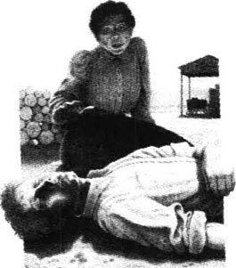
“我受不了，”米利耶说，接着又说，“你受不了也得受。”她弯下身，摸摸他的心口。“等一下，”她低声说，“等一下。”接着她跑到房里取来了白兰地和一桶水。“你要干什么，米利耶·埃文斯？哦，我也不知道。我以前从没见过不省人事的人。”她跪下来，用一只手臂托起那个男孩儿的头，往他的嘴里倒了点儿白兰地。酒顺着嘴边流了出来。她拿出一块布，蘸着凉水擦洗他的脸和脖子。除去泥土之后，他的脸色白得像布一样，瘦削的脸上已有了细小的皱纹。
米利耶·埃文斯被一种奇异而又恐怖的感觉控制了。在她的内心深处，这种感觉就像是雨后的幼苗那样生长着，痛苦地长出了叶子。“感觉好点儿了吗？好些了，对吗？”男孩儿急促地喘着气，睁开双眼，头摆来摆去的。米利耶抚摸着他的头发。“现在感觉好些了，是不是？”她内心的痛苦使她喘不过气来。“哭也没有用，米利耶·埃文斯。你得理智些。”他突然坐了起来，从她身边挪开，两眼盯着地面。“好啦，好啦。”米利耶用一种奇怪而又颤抖的声音叫了起来。
男孩儿转过来看着她，仍然一言不发。他的眼睛里充满了痛苦和恐惧，她不得不使劲咬紧牙关不让自己哭出来。过了好一会儿，他用小孩子梦呓般的声音说道：“我饿。”他的双唇颤抖着。
她站了起来。“到屋里去，好好吃一顿。”她说，“你能走路吗？”
“能。”他小声说，跟着她慢慢走到门口，停了下来。“我不进去了。”他说。他在房子的阴凉处坐了下来。
米利耶注视着他。“你上一顿饭是什么时候吃的？”他摇了摇头。她进去把肉和黄油面包放在盘子里，可等她把食物拿来的时候，他已经站了起来，朝四周张望着。他没去拿她递过来的食物。“他们什么时候回来？”他小声地问。
就在那一刻她知道了他的身份。她站在那儿，手里端着盘子，定定地看着他。他就是哈里森，那个杀害了威廉森先生的英国人。“我知道你是谁了，”她一字一顿地说，“一开始我竟然没看出来，我真是瞎了眼了。”
他摆了摆手，好像在说：“这一切都无所谓了。”他又问了一遍：“他们什么时候回来？”
她本打算说：“随时都有可能。他们现在已经在回来的路上了。”可是面对那张可怜而惊恐的脸，她改口说：“要到10点半。”
他坐下来，闭上了双眼。眼泪顺着他的脸颊淌了下来。他还只是个孩子，可是所有的男人都在追捕他。“吃点儿肉吧，”米利耶说，“你需要吃点儿肉，你得让肚子里有点儿东西。”她在他身旁坐了下来，把装食物的盘子放在膝盖上。“来——吃一点儿。”她把黄油面包掰成小块，心里琢磨着：“他们抓不住他的。要是我能阻止他们的话，他们就抓不住。男人们都很邪恶。我才不在乎他做没做什么事呢。尽你所能帮助他，米利耶·埃文斯。他只不过是个生病的孩子。”
* * *
米利耶仰卧在床上，睁着眼睛侧耳倾听。锡德翻了个身，把被子往身上拢了拢说：“晚安，老姑娘。”她听见威利·考克斯和其他小伙子把衣服扔到了厨房地板上，接着听到了他们说话的声音，又听到威利·考克斯对他的狗吆喝：“趴下，趴下，你这小鬼。”
房子里安静下来。她躺在那儿侧耳倾听。天气很热，可她一动都不敢动，生怕把锡德吵醒。“他一定得逃走，一定。我才不在乎什么法律，才不在乎他们谈论的那些废话呢。”她愤愤地想着。她仔细地听了听，什么声音都没有。他应该正在转移……
外面还没有任何声响，威利·考克斯的那条狗就已经爬起来蹿到后门那儿去了。恐惧在米利耶心中陡然而生。“那条狗在干什么？那个年轻人也真傻，知道这儿有条狗，为什么不躺下睡觉呢？”狗不动了，但是她知道它一定在听着。
突然间，那条狗狂吠着到处乱窜，发出的声响使她惊恐地大叫起来。“什么声音？出了什么事？”锡德从床上起来。
“没什么事，只是威利的狗在叫。锡德，锡德！”她抓住他的胳膊，可是他把她给甩开了。
“没错，外面肯定有事！”锡德赶快把裤子穿上。威利-考克斯把后门打开，那条狗疯了似地蹿了出去。
“锡德，围场里有人。”其中一人大喊。
“什么——怎么回事？”锡德问，“喂，米利耶，拿灯来。威利！马群这儿有人！”
男人们都从房中跑出来，就在这时，米利耶看到哈里森骑着锡德的马飞奔穿过围场，上了大路急驰而去。
“米利耶，把那盏灯拿过来，快呀！”她穿着睡衣跑出来把灯递给他。他们一转眼也上了大路，追了下去。
当她远远地看到哈里森，那些男人们在后面猛追的时候，一种奇怪的狂喜油然而生，盖过了其他一切感情。她跑到马路上——在尘土中大笑、大叫、乱跳，在空中挥舞着手中的灯。
“追上他，追上他，锡德！抓住他，威利！加油，加油！开枪打他！打他！”
The lady's maid
The lady's maid
Eleven o'clock. A knock at the door.
... I hope I haven't disturbed you, madam. You weren't asleep—were you? But I've just given my lady her tea, and there was a nice cup left, so I thought perhaps...
... Not at all, madam. I always make a cup of tea at this time. She drinks it in bed after she's said her prayers, to warm her up. I start to boil the water when she kneels down, and I always say to the water, 'Now, don't be ready too quick.' But it always boils long before my lady finishes her prayers. You see, madam, we know such a lot of people, and my lady has to mention all their names in her prayers—everyone. She keeps all their names in a little red book. Oh dear! Whenever we have a new visitor, and my lady says after they've gone, 'Ellen, bring me my little red book,' I feel quite wild, I really do.
And do you know, madam, she kneels right down on the hard carpet. It makes me worried sick to see it, knowing her the way I do. I've tried putting a soft woollen blanket down. But the first time I did it she gave me such a look—such a sweet, suffering look it was, madam. 'Did our Lord Jesus have soft woollen blankets, Ellen?' she said. But—I was younger then—I wanted to say, 'No, but our Lord Jesus wasn't as old as you, and He didn't have your poor bad back!' Terrible of me, wasn't it? But she's too good, you know, madam. When I went in to see if she was all right just now, and saw her lying there asleep—so pretty—I couldn't help thinking, 'Now you look just like your dear mother on her deathbed.'
... Yes, madam, I took care of everything after the death. Oh, she did look sweet. I did her hair—ever so soft and pretty it was—and I put the most lovely flowers all round her head. She looked a picture! I shall never forget those flowers.
... Only the last year, madam. She came to live with us after she became a bit—well—forgetful, as they say. Of course, she was never dangerous; she was the sweetest old lady. But what happened was—she thought she'd lost something. She couldn't sit still. All day long she used to search the house, up and down, up and down. When she saw me, she'd say, 'I've lost it; I've lost it,' just like a child. And I'd say, 'Come along and we'll have a nice game of cards.' But she'd take my hand—I was a favourite of hers—and whisper, 'Find it for me, Ellen. Find it for me.' Sad, wasn't it?
... No, she never got any better, madam. The last thing she ever said was—very slow, 'Look in—the—Look—in—' And then she was gone.
... No, madam, I never noticed it. Perhaps some girls. But you see, it's like this. I've got nobody but my lady. My mother died when I was four, and I lived with my grandfather, who had a hairdresser's shop. I used to sit under a table in the shop, brushing my doll's hair. I suppose I was copying the assistants. They were really kind to me. I used to sit there all day, as quiet as can be—the customers never knew I was there.
... But one day I managed to get a pair of scissors, and—would you believe it, madam? —I cut off all my hair! What a little monkey! Grandfather went mad, he was so angry. He picked up the red-hot curling tongs—I shall never forget it—caught hold of my hand and shut my fingers in the tongs. 'That'll teach you!' he said. It was an awful burn. You can still see the mark.
... Well, you see, madam, he'd been so proud of my hair. He used to sit me in a high chair, before the customers came, and give me such a beautiful hair-do. I remember the assistants all standing and watching. Grandfather used to give me a penny to sit still for him. But he always took it back afterwards. Poor Grandfather!
When he burned my hand, I was so frightened! Do you know what I did, madam? I ran away. Yes, I did, right down the street and round the corner. Oh dear, I must have looked funny, with my hand rolled up in my skirt and my hair sticking out all over my head. People must have laughed when they saw me...
... No, madam, Grandfather never forgave me. He couldn't even eat his dinner if I was in the room. So my aunt gave me a home. She was a dress-maker. Tiny little woman, she was. She had to stand on a chair to measure some of her ladies. And it was when I was helping her that I met my lady...
... Not so very young, madam. I was already thirteen. And I don't remember ever feeling I was—well—a child. You see, there was my uniform and one thing and another. My lady insisted on my wearing a proper uniform from the start.
... Oh yes—once I felt like a child! That was—funny! It was like this. My lady had her two little nieces staying with her, and there was a fair in a park nearby. 'Now, Ellen,' she said, 'I want you to take the two young ladies for a ride on the donkeys.'
Off we went. Quiet little girls, they were. They both held my hand. But when we came to the donkeys, they were too shy to go for a ride. So we stood and watched. Those donkeys were so beautiful! They were a lovely silver-grey colour and they had little red saddles and bells on their ears. And quite big girls—older than me—were riding them. And they looked so nice, just enjoying themselves. I don't know why, but when I saw those donkeys, with their little feet and their eyes—so gentle—and their big soft ears—well, I wanted more than anything in the world to ride on a donkey's back!
... Of course, I couldn't. I had to look after my young ladies. But all the rest of the day I thought about those donkeys. I had nothing but donkeys on my mind. I felt I would burst if I didn't tell someone; and there was no one to tell. But when I went to bed—I was sleeping in cook's bedroom at the time—as soon as the lights were out, I could see them again. My donkeys, with their neat little feet and sad eyes.
Well, madam, would you believe it, I waited for a long time and pretended to be asleep, and then I suddenly sat up and said, as loud as I could, 'I want to ride on a donkey. I want a donkeyride!' You see, I had to say it, so I pretended I was talking in my sleep. That's just what a silly child would do, isn't it?
... No, madam, never now. Of course, I wanted to when I was younger. But I never did. He had a little flower-shop. Funny, wasn't it? I've always loved flowers. We were having a lot of parties in the house at that time, and I was in and out of the flower-shop all the time. And Harry and I (his name was Harry) started arguing about what flowers were best—and that was how it began.
Flowers! You wouldn't believe it, madam, the flowers he used to give me. It was lilies more than once, and that's the honest truth. Well, of course, we were going to get married and live in rooms over the shop. I was going to arrange the flowers in the shop-window. Oh, how often I've arranged that window! Not really, of course, madam. Just in my dreams. I've done it all red and green for Christmas, and with a lovely star for Easter all made out of daffodils. I've put—well, that's enough about that.
The day came when we were going to choose our furniture. Shall I ever forget it? It was a Tuesday. My lady wasn't very well that afternoon. She didn't say anything, of course—she never complains. But she kept asking me if it was cold, and rubbing her little hands together. I knew she wasn't well. I didn't want to leave her, and I said, 'Shall I tell him that we'll go another day?'
'Oh, no, Ellen,' she said, 'you can't disappoint your young man.' So sweet, madam, never thinking about herself. It made me feel worse than ever.
And then she dropped a little perfume bottle, madam, and she tried to bend right down and pick it up herself—a thing she never did. 'Whatever are you doing!' I cried, and I ran to stop her.
'Well,' she said, smiling, 'I shall have to get used to doing things for myself now.' Oh, madam, I almost burst into tears when she said that! I couldn't stop myself, and I asked her if she would rather I didn't get married.
'No, Ellen,' she said—that was how she spoke, madam, just like that—'No, Ellen, not for the world!' But while she said it, madam, I was looking in her mirror. Of course, she didn't know I could see her, and she put her little hand on her heart just like her dear mother used to, and she looked so sad... Oh, madam!
When Harry came, I had his letters all ready, and the ring, and a dear little silver brooch with a heart on it that he'd given me. I opened the door to him. I never gave him time to say a word. 'There you are,' I said. 'Take them all back,' I said, 'it's all over. I'm not going to marry you,' I said, 'I can't leave my lady.' White! He turned as white as a woman. I had to shut the door, and I stood there, shaking all over, until he went. Then I opened the door and I ran out into the middle of the road, and I just stood there... staring. People must have laughed if they saw me...
...What's that? The clock? Oh, madam, you should have stopped me! Let me cover up your feet. I always cover up my lady's feet, every night. And she always says, 'Goodnight, Ellen. Sleep well and wake up early!'
...Oh dear, I sometimes think... whatever would I do if anything happened... But thinking's no good, is it, madam? Thinking won't help. When I find myself doing that, I say to myself, 'Come along, Ellen! Stop it this moment, my girl! Stop that silly thinking...!'
maid n. woman servant. 女仆；侍女。
prayer n. solemn request to God or to an object of worship. 祈祷；祷告。
woollen adj. made wholly or partly of wool. 纯毛的；（含毛）混纺的。
can't help doing sth. cannot prevent or avoid (sth.) 不得不；不由自主。
deathbed n. bed in which a person is dying or dies. 临终时躺卧的床。
red-hot (of a metal) so hot that it glows red. （指金属）热得通红的，炙热的。
curling tongs metal device for curling hair, using heat. 卷发钳。
hairdo n. style or process of arranging (esp. a woman's) hair. 发型；（尤指女子的）美发。
stick out project. 突出；伸出。
dress-maker n. person who makes women's clothes. （专做女服的）裁缝。
nothing but only. 仅仅；只。
burst v. (cause sth. to) break violently open or apart, esp. because of pressure from inside; explode. （使某物）爆炸；胀破。
argue about express an opposite opinion; exchange angry words; quarrel. 争论；争辩；争吵。
Easter n. annual Christian festival that occurs on a Sunday in March or April, and celebrates the resurrection of Christ after the crucifixion; period about this time. 复活节（基督徒一年一度的节日，于3月或4月的一个星期日，纪念基督在十字架上受刑死后复活）；复活节期间。
complain v. say that one is dissatisfied, unhappy, etc. 投诉；抱怨。
not for the world whatever the inducement is or was. 绝对不。
女主人的贴身女仆
女主人的贴身女仆
11点钟。有人敲门。
……希望我没有打扰您，太太。您还没睡——是吧？我刚给我们夫人送了茶，这儿还剩下一满杯呢，所以我想，也许……
……没什么，太太。我总在这个时候沏茶。她做完祷告后，就在床上喝茶来暖暖身子。她跪下去的时候，我就开始烧水。我总是对水说：“听着，别开得太快了。”可往往是水都开了好半天了，我们夫人还没有做完祷告。您知道，太太，我们认识这么多人，我们夫人祷告时要把他们的名字全都念叨一遍——一个也不漏。她把他们所有人的名字都记在一个小红本子上。哎呀！每次来了新客人，他们走后我们夫人就会说：“埃伦，把小红本子给我拿来。”我都气坏了，真是气坏了。
您知道吗，太太，她就跪在硬邦邦的地毯上。我是了解她的，看着她那个样子真叫我担心得不得了。我试过给她铺上一条柔软的羊毛毯。不过我第一次那么干的时候，她就那样看了我一眼——那是多么亲切又多么痛苦的眼神啊，太太。“我们的主有柔软的羊毛毯吗，埃伦？”她说。可是——我那时候还年轻——我想说：“没有，但是我们的主可不是您这般年纪，他的后背也不像您那可怜的后背一样有毛病！”我很坏，是吧？可她实在是太好了，您知道的，太太。刚才我进去看她是否一切都好的时候，我看到她躺在那儿已经睡着了——真美——我禁不住在想：“现在您看上去，和您亲爱的母亲临终时躺在床上的样子一个样。”
……是的，太太，后事全是由我操办的。噢，她看上去真的很安详。我给她做的头发——她的头发非常柔软，非常美——我在她头上插满了最漂亮的花。她看上去就像画一样美丽！我永远也忘不了那些花。
……那是去年才发生的事，太太。她来和我们一起住，在她变得有点儿——嗯——健忘以后，他们是那么说的。当然啦，她可一点儿也不危险；她是个最和气不过的老太太。可事情是这样的——她总以为自己丢了什么东西。她无法安安静静地坐着，整天都在房子里找东西，到处找，到处找。她见着我就对我说：“我把它弄丢了；我把它弄丢了。”像个孩子似的。我会说：“来，我们好好玩会儿牌吧。”可她却拉着我的手——我是她最喜欢的人——小声说：“帮我把它找回来，埃伦。帮我找回来。”真叫人难过，是不是？
……没有，她再也没有好起来，太太。她说的最后几个字是她说得很慢：“看——那里——看——那里——”然后她就去世了。
……没有，太太，我从没注意过。也许有些女孩子可以。不过，您看，事情是这样的。除了我们夫人，我就没什么亲人了。我四岁的时候母亲就死了，我和爷爷住在一起，爷爷是开理发店的。那时我老是躲在店里的桌子底下，给我的洋娃娃梳头。我想我是在学那些店员的样吧。他们对我真的很好。我就整天坐在那儿，尽量安静——那些顾客从来都不知道我在那儿。
……可有一天我设法弄到了一把剪子，于是——您会相信这事吗，太太？——我把我的头发都剪了下来！真像个小猴子！爷爷都快发疯了，他气坏了。他抄起一把炽热的烫发钳——我永远都忘不了——抓起我的手，就把我的手指头钳在了里面。“这是给你的教训！”他说。这下子真把我烫得够戗。现在还能看见伤疤呢。
……嗯，您知道，太太，他一直以我的头发为骄傲。他老是在顾客还没来的时候，让我坐到一把高椅子上，给我做一个漂亮的发型。我记得店员们都站在旁边看。爷爷总给我一个便士让我安静地坐好，但是过后他总要把钱拿走。可怜的爷爷！
他烫我的手时，我简直给吓坏了！您知道我干出了什么事吗，太太？我逃走了。是的，我逃了。我沿着大街往前跑，跑到街角时拐了过去。哎呀，我的模样肯定很滑稽：手包在裙子里，满头的头发奓着。人们看见我的时候肯定会笑话我的……
……不，太太，爷爷根本没有原谅我。如果我在屋里，他甚至连饭都吃不下。所以我姑姑把我领了去。她是个裁缝，一个身材矮小的女人。她得站在椅子上才能够得着为一些女顾客量身。就是在我给她帮忙的时候，我遇上了我们夫人……
……也不是特别小，太太。我那时已经13岁了。我不记得我有过那种——嗯——是个孩子的感觉。你想，我得穿制服，还有这样那样的事情。一开始我们夫人就坚持让我穿正规的制服。
……哦，对了——我曾经有过一次感觉自己像个孩子！那真是——好笑！是这么回事。我们夫人和她的两个小侄女一起住，附近的公园有个集市。“喂，埃伦，”她说，“我想让你带两位小姐骑着驴子出去走一走。”
我们就出发了。她们真是温顺的小姑娘，两个人都拉着我的手。可是我们走到驴子跟前时，她们却畏畏缩缩地不敢骑，所以我们只好站在那儿看着。那些驴子可真漂亮！它们的毛色是那种可爱的银灰色，驮着个小小的红马鞍，耳朵上还挂着铃铛。有些大姑娘——比我都大——正在那儿骑驴子。她们看上去那么高兴，玩得很快活。我也不知道是什么原因，当我看到那些长着小蹄子的驴子，看到它们的眼神——那么温柔——还有那柔软的大耳朵——嗯，整个世界上我最想做的事情就是骑驴子！
……当然了，我是不能骑的。我得照顾我们的年轻小姐。但在那天余下的时间里，我一直在想着那些驴子。我的脑子里装的只有驴子。我觉得如果我不找人说说的话，会憋坏的，可我没人可以倾诉。上床睡觉时——那时我睡在厨娘的卧室里——灯一关，我就又看见它们了。我的驴子呀，它们那漂亮的小蹄子，还有那忧伤的眼神。
嗯，太太，您可能不会相信，我等了好长时间，装作睡着了，然后“霍”地坐起身来，用最大的声音叫起来：“我真想骑驴子，我真想骑啊！”您知道，我不说不行啊，所以我就假装在说梦话。傻孩子才会这么做，是不是？
……不，太太，现在再也不了。当然啦。我年轻的时候是想那么做的，可我以后再也不想了。他开了一家小小的花店。很好笑，是不是？我向来喜欢花的。那时候，我们这幢房子里举行很多晚会，我老是进进出出那家花店。我和哈里（他叫哈里）开始争论什么花最漂亮——我们就那样开始了。
那些花呀！您可能不信，太太，他以前老给我送花。他不止一回地送给我百合花呢，我可一点儿没有瞎编。嗯，当然了，我们打算结婚了，婚后就住在花店上面的房间里，以后要由我来摆放橱窗里的那些花了。噢，我摆过多少次橱窗啊！当然了，我可不是真摆，太太，我只是在梦里摆。过圣诞节，我把它整个布置得红红绿绿的，过复活节，我做了颗可爱的星星，全都是用水仙花做的。我还挂起了——哦，说得够多了。
我们选家具的日子到了。这我哪能忘得了？那天是星期二。那天下午我们夫人身体不太舒服。当然了，她什么都没说——她从来不抱怨的。可她一个劲儿地问我天冷不冷，两只小手还不停地搓来搓去。我知道她不舒服。我不想离开她，于是我就说：“我告诉他我们改天再去好吗？”
“哦，不要，埃伦，”她说，“你可不能让你那小伙子失望。”她真太和善了，太太，从来都不想着自己。这让我更不好受了。
这时她的小香水瓶掉到了地上，太太，她要弯腰自己把它捡起来——这事儿她可从来没做过。“您在干什么呀！”我叫着跑过去拦住她。
“哦，”她笑着说，“我现在得适应自己做事了。”噢，太太，她说这话的时候，我都差点儿哭了！我控制不了我自己，我问她是不是不希望我嫁人。
“不能这样，埃伦，”她说——她就是这么说的，太太，就是这样——“不能这样，埃伦，绝对不能这样！”但是她说这话的时候，太太，我正看着她的镜子。当然啦，她不知道我能看得见她，只见她把小手捂在心口上，就像她亲爱的妈妈以前常做的那样，她看起来是那么的悲伤……哦，太太！
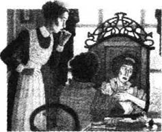
哈里来的时候，我把他写给我的信都预备好了，还有他给我的戒指和一枚可爱的银制小胸针，胸针上刻有一颗心。我给他开了门，根本就没给他说话的时间。“给你，”我说，“把这些东西都拿回去，”我说，“事情都了结了，我不准备嫁给你了，”我说，“我不能离开我们夫人。”白了！他的脸色变白了，白得就像女人的脸一样。我不得不把门关上。我站在那儿，浑身抖个不停，直到他走了才停下。然后我把门打开，跑到路中间，我就站在那儿……呆呆地望着。人们要是看见我，肯定会笑话我的……
……什么声音？是钟在响吧？哦，太太，您早应该拦住我的！我把您脚下的被子给您盖好。我们夫人脚下的被子也总是我给盖好的，每天晚上都是如此。她总对我说：“晚安，埃伦，睡个好觉，起个大早！”
……哎呀，我有时就想……要是万一发生点儿什么事，我该怎么办呢……不过光想是没什么好处的，是不是，太太？光想是没用的。我发现自己这么做的时候，就会对自己说：“赶快，埃伦！马上打住，我的姑娘！不要再胡思乱想了……！”
ACTIVITIES: Before Reading
ACTIVITIES
Before Reading
1. Read the story titles on the contents page. In which story do you think you will find these people?
1) A woman whose job is teaching children in their own home.
2) Some children who are given a wonderful present.
3) A rich family who enjoy inviting guests to their home.
4) A shy country girl who has never been to a dance before.
5) A woman who keeps a shop in a lonely country area.
6) A poor woman who spends her life serving other people.
7) Someone who is trying to find work in the theatre or films.
2. Read the introduction of the book. Which of these things do you think you will find in the stories?
| a fatal accident | madness | a dangerous journey |
| a murder | a wedding | a forbidden love affair |
| a jealous lover | happy endings | family disagreements |
| money worries | a new baby | an undiscovered crime |
3. What do you think might happen to the people described in the introduction? Choose Y (yes) or N (no) for each sentence.
1) The girl will enjoy her first dance. Y/N
2) The woman will leave the lonely farm. Y/N
3) The artist will fall in love. Y/N
4) The desperate search for work will be successful. Y/N
5) The train journey across Europe will end in disaster. Y/N
6) The cruel children will be punished. Y/N
ACTIVITIES: While Reading
ACTIVITIES
While Reading
1. Read the first story, Feuille d'album. Here are some untrue sentences about it. Change them into true sentences.
1) Ian French was a journalist, who lived in a dirty, untidy flat.
2) He was confident and talkative, but women didn't find him very interesting.
3) He fell in love with a girl when he met her in the street.
4) When he first spoke to her, he gave her some flowers.
2. Read The doll's house, and answer these questions.
1) What did Kezia like best about the doll's house, and why?
2) Why did the other children never speak to the little Kelveys?
3) In what ways were the little Kelveys seen as different?
4) Why do you think the other girls were so cruel to the Kelveys?
5) Why do you think Kezia invited the Kelveys into the garden to see the doll's house?
3. Read The garden party up to the middle of the story. Can you guess how the story continues? Choose one of these ideas.
1) The Sheridans cancel the party.
2) They have the party, but there is no music.
3) They have the party a week later.
4) They have the party, and afterwards they send some left-over food to the family of the dead man.
5) They have the party, and collect some money for the family of the dead man.
4. Read Pictures. Who said this, and to whom? What were they talking about?
1) 'I'm sick and tired of it all, and I've had enough.'
2) 'Give it back to me at once, you bad, wicked woman.'
3) 'I've got enough money for that.'
4) 'They had to be young and able to kick their legs up a bit.'
5) 'I could just go in and sit there and have a coffee, that's all.'
6) 'What's yours?'
5. Read The little governess. Then put these parts of sentences into the correct order, to make a paragraph of four sentences. Begin with number 3.
1) and accepted his offer to show her round Munich for the day.
2) She made her escape and hurried back to the hotel,
3) The little governess did not know the ways of the world,
4) so she was soon talking to him happily,
5) When an old man got into her carriage on the train,
6) but found she had missed her meeting with her new employer.
7) However, the old man was not as pleasant as he seemed,
8) and her first journey abroad ended in disaster.
9) which she finally realized when he demanded a kiss.
10) he was polite to her and kind in a grandfatherly way,
6. Read Her first ball, and answer these questions.
1) Why had Leila never been to a ball before?
2) What did the young men talk about while dancing with Leila?
3) How long had the fat man been going to balls?
4) What did he tell Leila that made her want to cry?
5) What made her feel happy again?
7. Read The woman at the store. Are these sentences true (T) or false (F)? Change the false ones into true sentences.
1) The woman at the store had not changed at all in four years.
2) She lived alone, with only a child and a dog for company.
3) The woman said that her husband was dead and buried.
4) Because of the storm, the travellers slept in the building.
5) The kid talked about her mother shooting and burying a man.
8. Read Millie. Then put these parts of sentences into the correct order, to make a paragraph of four sentences. Begin with number 5.
1) that she wanted to help him escape.
2) As Millie watched them rushing after Harrison,
3) she saw that he was just a young and terrified boy.
4) and she screamed at the men to shoot him down.
5) When Millie found Harrison behind the wood pile,
6) but her heart was so full of pity for him
7) the men sleeping in the house were woken by a barking dog.
8) She knew that he had killed a man,
9) all her feelings of pity for the boy disappeared,
10) However, when he took Sid's horse in the night and rode away,
9. Read The lady's maid, and answer these questions.
Why
1) ...was it no trouble for Ellen to bring the visitor a cup of tea?
2) ...did her grandfather burn her hand when she was young?
3) ...couldn't she remember ever feeling she was a child?
4) ...did she tell Harry she wouldn't marry him?
5) ...did she worry about the future?
ACTIVITIES: After Reading
ACTIVITIES
After Reading
1. Perhaps this is what some of the characters in the stories were thinking. Which characters were they (there is one from each story), and what was happening in the story at that moment?
1) 'Well, here's a new one! The first time she's been out, I imagine. Young, shy, and rather pretty. But it won't last long—they start to look old so quickly. Now where's my programme...?'
2) 'Where does the child get her strange ideas from? Sometimes I don't understand her at all. How could we disappoint all our friends? It really is too selfish of her. Now, what can I do to take her mind off this nonsense? Ah, I know...'
3) 'Nearly home now. What a lovely evening! Spring's on its way—I do love the spring flowers. Now, where's my key... Who's that? Someone's following me! Who can it be?'
4) 'She shouldn't leave me in here with these two! They're laughing at me, and they're horrible! I don't care what she said. I'm going to draw it. Then she'll be sorry!'
5) 'I mean it! I'll give her one more day, and if she doesn't bring me the money, she'll have to go. She's been lying to me for long enough, and I can get good money for that room...'
6) 'Is she really going to leave me after all these years? How will I manage without her? I'm just not used to doing things for myself—I don't know how to!'
7) 'Sweet little thing... Wonderful hair! And so innocent! No idea of how the world goes... Well, she's cost me enough for one day. Time to invite her to pay a little visit...'
8) 'What's that I can hear in the garden? Whose voices are those? No, I don't believe it! How many times have I told her she must never, never...'
9) 'What's she doing in there? Has she really gone to get me something to eat? Does she know who I am? Oh God! What will they do to me when they get back...?'
2. At the end of Feuille d'album, how did the conversation between Ian French and the girl continue? Complete their conversation (use as many words as you like).
IAN: Excuse me, Mademoiselle, you dropped this.
GIRL: That's not mine. I haven't dropped any eggs!
IAN: _____________________________________________
GIRL: Well, thank you. That's very kind of you. But who are you?
IAN: _____________________________________________
GIRL: Oh yes, the tall building. So you're an artist, are you? What kind of pictures do you paint?
IAN: _____________________________________________
GIRL: You'd like to paint me? Oh no, I don't think so...
IAN: _____________________________________________
GIRL: She's not my mother, she's my grandmother.
IAN: _____________________________________________
GIRL: Visit us? Oh, I don't know. We don't have many visitors, but... well, yes, all right.
IAN: _____________________________________________
GIRL: Come tomorrow if you like. Yes, come for coffee at ten.
3. Here is Lil, from The doll's house, now grown up. She is talking about her childhood, when she was at school. Choose a suitable word for each gap.
'We had no money as kids, ______ what was much worse, we had ______ friends. The other girls at school ______ not even allowed to talk to ______. There was one girl, Kezia Burnell, ______ tried to be nice to us. ______ Burnells had this great big doll's ______ in their garden—the other girls ______ stop talking about it. Anyway, Kezia ______ us in to see it, but ______ were only in the garden for ______ minute before that old cat, Kezia's ______, came and threw us out! It ______ our Else so happy, though. She ______ ever spoke when she was a ______, just followed me around, holding my ______, But I always knew when she ______ something, and she really wanted to ______ that doll's house, with its little ______, just like a real one! She ______ forgot it, poor Else!'
4. Here are some remarks made by characters in The garden party. Who said them, and what do the remarks tell you about the people and their opinions?
1) 'You won't bring a drunk workman back to life by stopping a party.'
2) 'I say, Laura, take a look at my coat, can you, before this afternoon? I think it needs ironing.'
3) 'No, wait, take some lilies too. These lilies will seem like something really special to people of that kind.'
4) 'But we can't possibly have a garden party with a man dead just outside the front gate.'
5) 'It was a horrible thing, though. The fellow was married, too. ... Leaves a wife and a whole crowd of kids, they say.'
5. These three women, from Pictures, Her first ball, and The lady's maid, had very different lives. Choose the right notes for each woman, and use them to write short descriptions.
Miss Moss/Leila/The lady's maid
1) an unloved child / began work aged thirteen / chose not to marry / cheerful / unselfish / anxious about the future
2) a singer and actress / getting old and fat / no work / lived alone / no friends or family / friendly / brave / not lucky
3) young and pretty / protected life / parents and relations / no need to earn a living / shy / innocent / easily upset
Now imagine these three women five years after the end of the stories. What do you think their lives are like now?
6. What do you think happened to the little governess after the end of the story? Choose one of these ideas, and continue the story.
1) Suddenly, the little governess came face to face with an angry-looking lady, who stared at her. 'Miss!' the lady said. 'Are you the English governess I expected to meet here?' The little governess blushed. 'Oh, Frau Arnholdt!' she cried. 'Please...'
2) With tears running down her face, the little governess ran to the hotel manager's office, and rushed in without knocking. 'Oh, please help me!' she cried. 'Something terrible has happened to me!' The manager stared at her in surprise...
3) Too upset to think properly, the little governess turned and ran out of the hotel into the street. Where could she go? It was almost dark, and she was alone in a strange city, without a single friend, and with very little money...
7. After the end of The woman at the store, Jo catches up with his friends. Put his conversation with Jim in the correct order, and write in the speakers' names. Jim speaks first (number 3).
1) ______ 'She's a killer, Jo! That husband of hers—he's not away shearing, he's dead and buried. And she shot him!'
2) ______ 'That kid's sick in the head! Any fool could see that!'
3) ______ 'Jo! Good to see you safe and well!'
4) ______ 'Shut it, mate! Her old man's gone shearing, and she gets a bit lonely—end of story! Come on, let's get moving...'
5) ______ 'Oh, is that so? Listen. Jo, I've got something to tell you about that woman.'
6) ______ 'Shot him? You're crazy! Where did you get that idea?'
7) ______ 'She may be sick, Jo, but she saw what her Ma did, I'm sure of it. And that woman shot and buried her husband!'
8) ______ 'I've been well looked after! She's a good woman, Jim—knows how to take care of a man!'
9) ______ 'The kid told us—well, not in words, she drew a picture.'
10) ______ 'What about her? Why are you looking at me like that?'
8. Complete this newspaper report of the story told in Millie (use as many words as you like). What do you think Millie might have said? Was she pleased, or angry, at Harrison's death?
KILLER OF MR WILLIAMSON CAUGHT AND SHOT
Harrison, the young Englishman who is believed ______, disappeared after the shooting. However, last night he ______. Sid Evans and his men were woken ______. They shouted at Harrison to stop, but ______ so ______.
Mrs Millie Evans, wife of Sid Evans, told us, 'What happened to Mr Williamson was ______. I ______.'
9. Do you think the characters in these stories made the right decisions and did the right things? If not, what do you think they should have done?
1) Ian French found an unusual way to meet the girl he had seen.
2) Kezia invited the Kelveys to see the doll's house, although her mother and aunt had told her not to do that.
3) The Sheridans had their party, although a man from the cottages near their house had just been killed.
4) Miss Moss followed the large gentleman out of the café.
5) The little governess accepted an invitation from a man she had met on the train.
6) The fat man told Leila what he was thinking.
7) The travellers rode away and left the child with the woman at the store.
8) Millie didn't tell Sid that she had seen and helped Harrison.
9) Ellen decided not to marry Harry so that she could look after 'her lady'.
10. Here are some different titles for the stories. Which stories could they go with? Can you suggest some more titles of your own?
| A Shocking Death | Gone Shearing |
| The Comfort of Lilies | The Little Lamp |
| A Life of Service | A Kind Heart |
| Springtime in the Heart | The Dancing Partner |
| A Woman in Trouble | Talking to Strangers |
11. Which story did you enjoy most? Which character did you feel most sympathetic towards, or find most interesting? Why?
封底
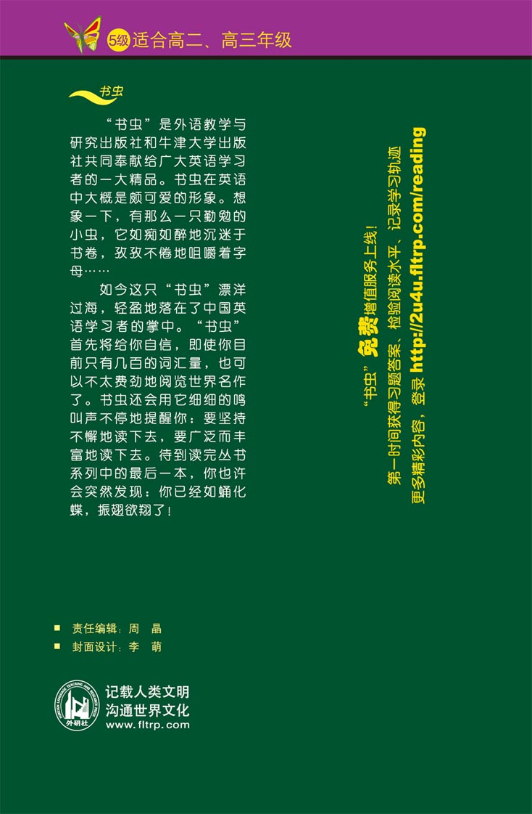